| 盾の勇者の成り上がり 1【電子版書き下ろし付】 (MFブックス) | |
| アネコ ユサギ | |
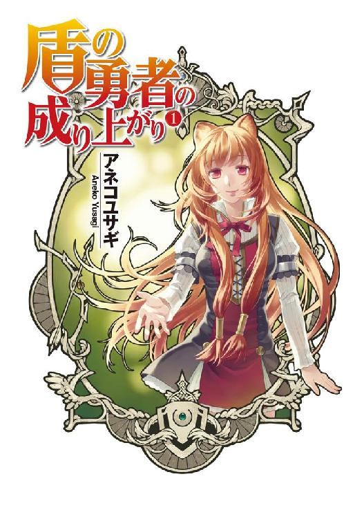
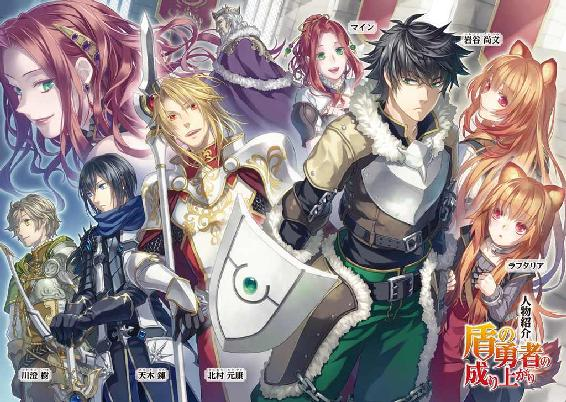
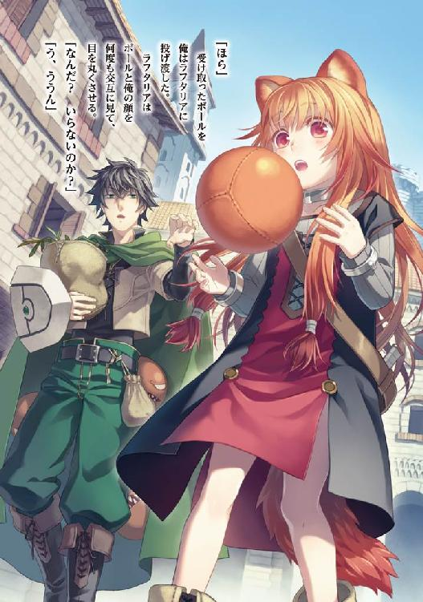
ＭＦブックス
盾の勇者の成り上がり１
アネコユサギ
「ん？」
俺は町の図書館に読書しにやってきていた。
俺、岩谷尚文は大学二年生だ。人よりも多少、オタクであるという自覚はある。
様々なゲームにアニメ、オタク文化と出会ってから、それこそ勉強より真面目に取り組んで生きている。
両親もそんな俺を早々に見限り、弟を有名な塾に通わせて将来の地固めをしている。
そんな目に入れても痛くないほど大切にしていた弟は受験の疲れで不良化、髪を金髪に染め、罵詈雑言を家で言い放っていたものだ。一時期我が家も暗くなった。
そこに現れた救世主こそ、俺！
常時舌打ちして機嫌の悪そうな弟に気さくに話しかけ、有名な美少女恋愛ゲームを勧める。
「ああ!? ざっけんなよ！」
「まあ、騙されたと思って遊んでみてくれよ」
俺は知っている。弟が不良になってしまった理由を。
好きなものを自由に買い与えられて育った俺に対し、弟はそうではなかった。弟は俺と同じ様に遊びたかったのだ。だから、そんな遊びのスペシャリストの俺が勧めるゲームと聞いて、弟も興味を持ったと後に語る。
結果だけを言うと、世界にオタクがまた一人増えた。
今や弟の部屋は俺の勧めた美少女恋愛ゲームのグッズで占められている。
しかも悔しいことに受験の疲れから精神的に解放された弟は有名進学校に合格、トップ街道を駆け抜けている真っ最中らしい。
この、俺の大いなる活躍により、両親はますます俺を甘やかすこととなり、俺は自由な大学生活を満喫している。
さて、話は脱線したが、その日、俺は町の図書館へ読書しに来ていた。
両親がくれる月々の軍資金は一万円。友人同士でエロゲやエロ本、ライトノベルに漫画を回しているとあっという間になくなってしまう金額だ。アルバイトをしてさらに五万円ほど軍資金にしているが、夏と冬、その他地方の祭典に参加しているとそれも即座に底を突く。
イベントに自分からは参加しない弟の為にも両親はイベント期間中のみ、祭典場近くに宿泊する場所を提供してくれているが......。
まあ、生活があるのでそこまで投資してくれないのが当然だ。学費と衣食住の提供だけで十分だ。
だから節約の為に、懐が寂しい時は古本屋で立ち読みしたり、図書館で読書をしたりしている。
暇ならネットゲームでもやれば良いのだろうが、アレは極めるとなると無限に時間を浪費していくからな。
そもそも俺は浅く広い知識で遊ぶタイプなのだ。
レベルカンストを目指すよりもゲーム内では如何に金銭を稼ぐかに夢中になる。斯く言う今もネットゲーム内で俺の作成したキャラクターは、レアアイテムを露店で販売している真っ最中である。
そのため、リアルの俺は絶賛暇を持て余し中である。
でだ。
事件はこの後に起こった。
俺は古いファンタジーを扱っているコーナーへ目を通していた。
何分、人類の歴史に匹敵する程、ファンタジーの歴史は古いからな。聖書だって突き詰めればファンタジー小説だ。
「四聖武器書？」
なにやら古そうな本が、本棚から落ちてきた。タイトルは辛うじて読める。おそらく、前に手に取った奴が棚に戻すのをおざなりにして立ち去ったのだろう。
まあ、これも何かの縁だ。俺は椅子に腰を掛けて四聖武器書を開いて読む。
ペラ......ペラ......。
世界観の説明から入る話だ。
要約すると、とある異世界で終末の予言がなされた。
その予言は幾重にも重なる災厄の波がいずれ世界を滅ぼすというもの。
災厄を逃れる為、人々は異世界から勇者を呼んで助けを乞うたとか何とか。
......うーむ。使い古されたネタであるが、これだけ古臭い本となると新鮮だったのかもしれない。
そして召喚された四人の勇者はそれぞれ武器を所持していた。
剣、槍、弓、そして盾。
いや～そもそも盾は武器じゃなくて防具だろう～などと苦笑しながら続きを流し見ていく。
勇者達は力をつけるため旅立ち、己を磨き、災厄の波に備えていった。
「ふわぁ......」
ヤバイ、眠くなってくる。王道過ぎて欠伸が出る。古いからか可愛いヒロインとかが全然出てこないんだ。精々王女様くらいだけど、四人も勇者がいる事でビッチ臭がしてきてイライラする。
王女も、どの勇者にも色目を使いやがって、誰か一人にしろよ。
大活躍の剣の勇者とか、仲間思いの槍の勇者とか、間違った事が許せない弓の勇者とかさ。
どの勇者も見所があってかっこ良くはある。最近の作品には少ないけど、全員が主人公的な話なんだろう。
お？ 盾の勇者の方へ物語がシフトして──
「あれ？」
ページを捲った俺は思わず声を上げた。
盾の勇者を語るページから先が真っ白だったのだ。
何度見直しても真っ白で、その先は無い。
「何なんだ？」
不思議に思っていると、今度は身体がふらふらしてきた。
「あ、あれ？」
そう呟いたのを最後に、俺の意識はスーッと遠くなっていった......。
まさか、これで異世界に行くとは夢にも思いはしなかった。
「おお......」
感嘆の声に俺はハッと我に返る。
定まらなかった視点を前に向けると、ローブを着た男達がこちらを見て何やら唖然としていた。
「なんだ？」
声がした方に目を向けると俺と同じように状況を飲み込めていないらしき男が三人。
一体どうなっているのか、首を傾げた。
俺、さっきまで図書館に居たよな、なんで......？ ていうかここはドコだ？
キョロキョロと辺りを見渡すと石造りの壁が目に入る。
レンガ調という奴か？ とにかく、見覚えの無い建物だ。間違っても図書館ではない。
下を見ると蛍光塗料を塗られて作られたかのような幾何学模様と祭壇があった。
なんとなくファンタジー物に出てくる魔法陣に似たものもある。
その祭壇に俺達は立たされていた。
でだ......なんで俺、盾を持っているんだ？
妙に軽く、ピッタリと手に引っ付く盾を俺は持っていた。何で持っているのか理解に苦しむので地面に置こうとするのだけど手から離れない。
「ここは？」
とにかくどうなっているのか気になっている所で、前に居る剣を持った奴がローブを着た男に尋ねた。
「おお、勇者様方！ どうかこの世界をお救いください！」
「「「「はい？」」」」
異口同音で俺達は叫んだ。
「それはどういう意味ですか？」
何だろうこのフレーズ。ネット小説とかで読んだ事があるような気がする。
「色々と込み入った事情がありますが、ご理解していただける言い方ですと、勇者様達を古の儀式で召喚させていただきました」
「召喚......」
うん。あれだ。何かのドッキリである可能性は非常に高いが、一応は話を合わせて聞いておくにこしたことは無い。仮にドッキリでも騙されている奴の方が美味しいだろう。
俺は好きだぞ。そういうネタ根性。
「この世界は今、存亡の危機に立たされているのです。勇者様方、どうかお力をお貸しください」
ローブを着た男達が深々と俺達に頭を下げる。
「まあ......話だけなら──」
「嫌だな」
「そうですね」
「元の世界に帰れるんだよな？ 話はそれからだ」
話を聞こうと俺が喋っている最中、遮るように他の三人が口を挟んだ。
はい？
必死に頭を下げている奴になんて態度で答えるんだよ、コイツ等。
話だけでも聞いてから結論を述べれば良いだろうに。
俺が無言で睨むと三人は俺に視線を向ける。
......なんで半笑いなんだよ、コイツ等。微妙にテンションが上がってるのが分かるぞ。
実は嬉しいんだろ、お前等。まあこれが真実なら、異世界に跳躍したいという夢を叶えられた状況だけどさー......お前等のセリフも常套句だよな。でもさ、だからこそ話を聞いてやれよ。
「人の同意なしでいきなり呼んだ事に対する罪悪感をお前らは持ってんのか？」
剣を持った男、パッと見だと高校生くらいの奴がローブを着た男に剣を向ける。
「仮に、世界が平和になったらポイっと元の世界に戻されてはタダ働きですしね」
弓を持った奴も同意してローブの男達を睨みつける。
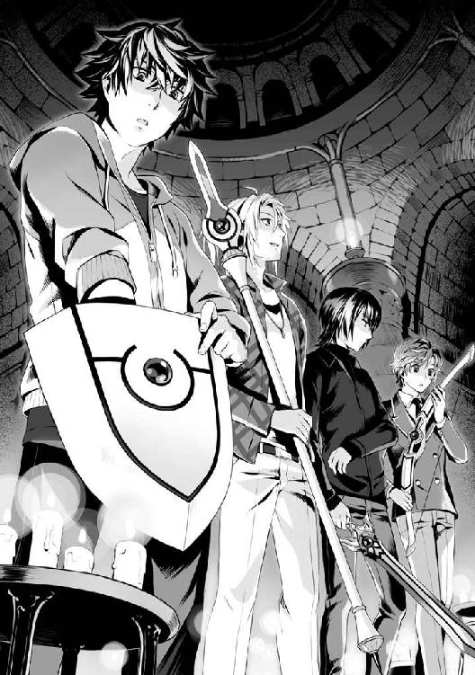
「こっちの意思をどれだけ汲み取ってくれるんだ？ 話によっちゃ俺達が世界の敵に回るかもしれないから覚悟しておけよ」
これは、アレだ。自分達の立場の確認と後の報酬に対する権利の主張だ。
どれだけ逞しいんだコイツ等は、なんか負けた気がしてくる。
「ま、まずは王様に謁見して頂きたい。報奨の相談はその場でお願いします」
ローブを着た男の代表が重苦しい扉を開けさせて道を示す。
「......しょうがないな」
「ですね」
「ま、どいつを相手にしても話はかわらねえけどな」
逞しい奴等はそう言いながら付いて行く。俺も置いて行かれないように後を追うのだった。
俺達は暗い部屋を抜けて石造りの廊下を歩く。
......なんだろう。空気が美味しいと表現するだけしか出来ないのは俺の語彙が貧弱だからだろうか。
窓から覗く光景に俺達は息を呑む。
どこまでも空が高く、そして旅行のパンフレットにでも描かれていそうな、ヨーロッパのような町並みが其処にはあった。しかしそんな町並みに長く目を向ける暇は無く、通されるまま廊下を進むと直に謁見の間に辿りついた。
「ほう、こやつ等が古の四聖の勇者達か」
謁見の間の玉座に腰掛ける偉そうな爺さんが俺達を値踏みして呟いた。
なんというか、第一印象が良くないなぁ......。
人を舐めるように見る奴を俺はどうも好きになれない。
「ワシがこの国の王、オルトクレイ＝メルロマルク三二世だ。勇者達よ顔を上げい」
さげてねーよ！ と、突っ込みを入れたい衝動に駆られたがグッと我慢する。
一応は目上の相手だし、王様らしいからな。
「さて、まずは事情を説明せねばなるまい。この国、更にはこの世界は滅びへと向いつつある」
やはりというか、そこも王道的な展開だ。
「まあ異世界から勇者を召喚するんだから、それ位の理由はあるよな」
「そうですね」
王様の話を纏めるとこうだ。
現在、この世界には終末の予言と言うものが存在する。いずれ世界を破滅へ導く幾重にも重なる波が訪れる。その波が振りまく災厄を撥ね退けなければ世界は滅ぶというのだ。
その予言の年が今年であり、予言の通り、古から存在する龍刻の砂時計という道具の砂が落ちだしたらしいのだ。
この龍刻の砂時計は波を予測し、一ヶ月前から警告する。伝承によれば一つの波が終わる毎に一ヶ月の猶予が生まれる。
当初、この国の住民は予言を蔑ろにしていた。しかし、予言の通り龍刻の砂時計の砂が一度落ちきったとき、災厄が舞い降りた。
次元の亀裂がこの国、メルロマルクに発生し、凶悪な魔物が大量に亀裂から這い出てきた。
その時は辛うじて国の騎士と冒険者で退治することが出来たのだが、次に来る波は更に強力なものとなる。
このままでは災厄を阻止することが出来ない。だから国の重鎮達は伝承に則り、勇者召喚を行った。というのが事のあらましだ。
ちなみに言葉が分かるのは俺達が持っている伝説の武器にそんな能力があるかららしい。
「話は分かった。で、召喚された俺達にタダ働きしろと？」
「都合の良い話ですね」
「......そうだな、自分勝手としか言いようが無い。滅ぶのなら勝手に滅べばいい。俺達にとってどうでもいい話だ」
先ほどの笑い方からわかるけど、内心は大喜びの癖にぬけぬけと何を言っているのやら。
まあ、俺も便乗するか。
「確かに助ける義理も無いよな。タダ働きした挙句、平和になったら『さようなら』なんてされたらたまったもんじゃない。というか帰れる手段があるのか聞きたい。その辺りどうなの？」
「ぐぬ......」
王様が臣下の者に向けて視線を送る。
「もちろん、勇者様方には十分な報酬を差し上げる予定です」
俺を含め、勇者達はグッと握り拳を作った。
よし！ 話し合いの第一歩を踏み出した。
「他に援助金も用意できております。是非、勇者様方には世界を守って頂きたく、その為の場を整える所存です」
「へー......まあ、約束してくれるのなら良いけどさ」
「俺達を飼いならせると思うなよ。敵にならない限り協力はしておいてやる」
「......そうだな」
「ですね」
どうしてコイツ等は常に上から目線なんだよ。現状、王国が敵になったら一番困るのは俺達だ。
まあ、ここはしっかりしておかなきゃ骨折り損のくたびれ儲けになりかねないからしょうがないか。
「では勇者達よ。それぞれの名を聞こう」
ここで俺は気が付いた。これ、さっきまで読んでいた本、四聖武器書に似ていないか？
剣に槍に弓、そして盾。
勇者という共通項もあるし、俺達は本の世界に迷い込んでしまっているのかもしれない。そう考えていると剣を持った少年──剣の勇者が前に出て自己紹介を始めた。
「俺の名前は天木錬だ。年齢は一六歳、高校生だ」
剣の勇者、天木錬。外見は、美少年と表現するのが一番しっくり来るだろう。
顔の作りは端正で、体格は小柄で一六〇センチくらいだろうか。女装をしたら女の子と間違う奴だって居そうな程、顔の作りが良い。髪はショートヘアーで若干茶色が混ざっている。
切れ長の瞳と白い肌、なんていうかいかにもクールという印象を受ける。
細身の剣士という感じだ。
「じゃあ、次は俺だな。俺の名前は北村元康、年齢は二一歳、大学生だ」
槍の勇者、北村元康。外見は、なんと言うか軽い感じのお兄さんと言った印象の男性だ。
錬に負けず、整った顔立ちだ。彼女の一人や二人居そうなくらい、人付き合いを経験しているような雰囲気がある。身長は一七五センチくらいか。
髪型は後ろに纏めたポニーテール。男がしているのに妙に似合っているな。
面倒見の良いお兄さんって所か。
「次は僕ですね。僕の名前は川澄樹。年齢は一七歳、高校生です」
弓の勇者、川澄樹。外見は、ピアノとかを弾いていそうな大人しそうな少年だ。
なんていうのだろう。儚げな、それでありながらしっかりとした強さを持つ、あやふやな存在感がある。身長はこの中で一番低い一五五センチくらいか。
髪型は若干パーマが掛かったウェーブヘアー。大人しそうな弟分という感じ。
みんな日本人のようだ。これで外国人とかだったら驚くけどさ。
おっと、次は俺の番か。
「最後は俺だな、俺の名前は岩谷尚文。年齢は二十歳、大学生だ」
王様が俺を舐めるように見てきた。背筋が何かむず痒いな。
「ふむ。レンにモトヤスにイツキか」
「王様、俺を忘れてる」
「おおすまんな。ナオフミ殿」
まったく、抜けた爺さんだ。そりゃあ......なんとなくこの中で俺は場違いな気もするが其処はこう、忘れないで欲しい。
「では皆の者、己のステータスを確認し、自らを客観視して貰いたい」
「へ？」
ステータスって何!?
「えっと、どのようにして見るのでしょうか？」
樹がおずおずと王様に尋ねた。
「何だお前等、この世界に来て真っ先に気が付かなかったのか？」
錬が、情報に疎い連中だと呆れたように言う。
知るか！ というか、何だその情報通ですって顔は。
「なんとなく視界の端にアイコンが無いか？」
「え？」
言われるまま、何処を見るでもなくぼんやりとすると視界の端に何か妙に自己主張するマークが見えた。
「それに意識を集中するようにしてみろ」
ピコーンと軽い音がして、まるでパソコンのブラウザのように視界に大きくアイコンが表示された。
岩谷尚文
職業 盾の勇者 Ｌｖ１
装備 スモールシールド（伝説武器）
異世界の服
スキル 無し
魔法 無し
さらっと見るだけでもまだまだ色々な項目があるけれど割愛する。ステータスとはこれの事か。
っていうかなんだよこれ！ 妙にゲームっぽいな。
「Ｌｖ１ですか......これは不安ですね」
「そうだな、これじゃあ戦えるかどうか分からねぇな」
「というかなんだコレ」
「勇者殿の世界には存在しないので？ これはステータス魔法というこの世界の者なら誰でも使える物ですぞ」
「そうなのか？」
現実の肉体を数値化して見ることが出来るのが当たり前なのか、これは驚きだ。
「それで、俺達はどうすれば良いんだ？ 確かにこの値は不安だな」
「ふむ、勇者様方にはこれから冒険の旅に出て、自らを磨き、伝説の武器を強化していただきたいのです」
「強化？ この持ってる武器は最初から強いんじゃないのか？」
「いいえ。召喚された勇者様が自らの所持する伝説の武器を育て、強くしていくそうです」
「その武器が武器として役に立つまで別の武器とか使えばいいんじゃね？」
元康が槍をくるくる回しながら意見する。
それもそうだ。というか俺は盾、武器ですらない物を持たされているのだから必要だ。
「そこは後々片付けて行けば良いだろ。とにかく、頼まれたのなら俺達は自分磨きをするべきだ」
錬がそういって場をまとめた。
異世界に勇者として召喚されるという燃えるようなシチュエーション。
少々マンガじみているが、オタクなら是が非でもやってみたいという思いが沸々と湧いてくる。
なんていうか胸一杯の状態で興奮が冷めそうに無い。他の連中も同様でみんなご執心だ。
「俺達四人でパーティーを結成するのか？」
「お待ちください勇者様方」
「ん？」
冒険の旅に出ようとしていると大臣が進言する。
「勇者様方は別々に仲間を募り冒険に出る事になります」
「それは何故ですか？」
「はい。伝承によると、伝説の武器はそれぞれ反発する性質を持っておりまして、勇者様方だけで行動すると成長を阻害すると記載されております」
「本当かどうかは分からないが、俺達が一緒に行動すると成長しないのか？」
ん？ なんか武器の所に伝説の武器の使い方とかヘルプがついている。
みんな気が付いたようで目で追っている。
『注意、伝説の武器を所持した者同士で共闘する場合。反作用が発生します。なるべく別々に行動しましょう。』
「本当みたいだな......」
というか何だこのゲームっぽい説明は。まるでゲームの世界に入り込んだみたいだ。
まあこんなリアリティのあるゲームは存在しないし、人間が生きているんだから現実なんだけど、システム的に見て、そういう感想を抱いた。
ズラーッとこの武器の使い方が懇切丁寧に記載されているけれど、今は全部読んでいる暇はなさそうだ。
「となると仲間を募集した方が良いのかな？」
「ワシが仲間を用意しておくとしよう。なにぶん、今日は日も傾いておる。勇者殿、今日はゆっくりと休み、明日旅立つのが良いであろう。こちらは明日までに仲間になりそうな逸材を集めておく」
「ありがとうございます」
「サンキュ」
それぞれの言葉で感謝を示し、その日は王様が用意した来客部屋で俺達は休むこととなった。
来客室の豪華なベッドに座り、みんなそれぞれの武器をマジマジと見つめながら視界に浮かぶステータス画面に目を向けている。
窓の方を見ると何時の間にか日がとっぷりと沈んでいた。
それだけ集中して説明を読んでいる訳だ。
えっと、伝説の武器はメンテナンスが不必要の万能武器である。
持ち主のＬｖと武器に融合させる素材、倒したモンスターによってウェポンブックが埋まっていく。
ウェポンブックとは変化出来る武器の種類を記載してある一覧表であるらしい。
俺は武器のアイコンにあるウェポンブックを開く。
ズラ────────────────！
枠を越えて武器アイコンは長々と記載されていた。そのどれもがまだ変化不可能と表示されている。
ふむふむ、特定の武器に繋がるように武器を成長させたりも出来るみたいだな。
アレだ。ネットゲームのスキルツリーみたいな感じだ。
スキルを覚えるには変化出来る武器に収められた力を解放する必要がある、と......。
ホント、ゲームっぽいな。
「なあ、これってゲームみたいだな」
俺以外の連中もヘルプを見ているのだろう。俺の問いに返事をした。
「っていうかゲームじゃね？ 俺は知ってるぞ、こんな感じのゲーム」
元康が自慢げに言い放つ。
「え？」
「というか有名なオンラインゲームじゃないか、知らないのか？」
「いや、俺も結構なオタクだけど知らないぞ？」
「尚文、知らねえのか？ これはエメラルドオンラインってんだ」
「何だそのゲーム、聞いたことも無いぞ」
「尚文、本当にネトゲやったことあるのか？ 有名タイトルじゃねえか」
「俺が知ってるのはオーディンオンラインとかファンタジームーンオンラインとかだよ、有名じゃないか！」
「なんだよそのゲーム、初耳だぞ」
「え？」
「え？」
「皆さん何を言っているんですか、この世界はネットゲームではなくコンシューマーゲームの世界ですよ」
「元康、樹、違うだろう。ＶＲＭＭＯだろ？」
「はぁ？ 仮にネトゲの世界に入っているとしてもクリックかコントローラーで操作するゲームだろ？」
元康の問いに錬が首をかしげて会話に入ってくる。
「クリック？ コントローラー？ お前ら、何そんな骨董品みたいなゲームの話をしているんだ？ 今時ネットゲームと言ったらＶＲＭＭＯだろ？」
「ＶＲＭＭＯ？ バーチャルリアリティＭＭＯか？ そんなＳＦの世界にしかないゲームは科学が追いついてねえって。寝ボケてるのか？」
「はぁ!?」
錬が声高々に異を唱える。
そういえば、コイツは一番早くステータス魔法ってのに気が付いたな。何か手馴れている印象を受ける。もしかしたら何か知っているのかも。
「あの......皆さん、この世界はそれぞれなんて名前のゲームだと思っているのですか？」
樹が軽く手を上げて尋ねる。
「ブレイブスターオンライン」
「エメラルドオンライン」
「知らない。っていうかゲームの世界？」
ゲームっぽいとは思うけど、まったく知らないゲームの世界に来てしまったのか俺は？
「あ、ちなみに自分はディメンションウェーブというコンシューマーゲームの世界だと思ってます」
みんなそれぞれ聞いたことも無いゲームの名前を告げる。
「まてまて、情報を整理しよう」
元康が額に手を当てて俺達を宥める。
「錬、お前の言うＶＲＭＭＯってのはそのまんまの意味で良いんだよな？」
「ああ」
「樹、尚文。お前らも意味は分かるよな」
「ＳＦのゲーム物にあった覚えがありますね」
「ライトノベルとかで読んだ覚えがある」
「そうだな。俺も似たようなもんだ。じゃあ錬、お前の、そのブレイブスターオンラインだっけ？ それはＶＲＭＭＯなのか？」
「ああ、俺がやりこんでいたＶＲＭＭＯはブレイブスターオンラインと言う。この世界はそのシステムに非常に酷似した世界だ」
錬の話を参考にすると、ＶＲＭＭＯというものは錬にとって当たり前のようにある技術で、脳波を認識して人々はコンピューターの作り出した世界へダイヴする事ができるらしい。
「それが本当なら、錬、お前のいる世界に俺達が言ったような古いオンラインゲームはあるか？」
錬は首を横に振る。
「これでもゲームの歴史には詳しい方だと思っているがお前達が言うようなゲームは聞いたことが無い。お前達の認識では有名なタイトルなんだろう？」
俺も元康も頷く。
オンラインゲームに詳しいのなら聞いたことが無いというのはおかしい。
そりゃあ、俺達の視野が狭い可能性があるかもしれないが、有名タイトルくらいなら言えるはずだ。
「じゃあ一般常識の問題だ。今の首相の名前は言えるよな」
「ああ」
「一斉に言うぞ」
ゴクリ......。
「湯田正人」
「谷和原剛太郎」
「小高縁一」
「壱富士茂野」
「「「「......」」」」
聞いたことも無い首相の名前だ。間違っても歴史の授業に出てきた例は無い。
それから俺達は自分の世界で有名なネット用語やページ、有名ゲームを尋ね合った。そしてそのどれもを互いが知らないと言う結論に至った。
「どうやら、僕達は別々の日本から来たようですね」
「そのようだ。間違っても同じ日本から来たとは思えない」
「という事は異世界の日本も存在する訳か」
「時代がバラバラの可能性もあったが、幾らなんでもここまで符合しないとなるとそうなるな」
なんとも奇妙な四人が集まったものだ。
だとしても、みんなオタクなのは共通なのだろう。気にする必要も無いか。
「このパターンだとみんな色々な理由で来てしまった気がするのだが」
「あんまり無駄話をするのは趣味じゃないが、情報の共有は必要か」
錬がなんとも鼻にかかる声で、俺はクールだぜと主張するように話し出す。
「俺は学校の下校途中に、巷を騒がす殺人事件に運悪く遭遇してな」
「ふむふむ」
「一緒に居た幼馴染を助け、犯人を取り押さえた所までは覚えているのだが」
......錬は脇腹を摩りながら事情を説明する。
幼馴染を助けるとか何処のヒーローだよお前と、ツッコミを入れてやりたいがまあ良いとしよう。大方、犯人を捕まえたのは良いけど揉み合いで脇腹を刺されたといった所か。
見栄と嘘を堂々と言う辺り、信用したくないカテゴリーに入れたいが勇者仲間だ。聞き流してあげよう。
「そんな感じで気が付いたらこの世界に居た」
「そうか、幼馴染を助けるなんてカッコいいシチュエーションだな」
俺のお世辞にクールを装って笑っている。もうそれは良いから。
「じゃあ次は俺だな」
軽い感じで元康が自分を指差して話し出す。
「俺はさ、ガールフレンドが多いんだよね」
「ああ、そうだろうよ」
何か面倒見のよさそうなお兄さんっぽいし。女の子が好きっぽいイメージある。
「それでちょーっと」
「二股三股でもして刺されたか？」
錬が小ばかにするように尋ねる。すると元康は目をパチクリさせて頷きやがった。
「いやぁ......女の子って怖いね」
「ガッデム！」
俺は怒りを露にして中指を立てる。
死ねこの野郎。いや、死んだからこの世界に召喚されたのか？
おっと、樹が胸に手を当てて話し出す。
「次は僕ですね。僕は塾帰りに横断歩道を渡っていた所......突然ダンプカーが全力でカーブを曲がってきまして、その後は......」
「「「......」」」
十中八九轢かれたか......なんとも哀れな最後だ。
ん？ この中で俺、浮いてないか？
「あー......この世界に来た時のエピソードって絶対話さなきゃダメか？」
「そりゃあ、みんな話しているし」
「そうだよな。うん、みんなごめんな。俺は図書館で見覚えの無い本を読んでいて気が付いたらって感じだ」
「「「......」」」
みんなの視線が冷たい。
何？ 不幸な身の上でこの世界に来なきゃ仲間に入れてくれないのか？
ヒソヒソと三人は俺には聞こえないように内緒話をしだす。
「でも......あの人......盾だし......」
「やっぱ......元康の所もそう？」
「ああ......」
なんだか馬鹿にされているような気がしてきた。話題を逸らそう。
「じゃあみんな、この世界のルールっていうかシステムは割と熟知してるのか？」
「ああ」
「やりこんでたぜ」
「それなりにですが」
なるほどなぁ......となると俺だけ素人ってことになるじゃねえか！ ひっでぇ。
「な、なあ。これからこの世界で戦うために色々教えてくれないか？ 俺の世界には似たゲームは無かったんだよ」
錬は冷酷に、元康と樹は何故かとても優しい目で俺を見つめる。
「よし、元康お兄さんがある程度、常識の範囲で教えてあげよう」
何か嘘臭い顔で元康が俺に片手を上げて話しかけてくる。
「まずな、俺の知るエメラルドオンラインでの話なのだが、シールダー......盾がメインの職業な」
「うん」
「最初の方は防御力が高くて良いのだけど、後半に行くに従って受けるダメージが馬鹿にならなくなってな」
「うん......」
「高Ｌｖは全然居ない負け組の職業だ」
「ノオオオオオオオオオオオオオオオオオオ！」
それは聞きたくなかった！
何その死亡通告、俺は最初から負け組ですよと言いたげだな。おい！
「アップデート、アップデートは無かったのか？」
職業バランスとか！
「いやぁシステム的にも人口的にも絶望職で、放置されてた。しかも廃止決定してたかなぁ......」
「転職は無いのか!?」
「その系列が死んでるというかなんていうか」
「スイッチジョブは？」
「別の系統職になれるネトゲじゃなかったなぁ」
げ!? これが本当なら難しい職業をやらされる羽目になるのか。
俺は自分の盾を見つめながら思う。お前、そんなに将来が暗いのか？
「お前等の方は？」
錬と樹に目を向ける。すると二人ともサッと目を逸らしやがった。
「悪い......」
「同じく......」
えー！ という事は俺はハズレを引いてしまったのか？
放心する俺を横目に三人はそれぞれのゲームの話題に花を咲かせる。
「地形とかどうよ」
「名前こそ違うが殆ど変わらない。これなら効率の良い魔物の分布も同じである可能性が高いな」
「武器ごとの狩場が多少異なるので同じ場所には行かないようにしましょう」
「そうだな、効率とかあるだろうし」
どいつもコイツも俺ってチート能力に目覚めたんじゃね？ って思っているような気がしてきた。
......そうだ。俺が弱いなら仲間に頼ればいいじゃないか。
やる方法は幾らでもある。俺がダメでもパーティーで戦えば自然と強くなれる。
異世界といえば仲間達と一緒に戦い、心を深めていく。これが王道だろう。
仲間に女の子がいれば完璧だな。盾的には敵の攻撃を防いで守る感じか。元の世界では女の子と縁が無かったが、もしかしたらこれから出会いがあるかも。
「ふふ......大丈夫、せっかくの異世界なんだ。俺が弱くてもどうにかなるさ」
三人から何かかわいそうな物を見る目で見られているような気がしたけど、気にしたら負けだ。
そもそもだ。俺の装備は防具だし、ゲームとは違うんだ。成長する専用の盾を捨てて武器を使えば良い。
「よーし！ 頑張るぞ！」
己に活を入れる。
「勇者様、お食事の用意が出来ました」
お？ どうやら晩飯が食べられるみたいだ。
「ああ」
みんな扉を開け、案内の人に騎士団の食堂に招待された。
ファンタジー映画のワンシーンのような城の中にある食堂。そのテーブルにはバイキング形式で食べ物が置いてある。
「皆様、好きな食べ物をお召し上がりください」
「なんだ。騎士団の連中と一緒に食事をするのか」
ぶつぶつと錬が呟く。これで文句を言うなんて失礼な奴だな。
「いいえ、こちらにご用意した料理は勇者様が食べ終わってからの案内となっております」
そう言われて、俺は辺りを見渡す。
すると騒がしいと思っていた人たちはコックであるのに気が付いた。
なるほど、優先順位という奴か。俺達が食べ終えてから騎士団の連中に披露すると。
「ありがたく頂こう」
「ええ」
「そうだな」
こうして俺達は異世界の料理を堪能した。
ちょっと不思議な味だと思ったけど、食べられない料理は無かった。
ただ、オムレツっぽいのにオレンジの味がしたりと変わった食べ物がかなり交じっていたけど。
食事を終えた俺達は、部屋に戻ると途端に眠くなって来た。
「風呂とか無いのかな？」
「中世っぽい世界だしなぁ......行水の可能性が高いぜ」
「言わなきゃ用意してくれないと思う」
「まあ、一日位なら大丈夫か」
「そうだな。眠いし、明日は冒険の始まりだ。サッサと寝ちまおう」
元康の言葉にみんな頷き、就寝に入った。
俺を含め三人とも明日が待ち遠しいと思いながら就寝した。明日から俺の大冒険が始まるんだ！
翌朝。
朝食を終えて、王様からお呼びが掛かるのを今か今かと俺達は待ちわびた。
さすがに朝っぱらから騒ぐわけにも行かず、日の傾きから十時過ぎくらいになったかなぁ......と思った頃、俺達は呼び出しを受けた。
待ってましたと俺達は期待に胸を躍らせて謁見の間に向う。
「勇者様のご来場」
謁見の間の扉が開くと其処には様々な冒険者風の服装をした男女が十二人ほど集まっていた。
騎士風の身なりの者もいる。
おお......王様の援助は凄いな。
俺達は王様に一礼し、話を聞く。
「前日の件で勇者殿の同行者として共に進もうという者を募った。どうやら皆の者も、同行したい勇者が居るようじゃ」
一人に付き三人の同行する仲間が居るのなら均等が取れるな。
「さあ、未来の英雄達よ。仕えたい勇者殿と共に旅立つのだ」
え？ そっちが選ぶ側？
これには俺達も驚きだった。まあ、よくよく考えれば異世界の良く分からない連中に選ばせるよりも国民の方に重きを置くよなぁ。
横一列に並ばされる。
ザッザッと仲間達が俺達の方へ歩いてきて、各々の前に集まっていく。
錬、五人。
元康、四人。
樹、三人。
俺、〇人。
「ちょっと王様！」
なんだよコレは！ 幾らなんでも酷いんじゃねえか。
俺のクレームに王様は冷や汗を流す。
「さすがにワシもこのような事態が起こるとは思いもせんかった」
「人望がありませんな」
事もあろうに呆れ顔で大臣が切り捨てる。つーか気の所為か王様が棒読みに聞こえた。
そこへローブを着た男が王様に耳打ちをする。なんとなく笑ったような......？
「ふむ、そんな噂が広まっておるのか......」
「何かあったのですか？」
元康が微妙な顔をして尋ねる。
さすがにこれでは不公平も甚だしい。何だよこの、小学校でチームを作って遊ぶ時に一人だけ仲間はずれにされたような感覚は。
幾らなんでも異世界に来てこんな気持ちになるなんて聞いて無いぞ。
「ふむ、実はの......勇者殿の中で盾の勇者はこの世界に疎いという噂が城内で囁かれているのだそうだ」
「はぁ!?」
「伝承で、勇者とはこの世界を理解していると記されている。その条件を満たしていないのではないかとな」
元康が俺の脇腹を肘で小突く。
「昨日の雑談、盗み聞きされていたんじゃないか？」
似たゲームを知らないっていうアレか？ あれが原因で俺は仲間はずれにされているのか？
というかなんだよその伝承。俺は詳しくないけど、曲がりなりにも盾の勇者だぞ！
そりゃあ他の勇者の話曰く、負け組の武器持ちだけど、ここはゲームじゃねえよ！
「つーか錬！ お前五人も居るなら分けてくれよ」
何か怯える羊みたいな目で錬に同行したい冒険者（男を含む）が錬の後ろに隠れる。
錬もなんだかなぁとボリボリと頭を掻きながら見て、
「俺はつるむのが嫌いなんだ。付いてこれない奴は置いていくぞ」
と、突き放す口調で話すわけだが、そいつらは絶対に動く気配が無い。
「元康、どう思うよ！ これって酷くないか」
「まあ......」
ちなみに男女比は、女性の方が多いという不思議。
ある意味ハーレムが完成しかけている。
「偏るとは......なんとも」
樹も困った顔をしつつ、慕ってくれる仲間を拒絶できないと態度で表している。
ちなみに元康の仲間はみんな女だ。何処までも女を引き寄せる体質なのかコイツは。
「均等に三人ずつ分けたほうが良いのでしょうけど......無理矢理では士気に関わりそうですね」
樹のもっともな言葉にその場に居る者が頷く。
「だからって、俺は一人で旅立てってか!?」
盾だぞ！ お前らの理屈だと負け職の武器だぞ！ 仲間がいなくてどうやって強くなれってんだ！
「あ、勇者様、私は盾の勇者様の下へ行っても良いですよ」
元康の部下になりたがった女性が片手を上げて立候補する。
「お？ 良いのか？」
「はい」
セミロングの赤毛の可愛らしい女の子だ。
顔は結構可愛い方じゃないか？ やや幼い顔立ちだけど身長は俺より少し低いくらいだ。
「他にナオフミ殿の下に行っても良い者はおらんのか？」
......誰も手を上げる気配が無い。王様は嘆くように溜息を吐いた。
「しょうがあるまい。ナオフミ殿はこれから自身で気に入った仲間を勧誘して人員を補充せよ。勇者殿には月々の援助金を配布するが、ナオフミ殿には代価として他の勇者よりも今回の援助金を増やすとしよう」
「は、はい！」
妥当な判断だ。
俺を気に入らないなら仲間になりたい奴を探して補充するのが一番良い。
「それでは支度金である。勇者達よしっかりと受け取るのだ」
俺達の前に四つの金袋が配られる。
ジャラジャラと重そうな音が聞こえた。その中で少しだけ大き目の金袋が俺に渡される。
「ナオフミ殿には銀貨八〇〇枚、他の勇者殿には六〇〇枚用意した。これで装備を整え、旅立つが良い」
「「「「は！」」」」
俺達と仲間はそれぞれ敬礼し、謁見を終えた。
それから謁見の間を出ると、それぞれの自己紹介を始める。
「えっと盾の勇者様、私の名前はマイン・スフィアと申します。これからよろしくね」
「よ、よろしく」
何か遠慮とかそんなのが無い感じでマインは気さくに話しかけてくる。あんな出来事があったからかちょっと気後れしちゃったけど、俺の仲間になってくれた子だ。
仲間は大切にしていかなきゃな。俺は、他の勇者と比べて負け組の武器な訳だし。
それにマインは女の子、俺は盾、防御系だ。絶対に守っていかないとな。
「じゃあ行こうか、マイン、さん」
「はーい」
マインは元気に頷くと俺の後ろに着いて来た。
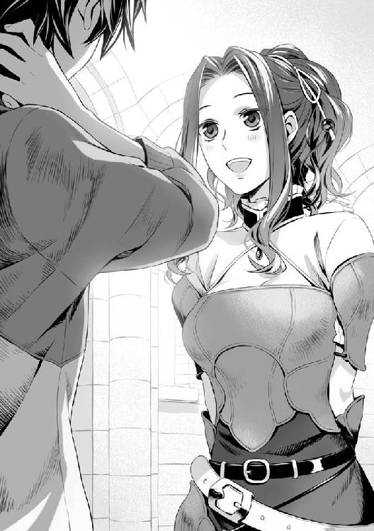
城と町を繋ぐ跳ね橋を渡ると、そこは見事な町並みであった。
昨日もチラッと見たけれど、近くで見るとますます異世界に来たんだなぁと実感する。
石造りの舗装された町並みに、家、そこに垂れ下がる看板。そして食べ物の美味しそうな匂いが立ち込めていて感動する。
「これからどうします？」
「まずは武器とか防具が売ってる店に行きたいな」
「そうですね。それだけのお金があるなら良い装備も買えますし」
盾しか持っていない俺は、まず武器が必要だ。得物が無ければ魔物とかと戦えないし、他のやつらに追い付くのだって難しいだろう。何せ、あいつ等は成長する武器を持っているのだ。それなら少しでもスタートダッシュせねばあっという間にぶっちぎられてしまう。
勇者として召喚されたからには手を抜きたくないし、負け職でも付いて来てくれたマインの為にも頑張らないとな。
「じゃあ私が知ってる良い店に案内しますね」
「お願いできる？」
「ええ」
持つべき物は仲間だよな。マインはスキップするような歩調で俺を武器屋まで案内してくれる。
城を出て十分くらい歩いた頃だろうか、一際大きな剣の看板を掲げた店の前でマインは足を止めた。
「ここがオススメの店ですよ」
「おお......」
店の扉から店内をのぞき見ると壁に武器が掛けられていて、まさしく武器屋といった内装だ。
他にも鎧とか冒険に必要そうな装備は一式取り扱っている様子。
「いらっしゃい」
店に入ると店主に元気良く話しかけられる。筋骨隆々の、絵に描いたような武器屋の店主がカウンターに立っている。これでぶよぶよの脂肪の塊みたいな店主だったら嫌だったから良い。本当に異世界に来たんだなぁ。
「へー......これが武器屋かぁ......」
「お、お客さん初めてだな。当店に入るたぁ目の付け所が違うな」
「ええ、彼女に紹介されて」
そう言って俺はマインを指差すと、マインは手を上げて軽く振る。
「ありがとうよ、お嬢ちゃん......？ 嬢ちゃん、どこかで会った事ねぇかい？」
「前にも来た事があるから。この辺りじゃ親父さんの店って有名だし」
「嬉しいこと言ってくれるねぇ。所でその変わった服装の彼氏は何者だい？」
そう言えばこの世界の基準だと、今の俺の服装は異世界の服だよな。
ともすればお上りにしか見えないか、もしくは変な奴だ。
「親父さんも分かるでしょ？」
「となるとアンタが噂の勇者様か！ へー！」
まじまじと親父さんは俺を見つめる。
「あんまり頼りになりそうに無いな......」
ズルっとコケそうになった。
「はっきり言いますねぇ」
親父さんの言う通り、確かに頼りなくは見えるだろう。これから強くなるわけだし。
「勇者のアンちゃん、良い物を装備しなきゃ冒険者連中に舐められるぜ」
「でしょうね......」
ははは、裏表ない気持ちの良さそうな人だ。
「見た所......はずれか？」
俺の頬が引きつるのを感じた。
どうして俺の噂の伝達は早いのだろうか。まあ、いい。気にしたら負けだ。
「盾の勇者である岩谷尚文と申します。今後も厄介になるかもしれないのでよろしくお願いしますね」
念を押して親父に自己紹介だ。
「ナオフミねえ。まあお得意様になってくれるなら良い話だ。よろしくな、アンちゃん！」
まったく、元気な店主だ。マインが親父さんに尋ねる。
「ねえ親父さん。何か良い装備無い？」
「そうだなぁ。予算はどのくらいだ？」
「そうねぇ......」
マインが俺を値踏みするように見る。
「銀貨二五〇枚の範囲かしら」
所持銀貨八〇〇枚の中で二五〇枚......宿代とか仲間を雇い入れる代金を算出すると相場なのかな。
「お？ それくらいとなると、この辺りか」
親父さんはカウンターから乗り出し、店に飾られている武器を数本持って来る。
「アンちゃん。得意な武器はあるかい？」
「いえ、今のところ無いんですよ」
「となると初心者でも扱いやすい剣辺りがオススメだね」
数本の剣をカウンターに並べた。
「どれもブラッドクリーンコーティングが掛かってるからこの辺りがオススメかな」
「ブラッドクリーン？」
「血糊で切れ味が落ちないコーティングが掛かってるのですよ」
「へぇ......」
そういえば俺の世界の刃物は何度も肉を切っていると切れ味が落ちるって聞いた覚えがある。
つまり切れ味が落ちない剣って訳か。
親父が持っている物を凝視すると、以前見た事のある模造刀よりも質感が凄い。
中々の業物みたいだ。
「左から鉄、魔法鉄、魔法鋼鉄、銀鉄と高価になっていくが性能はお墨付きだぜ」
これは使用している鉱石によって硬度が違うのか？
鉄のカテゴリー武器って感じか。
「まだまだ上の武器があるけど総予算銀貨二五〇枚だとこの辺りだ」
あれだよな。コンシューマーゲームだと最初の町の武器はあんまり良いのが揃ってない感じだけど、ここは結構な品揃えがあるようだ。となるとオンラインゲームに近い世界。いや、異世界の現実なんだから普通は大きな国の武器屋だと品揃えも良くなるか。
「鉄の剣かぁ......」
徐に剣の柄を握り締める。あ、やっぱずっしりと重量がある。
持ってる盾が軽過ぎて気にならなかったけど、武器は結構重いんだな。
この武器で出会う魔物と戦うのかぁ......。
「イッ！」
突然強い電撃を受けたかのように持っていた鉄の剣が弾かれて飛ぶ。
「お？」
親父さんとマインが不思議そうな顔で俺と剣を交互に見る。
「なんだ？」
俺は落としてしまった剣を拾う。先ほどのような変な気配は無い。
なんだったんだ？
そう思いながら考えを戻す。すると、またバチっと痛みが走る。
「イッテ！」
だから何なんだよ、悪戯かと俺は親父を睨むが、親父は首を横に振る。マインが何かするはずも無いけど、俺はマインにも顔を向ける。
「突然弾かれたように見えましたよ？」
そんな馬鹿な。ありえないと思いながら俺は自分の手の平を凝視する。
すると、視界に文字が浮かび上がってきた。
『伝説武器の規則事項、専用武器以外の所持に反しました』
なんだコレは？
急いでヘルプを呼び出して説明文を探す。
あった！
『勇者は自分の所持する伝説武器以外を戦闘の意思を持って使用する事が出来ない』
なんだって!? つまり俺は盾以外を戦闘で使うことが出来ないってのか!?
盾だけで戦うなんてどんなクソゲーだよ。
「えっと、どうも俺はこの盾の所為で武器を戦いで使えないらしい」
苦笑いを浮かべつつ、俺は顔を上げる。
「どんな原理なんだ？ 少し見せてくれないか？」
俺は親父に盾を持つ手を向けて見せる。外れないのだから仕方が無い。
親父が小声で何かを呟くと、盾に向かって小さい光の玉が飛んでいって弾けた。
「ふむ、一見するとスモールシールドだが、何かおかしいな......」
「あ、分かります？」
ステータス魔法にもスモールシールドと記載されていた。
（伝説武器）と言う項目が付いてるけど。
「真ん中に核となる宝石が付いているだろ？ ここに何か強力な力を感じる。鑑定の魔法で見てみたが......うまく見ることが出来なかった。呪いの類なら一発で分かるんだがな」
見終わった親父は目線を俺に向けてトレードマークの髭を撫でる。
「面白いものを見せてもらったぜ、じゃあ防具でも買うかい？」
「お願いします」
「銀貨二五〇枚の範囲で武器防具を揃えさせるつもりだったが、それなら鎧だな」
盾は既に持っているわけだし、結果的にそうなるよな。
親父さんは店に展示されている鎧を何個か指差す。
「フルプレートは動きが鈍くなるから冒険向きじゃねえな、精々くさりかたびらが入門者向けだろう」
と言われて、俺はくさりかたびらに手を伸ばす。ジャラジャラと音が鳴る鎖でつながれた服。
そのまんまだよな。防御は見たとおりって所か？
ん？ アイコンが開いた。
くさりかたびら 防御力アップ 斬撃耐性（小）
ふむふむ、剣の時に項目が出てこなかったのは装備できないからだな。
「あれの値段はどれくらいなんですか？」
マインが店主に尋ねる。
「おまけして銀貨一二〇枚だな」
「買取だと？」
「ん？ そうだなぁ......新古品なら銀貨一〇〇枚で買う所だ」
「どうしたの？」
「盾の勇者様が成長して不必要になった場合の買取額を聞いていたのですよ」
なるほどなぁ......俺もＬｖ１だし成長したらもっと強力な装備が着用できるだろう。これより上の装備もあるようだけど、現状だとこれが一番効果が高いみたいだ。
「じゃあこれをください」
「まいど！ ついでにインナーをオマケしておくぜ！」
店主の気前のよさに俺は感謝の言葉もなかった。銀貨一二〇枚を渡し、くさりかたびらを手に入れた。
「ここで着ていくかい？」
「はい」
「じゃあ、こっちだ」
更衣室に案内され、俺は渡されたインナーとくさりかたびらに着替えた。
元々着ていた服は店主がくれた袋に入れる。
「お、少しはそれらしく見えるカッコになったじゃねえか」
「ありがとうございます」
褒め言葉なんだよなコレ。
「それじゃあそろそろ戦いに行きましょうか勇者様」
「おう！」
冒険者っぽい格好になった俺は気持ち高らかにマインと一緒に店を出るのだった。
それから俺達は城門の方に歩いて、城門を潜り抜ける。
途中、国の騎士っぽい見張りが会釈してくれたので俺も元気良く返した。
ワクワクの冒険の始まりだ。
城門を抜けると見渡す限り草原が続いていた。
一応石畳の道があるが、一歩街道から外れると何処までも草原が続いているのではと思うくらいに、緑で覆いつくされている。
こんなのは北海道へ旅行に行った時以来だ。
とはいえ空の高さや地平線が見えるとなると初体験。
この程度ではしゃいでは勇者として示しが付かないので平静を装う。
「では勇者様、このあたりに生息する弱い魔物を相手にウォーミングアップを図りましょうか」
「そうだね。俺も戦闘は初体験なんだ。どれくらい戦えるか頑張ってみるよ」
「頑張ってくださいね」
「え？ マインは戦ってくれないの？」
「私が戦う前に勇者様の実力を測りませんと」
「そ、そうだね」
考えてみれば経験はマインの方が上だろうし、現在の俺がどれだけできるのかわからない。
まずはマインが安全だと思う魔物を相手に戦ってみよう。
しばらく草原をとぼとぼと歩いていると、なにやら目立つオレンジ色の風船みたいなものが見えてきた。
「勇者様、居ました。あそこに居るのはオレンジバルーン......とても弱い魔物ですが好戦的です」
なんか酷い名前だな。オレンジ色の風船だからオレンジバルーンか？
「ガア！」
凶暴な声と二つの凶悪そうな目が敵意を持っているのを感じさせる。
畑にある、鳥避けの風船みたいな奴がこちらに気付いて襲い掛かってくる。
「頑張ってください勇者様！」
「おう！」
マインの前だし、カッコいい所を見せてやる。
俺は盾を右手に持って鈍器の要領でオレンジバルーンに向けて殴り掛かった。
「おりゃ！」
ボヨンッと殴るとすぐに跳ね返った。意外と弾力がある！
簡単に割れると思ったのに......。
体勢を立て直したオレンジバルーンが牙を剥いて俺に噛み付いてきた。
「い！」
噛み付かれた箇所から硬い音が聞こえる。
不思議な事に痛くも痒くも無い。オレンジバルーンはまだ俺の腕に噛み付いているがまったく効果が無いようだ。
ふんわりと盾から淡い防壁が出て守ってくれているような気がする。おそらく盾の力なのだろう。
俺は無言のままマインの方を見る。
「勇者様頑張って！」
......ダメージは受けない代わりに与えられもしないが仕方ない。
「オラオラオラオラオラ！」
格闘家の伝承者みたいに俺はオレンジバルーンを素手で殴りつけ続けた。
それから五分後......。
パァン！
軽快な音を立てて、オレンジバルーンは弾けた。
「はぁ......はぁ......はぁ......」
ピコーンと音がしてＥＸＰ１という数字が見える。
経験値が１入ったと言う訳か。
しっかし、これだけ戦って１とは......先が思いやられるな。
っていうか硬いよコイツ。素手じゃ限界があるって。
「良く頑張りましたね勇者様」
マインが拍手してくれているけど、なんていうかむなしい。
「ん？」
なにやら足音が聞こえてくる。振り返ると錬とその仲間が小走りで走っていくのが見える。話しかけようかと思ったけど、真面目な表情で走る連中に声を掛ける隙が無い。
あ、錬の前にオレンジバルーンが三匹現れた。
──だが。
錬が剣を一振りするとオレンジバルーンはパァンと音を立てて割れる。
一撃!? おいおい......どんだけ攻撃力に差があるんだよ。
「......」
放心している俺の顔の前にマインが何度も手をかざす。
「大丈夫ですよ。勇者様には勇者様の戦い方があるのですから」
「......ありがとう」
戦闘を初体験した限りだと、五分間もオレンジバルーンに食いつかれていたのに無傷な俺は相当防御力が高いようだ。
戦利品のオレンジバルーンの残骸を拾った。するとピコーンと盾から音が聞こえる。
徐に盾に近づけると淡い光となって吸い込まれた。
ＧＥＴ、オレンジバルーン風船。
そんな文字が浮かび上がり、ウェポンブックが点灯する。中を確認するとオレンジスモールシールドというアイコンが出ていた。まだ変化させるには足りないが、必要材料であるらしい。
「これが伝説の武器の力ですか」
「うん。変化させるには一定の物を吸い込ませると良いみたいだね」
「なるほど」
「ちなみにさっきの戦利品ってどれくらいの値段で取引されているの？」
「銅貨一枚行ったら良いくらいですね」
「......何枚集まれば銀貨一枚？」
「銅貨の場合は一〇〇枚です」
まあ、錬の様子を見ると相当弱い魔物みたいだし、しょうがないか。
「じゃあ次はマインだね」
「まあ、そうなりますね」
と言っているうちに、オレンジバルーンが二匹俺達の方へ近づいてきていた。
マインが腰から抜いた剣を構えて二振りすると、パァンという音と共にオレンジバルーンは弾けた。
うわぁ......俺って弱すぎ......？
とにかく、俺が、というか盾が弱いのは存分に分かった。
こうなったらマインに戦ってもらった方が効率が良いだろう。
「じゃあ、マインが攻撃、俺が守るから行ける所まで行こうか」
「はい」
マインは二つ返事で頷いてくれた。
その後、俺達は日が傾く少し前まで草原を歩き、遭遇するオレンジバルーンとその色違いのイエローバルーンを割る作業を続けたのだった。
「もう少し進むと少し強力な魔物が出てくるのですが、そろそろ城に戻らないと日が暮れますね」
「うーん。もう少し戦っておきたかったんだけどなぁ......」
ダメージ受けないし、バルーンの攻撃を守るのは簡単だから大丈夫かと思うんだけど。
「今日は早めに帰って、もう一度武器屋を覘きましょうよ。私の装備品を買った方が明日には今日より先に行けますよ」
「......そういえば、そうだね」
Ｌｖアップも、もう少し先のようだし、今日はコレくらいにしておいた方が良いか。ちなみに盾に吸わせる量は満たしたから、風船は手元に残っている。
後は......Ｌｖアップすると盾は変化出来るみたいだな。
とにかく、一日目の冒険を切り上げ、俺達は城下町の方へ戻るのだった。
夕方、城下町に戻った俺達は武器屋にまた顔を出した。
「お、盾のアンちゃんじゃないか。他の勇者達も顔を出してたぜ」
みんなこの店で買ったのか。
ホクホク顔の親父が俺達を出迎える。
「そうだ。これって何処で買い取ってくれる？」
オレンジバルーン風船を親父に見せると親父は店の外の方を指差した。
「魔物の素材買取の店がある。そこへ持ち込めば大抵の物は買い取ってくれるぜ」
「ありがとう」
「で、次は何の用で来たんだ？」
「ああ、マイン......仲間の装備を買おうと決めてさ」
俺がマインに視線を向けるとマインは店内の装備をジッと凝視していた。
「予算額は？」
手元に残っているのは銀貨六八〇枚。そこからどれだけの装備品を買うと良いか。
「マイン、どれくらいにしておいた方が良い？」
「......」
マインはとても真面目な表情で装備品を見比べている。
まるで俺の言葉など耳に入っていない。宿代がどれくらいか分からないけど、一ヶ月の生活費は残しておかなきゃいけないだろうしなぁ。
「お連れさんの装備ねぇ......確かに良いものを着させた方が強くなれるだろうさ」
「はい」
どうも俺は攻撃力とは無縁のようだし、マインに装備の代金を集中させる方が良さそうだ。
「割と値が張りそうだから雑談しながら今のうちに値引きしてやる」
「お、面白いことを抜かす勇者様だ」
「八割引！」
「幾らなんでも酷すぎる！ 二割増」
「増えてるじゃねえか！ 七割九分」
「商品を見てねぇで値切る野郎には倍額でも惜しいぜ！」
「ふ、抜かせ！ 九割引！」
「チッ！ 二割一分増！」
「だから増やすな！ 十割引」
「それはタダってんだアンちゃん！ しょうがねえ五分引き」
「少ない！ 九割二分──」
それからしばらくして、マインはデザインが可愛らしい鎧と妙に高そうな金属が使われている剣を持ってきた。
「勇者様、私はこの辺りが良いです」
「親父、合計どれくらいの品？ 六割引」
「オマケして銀貨四八〇枚でさぁ、これ以上は負けられねえ五割九分だ」
マインが決める前に行っていた値切り交渉が身を結び、値段は下げることが出来た。
でも、さすがに残金、銀貨二〇〇枚は厳しくないか？
「マイン......もうちょっと妥協できないか？ 俺は宿代とか生活費がどれだけ掛かるか分からないんだ」
「大丈夫ですよ勇者様、私が強くなればそれだけ魔物を倒したときの戦利品でどうにか出来ます」
目をキラキラ輝かせ、俺の腕に胸を当ててマインはおねだりをしてくる。
さすがは異世界召喚、王道展開。
今まで女の子にモテた事が無い俺ですらこんなにかわいい子が隣にいる。
うん。マインの言う通り攻撃力が重要かもしれないな。
「しょ、しょうがないなぁ......」
銀貨二〇〇枚、考えてみれば錬や元康、樹は最低三人は連れているのだ。活動費は元より装備品にだって金を回させるのがやっとだろう。
ともすれば二〇〇枚あれば一ヶ月生活するには十分である可能性は高い。仲間を募集するのはＬｖアップして稼ぎが軌道に乗ってからでも悪くは無いかも。
「よし、親父、頼んだぞ」
「ありがとうございやした。まったく、とんでもねぇ勇者様だ」
「はは、商売は割と好きなんでな」
ネットゲームでも俺は金を稼ぐのが好きだった。オークションイベントでも出来る限り安く買い、最も高く売るを繰り返す手腕はあると思う。それに人間相手の値切りほど簡単なものは無いだろう。分かりやすい金額が目の前にあるのだから。
「ありがとう勇者様」
ご機嫌なマインが俺の手にキスをした。
これは好感度アップ！ 明日からの冒険が楽になる。
装備を新調したマインと一緒に俺は町の宿屋に顔を出した。
一泊一人銅貨三十枚か......。
「二部屋で」
と、マインが言った。
「一部屋じゃないの？」
「勇者様......」
無言の圧力をマインが出してくる。
う......しょうがない。
「じゃあ二部屋で」
「はいはい。ごひいきにお願いしますね」
宿屋の店主が揉み手をしながら俺達が泊まる部屋を教えてくれた。値段基準を頭に叩き込みながら、宿屋に並列している酒場で晩食を取る。別料金の食事銅貨五枚×二を注文した。
「そういえば......今日、俺達が戦っていた草原はここだよな」
俺は帰りがけに購入した地図を広げてマインに聞いた。
地図にはこの辺りの地形が記されている。錬や元康に聞いた方が良いのかもしれないが、昨日の態度から見るに教えてくれそうに無い。あの手の連中は他者を出し抜くのにためらいが無いのだ。俺が完全に無知なのを良いことに強力な魔物の巣へ導かれてはたまったものではない。
だからその辺りを知っていそうなマインに聞く。
「はい。そうですよ」
「昼間の話から推察するに、草原を抜けた森辺りが次の狩場か？」
地図を広げるとこの国の地形が大まかに分かる。
基本的に城を中心に草原が広がり、そこから森へ続く道と山へ続く道、他に川へ突き当たる場所や村に続く道があるのだ。
あんまり大きな地図ではないので、近くの村もそんなに分からない。
森の先に何があるかこの地図では予想が出来ないが、これから行く道と適性の魔物がいるのを予測しておかなくては戦いようが無い。
「ええ、この地図には載っていませんが私達が行こうとしているのは森を抜けたラファン村です」
「ふむ......そうか」
「ラファン村を抜けた先辺りに初心者冒険者用のダンジョンがあるんですよ」
「ダンジョン......」
夢が広がるな！ ネトゲ基準だとモンスター狩りしかしないけど。
「あまり実入りは無いでしょうが勇者様がＬｖを上げるには良い場所かと思います」
「なるほどね」
「装備も新調しましたし、勇者様の防御力にもよりますが楽勝です」
「そうか、ありがとう。参考になったよ」
「いえいえ、ところで勇者様？ ワインは飲まないのですか？」
酒場故に酒が料理と一緒に運ばれてきたのだが、俺はまったく手をつけていなかった。
「ああ、俺はあんまり酒が好きじゃなくてな」
飲めない訳じゃない。むしろ殆ど酔わないくらい酒に強い体質だ。
だが、大学のサークルとかの飲み会で、みんなへべれけになっている中、飲んでいるのに酔わず、シラフでいるうちに嫌いになった。
「そうなんですか、でも一杯くらいなら」
「悪いね。本当、嫌いなんだ」
「でも......」
「ごめんな」
「そう、ですか」
残念そうにマインはワインを引っ込めた。
「まあ、明日からの方針を相談できて助かったよ。今日は早めに休むから」
「はい、また明日」
食事を終えた俺は騒がしい酒場を後にして割り当てられた部屋に戻る。
さすがに寝るときまでくさりかたびらを着けているわけにはいかない。
脱いで椅子に立てかけておく。
「......」
銀貨の入った袋を備え付けのテーブルに置いた。
残り銀貨二〇〇枚か......先払いの宿だから一九九枚とちょっと。少し心もとない気がして落ち着かないのは俺に貧乏人根性でも染み付いているからだろうか。
観光地に行く日本人の如く、俺は銀貨を三十枚ほど盾の中に隠す。
うん。なんとなく安心したような気がしてきた。
今日は色々あったなぁ。
魔物を倒す手ごたえってあんな感じなのか。風船を割っていただけとしか言い様が無いけど。
ベッドに腰掛け、そのまま横になる。
見慣れない天井。昨日もそうだったけど、俺は異世界に来たんだ。
ワクワクが収まらない。これから俺の輝かしい日々が幕を開けていくんだ。そりゃあ他の勇者仲間には出遅れているけれど、俺には俺の道がある。何も最強を目指す必要は無い。出来る事をやっていけばいい。
なんだか......眠くなって来たな。酒場の方から楽しげな声が聞こえてくる。
元康っぽい声や樹らしき奴が雑談をしながら部屋の前を通り過ぎたような気がした。あいつらもここを宿にしたのかな。
室内用のランプに手を伸ばして消す。少し早いけど、寝るとしよう......。
チャリチャリ......。
ん～......なんだぁ、今の音？ 酒場の奴等、まだ騒いでいるのか？
むにゃ......。
ゴソゴソ............服が引っぱられる。
「フフフ......馬鹿な男、騙されちゃって......明日が楽しみだわ」
誰だろう？ 夢か......？
「ん？」
寒いなぁ......。
陽光が顔を照らし、朝であるのを俺に知らせる。寝ぼけまなこを凝らしながら起き上がって窓の外に目を向ける。思いのほか寝入ってしまっていたらしい。太陽がそれなりに高くなってきている。
体内時計によると、九時位かな。
「あれ？」
何時の間にか服装がインナーだけになっていた。無意識に脱いだかな？
まあ、いいや。
外の景色に目を移すと、当たり前のように人々が通りを行き交っている。
昼食の準備にと定食屋や出店が大忙しで材料を調理している光景や、馬車がトコトコと道を進んでいる光景を見ると、何度だって俺は夢心地の気分になることができた。
ああ、本当に異世界とは素晴らしい。
城下町を走る馬車には複数の種類があるらしい。鳥はダチョウのような、某ゲームで言う所のチョ○ボみたいな生き物だ。どちらかといえば馬の方が高級品のようだ。時々、牛が引いていたりと、なんとも中世チックで素晴らしいな。
「さて、そろそろ飯にでもして旅立つか」
脱いだはずの服を探してベッドを調べる。
......おかしいな。無いぞ？
椅子に立てかけていたくさりかたびらも......何処にも無い。
テーブルに置いた銀貨を入れた袋も無くなっている！ しかも予備の着替えにと残しておいた俺の私服さえ無い！
「な......」
まさか！ 枕荒らしか!? 寝ている最中に泥棒を働くとは笑止千万だ！
この宿......警備がまったく行き届いていないとは何事か！
とにかく、仲間であるマインに急いで伝えないと！
バンッ！ と俺は扉を開けて、隣で寝ているはずのマインの部屋の戸を叩く。
「マイン！ 大変だ！ 俺達の金と俺の装備が！」
ドンドンドン！
何度叩いても一向にマインが出る気配が無い。
ザッザッザ！
なにやら騒がしい足音が近づいてくる。見ると城の騎士達が俺の方へやってきた。コレは闇夜に提灯。枕荒らしに遭った事を説明して、犯人を捕まえてもらおう。
よりによって勇者の寝首を掻いて泥棒とはとんだ馬鹿が居たものだ。
「あなた達は城の騎士だったよな、ちょっと話を聞いてくれないか！」
俺は騎士の方を向いて懸命にアピールする。
マイン、早く部屋から出てきてくれ、今大変な事が起こってるんだ。
「盾の勇者だな！」
「そう、だけど」
なんだよ。妙に敵愾心を感じる応答だな。
「王様から貴様に召集命令が下った。ご同行願おう」
「召集命令？ いや、それよりも俺、枕荒らしに遭っちまったんだ。犯人を──」
「さあ、さっさと付いて来い！」
ぐいっと力強く引っ張られる。
「痛いって！ 話を聞けよ」
騎士達は俺の腕を掴むと半ば無理やり連行していく。
ほとんど下着だっていうのになんだよ。この扱いは！
「おい、マイン！ 早く──」
騎士達は俺の事情を聞かず、俺はマインを宿屋に置いて城へ強制送還された。
先ほどの馬車は俺を連れて行くために来た物であったらしい。
こうして俺は訳の解らないまま、まるで犯罪者でも見るかの様な視線を受け続けた。
カッコッカッコッと揺られ、しばらくするとインナーのまま俺は城の前まで連れて行かれた。ついで、騎士達が俺を槍で拘束したまま謁見の間まで案内する。
其処にはなにやら不機嫌そうな王様と大臣。
そして......。
「マイン！」
錬と元康に樹、その他の仲間も集まっている。俺が声を掛けるとマインは元康の後ろに隠れて、こちらを睨んできた。
「な、なんだよ。その態度」
まるで悪人を見る様な目でみんなが俺を睨んでいる。
「本当に身に覚えが無いのか？」
元康が仁王立ちで俺に詰問してくる。
一体なんだってんだ。
「身に覚えってなんだよ......って、あー！」
元康の奴、俺のくさりかたびらを着ていやがる。
「お前が枕荒らしだったのか！」
「誰が枕荒らしだ！ お前が外道だったとは思いもしなかったぞ！」
「外道？ 何のことだ？」
俺の返答に、謁見の間はまるで裁判所のような空気を醸し出した。
「して、盾の勇者の罪状は？」
「罪状？ 何のことだ？」
「うぐ......ひぐ......盾の勇者様はお酒に酔った勢いで突然、私の部屋に入ってきたかと思ったら無理やり押し倒してきて」
「は？」
「盾の勇者様は『まだ夜は明けてねえぜ』と言って私に迫り、無理やり服を脱がそうとして」
元康の後ろに居たマインが泣きながら俺を指差して非難する。
「私、怖くなって......叫び声を上げながら命からがら部屋を出てモトヤス様に助けを求めたんです」
「え？」
何のことだ？
昨日の晩、俺はマインと別れた後はぐっすり眠っていて身に覚えがまったく無い。
泣きじゃくるマインに困惑するしかなかった。
「何言ってんだ？ 昨日、飯を食い終わった後は部屋で寝てただけだぞ」
「嘘を吐きやがって、じゃあなんでマインはこんなに泣いてるんだよ」
「何故お前がマインを庇ってるんだ？ というかそのくさりかたびらは何処で手に入れた？」
昨日、初めて会った仲だろう？
「ああ、昨日、一人で飲んでいるマインと酒場で出会ってな、しばらく飲み交わしていると、マインが俺にプレゼントってこのくさりかたびらをくれたんだ」
「は？」
どうみてもそれは俺のだろう。
もちろん、マインのポケットマネーで購入した私物の可能性はゼロでは無いが、俺のくさりかたびらが無くなって元康が持ってたら誰だって疑うだろう。
元康では話にならない。ここは王様に進言するとしよう。
「そうだ！ 王様！ 俺、枕荒らしに、寝込みに全財産と盾以外の装備品を全部盗まれてしまいました！ どうか犯人を捕まえてください」
「黙れ外道！」
王様は俺の進言を無視して言い放った。
「嫌がる我が国民に性行為を強要するとは許されざる蛮行、勇者でなければ即刻処刑物だ！」
「だから誤解だって言ってるじゃないですか！ 俺はやってない！」
「何かすると最初に会った時から思っておった！ やはり尻尾を出したなこの悪魔め！」
「あ、悪魔!? なんでそうなるんだよ！」
「やはりそうでしたか、なんとなく僕達とは違う精神の人だと思っていたんですよね」
「そうだな。まさか、こんな犯罪に手を出すような奴だとは......自分を特権階級だと勘違いしたんだな」
「お前は主人公なんかじゃない。マナーを考えろ！」
この場にいる連中全てが俺を黒だと断定して話を進めている。
ドッと自分の血が上がっていくのを感じる。
何だコレ？ 何だよコレ？ 何なんだよコレ!?
身に覚えの無い事で何故俺はこんなにも罵倒されなきゃいけないんだ？
口をパクパクとしながらマインに目を向けると誰からも見られていないと踏んだのか、マインは俺に舌を出してあっかんベーっとする。
ここで俺は悟った。
そして元康を睨みつける。腹の奥からどす黒い感情が噴出してくるのを感じる。
「お前！ 支度金と装備が目当てで有らぬ罪を擦り付けたんだな！」
元康を指差し、こんなに大きく声が出るのだと自分でもびっくりする音量で言葉を発した。
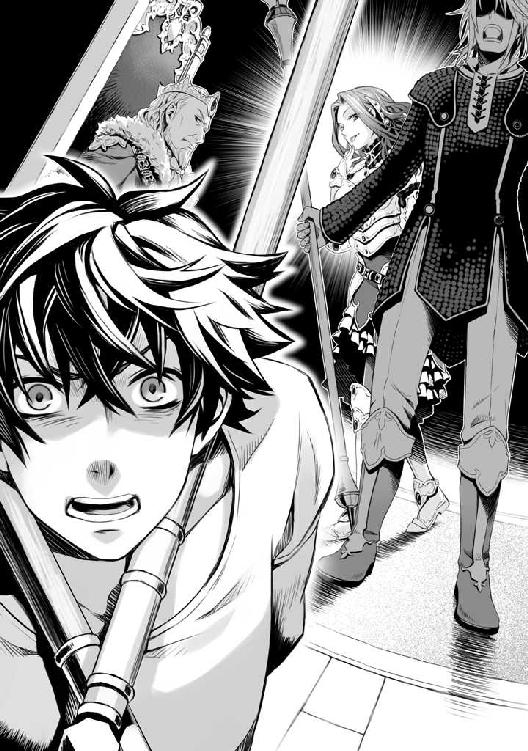
「はっ！ 強姦魔が何を言ってやがる」
マインを俺から見えないように庇いながら、元康は恭しく被害者を助けたヒーローをアピールする。
「ふざけんじゃねえ！ どうせ最初から俺の金が目当てだったんだろ、仲間の装備を行き渡らせる為に打ち合わせしたんだ！」
元康の仲間になりたかったマインにこう囁いたんだ。俺は負け組の盾だから、マインに良いものを買い与える。そして買い与えられた後、持っている金と一緒に持ち物を奪い、被害者面で城に報告。俺を抹殺するつもりだったんだな。
......やってくれるじゃねえか。
そもそもだ。マインは俺の事をずっと勇者様としか呼ばないくせに、元康の事は名前で呼んでいる。これが証拠でなくて何が証拠なんだ。
異世界に勇者は一人だけで十分ってか？
「異世界に来てまで仲間にこんな真似をするなんてクズだな」
「そうですね。僕も同情の余地は無いと思います」
錬と樹が俺を断罪するのに躊躇いが無い。
そうか......コイツ等、最初からグルだったんだな。盾だから、弱いから、強くないから俺を足蹴にして、少しでも自分が有利になるように事を運びたいと思ってたんだ。
──汚い。
何処までも卑怯で最低な連中なんだ。
考えれば最初からこの国の奴等も俺を信じようとすらしない。
知ったことか！ なんでこんな連中を守ってやらなきゃいけない。
滅んじまえ！ こんな世界。
「......いいぜ、もうどうでもいい。さっさと俺を元の世界に返せば良いだろ？ で、新しい盾の勇者でも召喚しろ！」
異世界？ ハ！
なんで異世界に来てまでこんな気持ちにならなきゃいけないんだよ！
「都合が悪くなったら逃げるのか？ 最低だな」
「そうですね。自分の責務をちゃんと果たさず、女性と無理やり関係を結ぼうとは......」
「帰れ帰れ！ こんなことする奴を勇者仲間にしてられねえ！」
俺は錬、元康、樹を殺す意思をこめて睨みつけた。
本当は楽しい異世界になるはずだったんだ。なのにコイツ等の所為で台無しだ。
「さあ！ さっさと元の世界に戻せ！」
すると王様は腕を組んで唸った。
「こんな事をする勇者など即刻送還したい所だが、波の終焉まで方法がない。新たに召喚するには全ての四聖勇者が死亡した時のみだと研究者は語っておる」
「......な、んだって」
「そんな......」
「う、嘘だろ......」
今更三人の勇者様はうろたえてやがる。
元の世界に、帰る術が無い？
「このままじゃ帰れないだと！」
ふざけやがって！
「何時まで掴んでんだコラ！」
俺は乱暴に騎士の拘束を剥がす。
「こら！ 抵抗する気か」
「暴れねえよ！」
騎士の一人が俺を殴る。
ガンっと良い音がした。けれど痛くも痒くも無い。どうも騎士の方はそうではなかったようで殴った腕を握って痛みを堪えている。
「で？ 王様、俺に対する罰は何だよ？」
腕を振り回し、痺れを治してから尋ねる。
「......今のところ波に対する対抗手段として存在しておるから罰は与えない。だが......既にお前の罪は国民に知れ渡っている。それが罰だ。我が国で雇用職に就けると思うなよ」
「あーあー、ありがたいお言葉デスネー！」
つまり冒険者としてＬｖを上げて波に備えろって訳ね。
「一ヵ月後の波のときには召集する。例え罪人でも貴様は盾の勇者なのだ。役目から逃れられん」
「分かってるよ！ 俺は弱いんでね。時間が惜しいんだよ！」
チャリ......。
あ、そうだった。念には念をと盾に隠して置いたんだったな。
「ホラよ！ これが欲しかったんだろ！」
最後に残った俺の全財産である銀貨三十枚を取り出して元康の顔面に投げつけてやった。
「うわ！ 何するんだ、お前──！」
元康の罵倒が聞こえてくるが知ったことではない。
城を出ると道行く住民全てが俺の方を見てヒソヒソと内緒話をしている。
ホント、噂話の伝達が早いことで。呆れて物も言えない。
もう、全てが醜く見えて仕方が無い。
こうして俺は信頼と金......全てを失い、最悪の形で冒険の幕を開けたのだった。
あれから一週間の時が流れた。俺は未だに城の近辺を拠点に活動している。
「おい、盾のアンちゃん」
「ああ!?」
城を飛び出し、インナー姿という半裸状態で町を歩いていると武器屋の親父に呼び止められた。
ちょうど武器屋の前を歩いていたというのも理由だが、何の用だと言うんだ。
「聞いたぜ、仲間を強姦しようとしたんだってな、一発殴らせろ」
俺の話など最初から聞くつもりの無いのか親父が怒りを露にして握り拳を作っている。
「てめえもか！」
どいつもコイツも俺の話を聞くつもりがありやしねえ。そりゃあ、俺はこの国、この世界からしたら異世界人で常識には疎いのかもしれないが、間違っても嫌がる女を犯すような真似は絶対にしない。
あー......なんだ。武器屋の親父があのクソ女の顔に見えてきた。
今なら殴り殺せそうだ。俺も強く拳を握って睨みつける。
「......お前......」
「なんだよ。殴るんじゃなかったのか？」
親父は握り拳を緩めて警戒を解く。
「い、いや......やめておく」
「そうか、命拾いしたな」
今ならどんなに攻撃力が低くても満足するまで人を殴れる自信がある。
しかし、無意味に殴るのもなんだと自分に言い聞かせ、これからの活動のために金稼ぎしようと思う。バルーンでも殴れば少しは気が晴れるだろう。
「ちょっと待ちな！」
「なんだよ!?」
城門を抜けて草原に行こうとする俺を、武器屋の親父がまた呼び止めた。振り返ると小さな袋を投げ渡される。
「そんなカッコじゃ舐められるぜ。せめてもの餞別だ」
袋の中を確認すると、少し煤けたマントと麻で作られた安物の服が入っていた。
「......ちなみに幾らだ？」
「銅貨五枚って所だな。在庫処分品だ」
「......分かった。後で返しに来る」
下着で動き回るのもさすがにどうかと思っていた所だ。
「ちゃんと帰って来いよ」
「あーはいはい」
俺はマントを羽織りながら、服を着て、草原へ出る。それから俺は草原を拠点にバルーン系を討伐していった。
「オラオラオラオラオラオラオラ！」
一匹五分掛かるが、幾ら噛み付かれてもダメージを受けないので困る事は無い。
憂さ晴らしに一日中戦って、ある程度のバルーン風船を手に入れた。
Ｌｖアップ！
Ｌｖ２になりました。
オレンジスモールシールド、イエロースモールシールドの条件が解放されます！
そして、念には念をで仕込みや下調べを日中に行う。
夕方頃になり、俺は空腹を覚えた。渋々、城下町に戻り、魔物の素材を買い取る商人の店に入った。
小太りの商人が俺の顔を見るなりへらへらと笑っていやがる。
......思いっきり足元を見るつもりだな。見るだけで分かる。
先客が居て、色々な素材を売っていく。
その中に俺が売ろうと思っているバルーン風船があった。
「そうですねぇ......こちらの品は二個で銅貨一枚でどうでしょう」
バルーン風船を指差して買取額を査定している。
二個で銅貨一枚か......。
「頼む」
「ありがとうございました」
客が去り、次は俺の番になった。
「おう。魔物の素材を持ってきたんだが買い取ってくれ」
「ようこそいらっしゃいました」
語尾に「ヘヘヘ」と笑っているのが聞こえないとでも思ったのか。
「そうですねぇ。バルーン風船ですねぇ。十個で銅貨一枚ではどうでしょうか？」
五分の一！ どれだけ足元を見やがる。
「さっきの奴には二個で銅貨一枚って言ってなかったか？」
「そうでしたかね？ 記憶にありませんが？」
何分、うちも商売でしてねぇ......等と言い訳を続けている。
「ふーん。じゃあさ」
商人の胸倉を掴み、引き寄せる。
「ぐ、な、何を──」
「コイツも買い取ってくれよ。生きが良いからさ」
俺はマントの下に隠れて腕に噛み付いているオレンジバルーンを引き剥がして商人の鼻先に食いつかせる。
「ギャアアアアアアアアアアアアア！」
転げまわる商人の顔に引っ付いているバルーンを引き剥がしてやり、商人の首根っこを掴む。
「このままお前を草原まで引きずっていって、買い取って貰おうか？」
マントの下に隠していた五匹のバルーンを見せ付ける。
そう、幾ら噛み付かれても痛くも痒くも無いなら、引き剥がして誰かに引っ付けることが出来るのではないかと閃いたのだ。
我ながら名案であり、こうして交渉の役に立っている。
如何せん、俺には攻撃力が無いので、脅しが出来ないしな。
コイツも理解するだろう。俺がそれを実行した時、自分が骨すら残らずバルーンの餌食になることを。
「高額で買えとは言わんよ。でも相場で買取してもらわないと話にならないからさ」
「こんな事をして国が──」
「底値更新するような値で冒険者に吹っかけた商人の末路はどうなんだ？」
そう、この手の商人は信用が第一、俺ではなく、普通の冒険者相手にこんな真似をしたら殴られかねない。しかもだ。客が来なくなるオプション付きだ。
「ぐ......」
睨み殺さんとばかりに恨みがましい目を向けていた商人だったが、諦めたのか力を抜く。
「......分かりました」
「ああ、下手に吹っかけたりせず、俺のお得意様になってくれるのなら相場より少しなら差し引いても良い」
「正直な所だと断りたい所ですが、買取品と金に罪はありません。良いでしょう」
諦めの悪い人物だと理解したのか、買取商は俺のバルーンを相場よりちょっとだけ少なめの額で買い取ってくれた。
「ああ、俺の噂を広めておけよ。ふざけたことを抜かす商人にはバルーンの刑だ」
「はいはい。まったく、とんだ客だよコンチクショウ！」
こうして今日の稼ぎを手に入れた俺はその足で武器屋の親父に服とマントの代金を払い、飯屋で晩飯にありついた。
ただ、何故かまったく味がしない。
味のしなくなったガムを食べている様な感覚に近い。最初はふざけているのかと思ったが俺の味覚がどうかしているようだ。
宿？ 金が無いから草原で野宿だよ！ バルーンに噛み付かれていたって痛くも無いから問題ない。
次の日の朝、目が覚めると鳥葬みたいにバルーンに食いつかれていたけど、ストレス発散に殴り割りをしてやった。
朝から小銭ゲットだぜ！
それからは死に物狂いで戦わずとも金の稼ぎ方を覚えた。
まず、戦利品のバルーン以外にも売れる品を見つける。
それは草原に群生している薬草である。
薬屋の卸問屋で売っている薬草を見て覚え、買取をしている店を見つける。
後は草原で似た草を摘んでいると、盾が反応した。採取した薬草を盾に吸わせる。
リーフシールドの条件が解放されました。
そういえばウェポンブックを見ていなかったな。
俺はウェポンブックを広げて点灯している盾を確認する。
スモールシールド
能力解放！ 防御力３上昇しました！
オレンジスモールシールド
能力未解放......装備ボーナス、防御力２
イエロースモールシールド
能力未解放......装備ボーナス、防御力２
リーフシールド
能力未解放......装備ボーナス、採取技能１
ヘルプで再確認する。
『武器の変化と能力解放』
武器の変化とは、今装備している伝説武器を別の形状へ変える事を指します。
武器に手をかざし、心の中で変えたい武器名を思えば変化させることが出来ます。
能力解放とはその武器を使用し、一定の熟練を積む事によって所持者に永続的な装備ボーナスを授ける事です。
『装備ボーナス』
装備ボーナスとはその武器に変化している間に使うことの出来る付与能力です。
例えばエアストバッシュが装備ボーナスに付与されている武器を装備している間はエアストバッシュを使用する事が出来ます。
攻撃力３と付いている武器の場合は装備している武器に３の攻撃力追加付与が可能な物です。
なるほど、つまり能力解放を行うことによって、別の装備にしても付与された能力を所持者が使えるようになるという事か。
熟練度はおそらく、長い時間、変化させていたり、敵と戦っていると貯まる値だろうな。
何処までもゲームっぽい世界だ。
ウンザリした思いを抱えつつ、リーフシールドの装備ボーナスに興味を引かれる。
採取技能１。
おそらく、薬草を採取した時に何かしらのボーナスが掛かる技能だろう。
今、俺は金が無い。ともすればやることは一つ、どれだけ品質が良くて労力の低い物を手に入れるかに掛かっている。俺は迷わずリーフシールドに変化させた。
シュン......という風を切るような音を立てて、俺の盾は植物で作られた緑色の草の盾に変わる。
......防御力の低下は無い。元々スモールシールド自体が弱すぎたのだ。
さて、目の前に群生している薬草を摘んでみるか。
プチ。
良い音がして簡単に摘み取れる。
ぱぁ......っと淡く薬草が光ったように見えた。
採取技能１
アエロー 品質 普通→良質 傷薬の材料になる薬草
アイコンが出て変化したのを伝えてくれる。
へー......簡単な説明も見えるのか、思いのほか便利だな。
その後は半ば作業のように草原を徘徊し袋に薬草を入れるだけでその日は終わった。
ちなみに採取をしていた影響なのか、それとも変化させて時間が経過したからかリーフシールドの能力解放は直ぐに終わった。
ついでに他の色のスモールシールドシリーズもその日の内に解放済みとなる。
そして俺は城下町に戻り、袋を片手に薬の買取をしてもらう事にした。
「ほう......中々の品ですな。これを何処で？」
「城を出た草原だよ。知らないのか」
「ふむ......あそこでこれほどの品があるとは......もう少し質が悪いと思っていましたが......」
等と雑談をしながら買取をしてもらう。この日の収入は銀貨一枚と銅貨五十枚だった。
今までの収入としてはかなり多い。むしろ記録更新だ。
晩飯のため、酒場に向かう。
ちなみに酒場で安い飯を食っていると仲間にして欲しいと声をかけてくる奴がチラホラと出てくる。どいつもガラの悪そうな顔の奴ばかりでウンザリした。
......あの日から何を食べても味がしない。
酒場で注文した飯を頬張りながら何度目かの味覚の欠落を自覚する。
「盾の勇者様ー仲間になってあげますよー」
上から目線で偉そうに男が話しかけてくる。
正直、相手にするのもわずらわしいのだけど、目付きが、あのクソ女と同じなので腹が立ってきた。
「じゃあ先に契約内容の確認だ」
「はぁい」
くっ......落ち着け、ここで引き下がると何処までも着いて来るぞこの手の連中は。
「まず雇用形態は完全出来高制、意味は分かるな」
「分かりませーん」
殴り殺したくなるなコイツ！
「冒険で得た収入をお前等に分配する方式だ。例えば銀貨百枚の収入があった場合、俺が大本を取るので最低四割頂く、後はお前等の活躍によって分配するんだ。お前だけなら俺とお前で分ける。お前が見ているだけとかならやらない。俺の裁量で渡す金額が変わる」
「なんだよソレ、あんたが全部独り占めも出来るって話じゃねえか！」
俺の提案に男の態度が豹変した。
ほら見ろ、この国の連中はこんなもんだ。
「ちゃんと活躍すれば分けるぞ？ 活躍出来たらな」
「じゃあその話で良いや、装備買って行こうぜ」
「......自腹で買え、俺はお前に装備を買ってまで育てる義理は無い」
「チッ！」
大方、俺が装備品を買ってやっても、戦いは適当にやるつもりだったんだろう。挙句の果てにどこかで逃亡して装備代を掠める。汚いやり方だ。あのクソ女と同類だな。
「じゃあ良いよ。金寄越せ」
「あ、こんな所にバルーンが！」
鋭い牙の付いたバルーンを顔面に押し付けてやった。
「いでー！ いでーよ！」
酒場にバルーンが紛れ込んだと騒ぎになったけど、俺の知ったことではない。騒いでいる馬鹿に噛み付くバルーンをサッと引き剥がし、食事代を置いて店を去った。
まったく、この世界にはまともな奴は居ないのか。どいつもコイツも人を食い物にすることしか考えてない。
とにかく、そんな毎日を繰り返しながら少しずつ金を貯めていった。
ひーふーみー......。
二週間掛けて手に入った金額は銀貨四十枚だった。
あのクソ勇者に投げつけた分と少しがやっと集まった訳か。
なんだか虚しくなって来たな。というか俺の攻撃力じゃ行ける場所もたかが知れてるんだよ。
ダメージこそ受けなかったが一度だけ森の方へ行った事があった。
レッドバルーンだったか。
俺が素手で殴るとカンという缶を殴るような衝撃を受けた。
そして三十分近く殴っても一向に割れる気配が無い。いい加減ウンザリして森から去った。
つまり、この草原に居る程度の魔物としか俺は戦うことが出来ない訳だ。ちなみに二週間でレベルは４まで上がった。クソ勇者共は今頃どれだけ上がってるか知らんがな。
レッドバルーンは未だに俺の腕に喰らいついたままガリガリと噛み切ろうと繰り返している。
森に行ったのは一週間前だったっけ？ 少しはＬｖも上がったし一発殴ってみる。
カン！
「はぁ......」
攻撃力が足りない。
足りないから魔物を倒せない。
倒せないから経験値を稼げない。
稼げないから攻撃力が足りない。
くそっ！ 嫌なループだ。酒場から草原に出るための裏路地を歩いていた。
その日は今までと少し違う日となる。
「お困りのご様子ですな？」
「ん？」
シルクハットに似た帽子を被り、燕尾服を着た、奇妙な奴が裏路地で俺を呼び止めた。メチャクチャ肥満体の眼鏡を掛けた変な紳士。そんな奇妙な奴だ。中世な世界観から逸脱しており、こいつだけ浮いている印象を受ける。ここは無視するのが良いと思い、足早に進んだ。
「人手が足りない」
ピタリと足が止まる。俺の痛いところを的確に突く言葉だ。
「だから魔物に勝てない」
イラっとする言葉を続ける。
「そんなあなたにお話が」
「仲間の斡旋なら間に合ってるぞ？」
金にしか目が無いクズを養う余裕なんてまったく無い。
「仲間？ いえいえ、私が提供するのはそんな不便な代物ではありませんよ」
「ほう......じゃあ何だよ？」
ズイっとその男は俺に擦り寄ってきて声を出す。
「気になられます？」
「近寄るな気持ち悪い」
「ふふふ、あなたは私の好きな目をしていますね。良いでしょう。お教えします！」
もったいぶって、ステッキを振り回しながら変な紳士は高らかにシャウトする。
「奴隷ですよ」
「奴隷？」
「ええ、奴隷です」
奴隷というとアレだな。
昔は現実でもあったらしいが、ゲームやマンガなんかでは頻繁に登場する。
例えば異世界召喚モノとかな。
乱暴な言い方だが、家具と同じで持ち主の所有物として扱われた人間で、強制的に重労働などに従事させられていたり、鞭なんかで打たれているイメージがある。
要するに命のある物だ。
この世界は奴隷の販売もあるのか。
「なんで俺が奴隷を欲していると？」
「嘘を吐けない、決して主人を裏切れない人材」
む......。
「奴隷には重度の呪いを施せるのですよ。主に逆らったら、それこそ命を代価にするような強力な呪いをね」
「ほう......」
中々面白い話をするじゃないか。
逆らったら死ぬ。下手に人を利用しようとか馬鹿な考えをしない人材とはまさしく俺が欲している物だな。
俺には攻撃力が欠けている。だから仲間が欲しい。けど仲間は裏切るから金を掛ける訳にもいかない。だから仲間は増やせない。だけど奴隷は裏切れない。裏切りは死を意味するから。
「どうです？」
「話を聞こうじゃないか」
奴隷商はニヤリと笑い、俺の案内をするのであった。
裏路地を歩くことしばらく、浮浪者やガラの悪い連中が目立ち始めた。
所々喧嘩の様な声や物が壊れる様な音まで響いてくる。何より異臭も酷い。
この国の闇も相当に深いようだ。
昼間だというのに日が当たらない道を進み、まるでサーカスのテントのような小屋が路地の一角に現れる。
「こちらですよ勇者様」
「へいへい」
奴隷商は不気味なステップで歩いていく。スキップにしては跳躍距離が長い。
それから、奴隷商は予想通り、サーカステントの中へ俺を案内した。
「さて、ここで一応尋ねておくが、もしも騙したら......」
「巷で有名なバルーン刑でしょうね。そのドサクサに逃げるおつもりでしょう？」
ほう......そんな呼び名がつけられているのか。まあ、たわけた連中に制裁を加えるのに便利な手段だからな。有名にもなるだろう。
「勇者を奴隷として欲しいと言うお客様はおりましたし、私も可能性の一つとして勇者様にお近付きしましたが、考えを改めましたよ。はい」
「ん？」
「あなたは良いお客になる資質をお持ちだ。良い意味でも悪い意味でも」
「どういう意味だ？」
「さてね。どういう意味でしょう」
なんとも掴み所の無い奴隷商だ。俺に何を期待しているのだろうか。
金属音と共にサーカステントの中で厳重に閉じられた扉が開く。
「ほう......」
店内の照明は薄暗く、仄かに腐敗臭が立ち込めている。獣のような臭いも強く、あまり環境が良くないのはすぐに分かった。
いくつも檻が設置されていて、中には人型の影が蠢いている。
「さて、こちらが当店でオススメの奴隷です」
奴隷商が勧める檻に少しだけ近づいて中を確認する。
「グウウウウ......ガア！」
「人間じゃないぞ？」
檻の中では人間のような、皮膚に獣の毛皮を貼り付けて鋭い牙や爪を生やした様な生物......簡単に表現するなら狼男が唸り声を上げて暴れまわっていた。
「獣人ですよ。一応、人の分類に入ります」
「獣人ね」
ファンタジーでは割りと良く出てくる種類の人種だな。主に敵としてだけど。
「俺は勇者で、この世界に疎いんでね。詳しく教えてくれないか」
他のクソ勇者のように俺は世界に詳しく無い。だから常識一つ知らないのだ。
確かに町を見ていると、時々、イヌの耳をした人種や猫の耳を生やした奴を見かけることがある。あれを見て、典型的なファンタジーだな、とは思うが、そこまで数は多くない。
「メルロマルク王国は人間種至上主義ですからな。亜人や獣人には住みづらい場所でしてね」
「ふーん......」
城下町となるとさすがに亜人、獣人もいるが、確かに旅の行商か冒険者崩れ程度しか見かけない。つまり差別されていて、まともな職には就けないという事だろう。
「で、その亜人と獣人とは何なんだ？」
「亜人とは人間に似た外見であるが、人とは異なる部位を持つ人種の総称。獣人とは亜人の獣度合いが強いものの呼び名です。はい」
「なるほど、カテゴリーでは同じという訳か」
「ええ、そして亜人種は魔物に近いと思われている故にこの国では生活が困難、故に奴隷として扱われているのです」
何処の世の中にも闇がある。しかも人間では無いという認識のある場所ではこれほど都合の良い生き物は居ないという事か。
「そしてですね。奴隷には」
パチンと奴隷商が指を鳴らす。すると奴隷商の腕に魔方陣が浮かび上がり、檻の中に居る狼男の胸に刻まれている魔方陣が光り輝いた。
「ガアアア！ キャインキャイン！」
狼男は胸を押さえて苦しみだしたかと思うと悶絶して転げまわる。もう一度、奴隷商がパチンと指を鳴らすと狼男の胸に輝く魔方陣は輝きを弱めて消えた。
「このように指示一つで罰を与えることが可能なのですよ」
「中々便利な魔法のようだな」
仰向けに倒れる狼男を見ながら俺は呟く。
「俺も使えるのか？」
「ええ、何も指を鳴らさなくても条件を色々と設定できますよ。ステータス魔法に組み込むことも可能です」
「ふむ......」
中々便利な設計をしているじゃないか。
「一応、奴隷に刻む文様にお客様の生体情報を覚えさせる儀式が必要でございますがね」
「奴隷の飼い主同士の命令の混濁が無いために、か？」
「物分りが良くて何よりです」
ニイ......っと奴隷商は不気味に笑う。
変な奴だ。
「まあ、良いだろう。コイツは幾らだ？」
「何分、戦闘において有能な分類ですからね......」
金銭において俺の噂は絶えないだろう。それに下手に吹っかけても買う気は無い。
困っている俺に擦り寄って金をせしめようとしている可能性は高いからな。
「金貨一五枚でどうでしょう」
「相場が良く分からないが......相当オマケしているのだろうな？」
金貨一枚は銀貨百枚に相当する。
王様が支度金をバラで渡したのには理由がある。金貨はその単位の大きさゆえ、両替に困る特色を持っているから、城下町で売っている装備品は基本的に銀貨で買ったほうが店の方も対処が楽なのだ。
「もちろんでございます」
......。
俺の凝視に奴隷商も笑顔で対応する。
「買えないのを分かっていて一番高いのを見せているな？」
「はい。あなたはいずれお得意様になるお方、目を養っていただかねばこちらも困ります。下手な奴隷商に粗悪品を売られかねません」
どっちにしても怪しい奴だ。
「参考までにこの奴隷のステータスはコレでございますよ」
小さな水晶を奴隷商は俺に見せる。するとアイコンが光り、文字が浮かび上がる。
戦闘奴隷Ｌｖ75 種族 狼人
その他色々と取得技能やらスキルやらが記載されている。
75......俺のレベルの二十倍近い。
こんな奴が配下に居たらどれだけ楽に戦えるか分からないな。
おそらく、他の勇者よりも現時点では強いだろう。
金銭の割に合うかと聞かれれば怪しいラインか。
そもそも、健康状態もあまり良くなさそうなのは元より、命令に従っても普段の行動に支障をきたしそうな奴だ。迷惑料を差し引いてこの値段なのだろう。
「コロシアムで戦っていた奴隷だったのですがね。足と腕を悪くしてしまいまして、処分された者を拾い上げたのですよ」
「ふむ......」
これで粗悪品という事なのか。つまりＬｖに見合わないと。
「さて、一番の商品は見てもらいました。お客様はどのような奴隷がお好みで？」
「安い奴でまだ壊れていないのが良いな」
「となると戦闘向きや肉体労働向きではなくなりますが？ 噂では......」
「俺はやっていない！」
「ふふふ、私としてはどちらでも良いのです、ではどのような奴隷がお好みです？」
「変に家庭向きも困る。性奴隷なんて以ての外だ」
「ふむ......噂とは異なる様子ですね勇者様」
「......俺はやってない」
ああ、俺は何だって言える。俺はしていない。
俺に今必要なのは俺の代わりに敵を倒すことが出来る奴だけだ。それは別に使えれば何だって良いんだ。今日を、そして明日を生き残れれば......それでいい。
「性別は？」
「出来れば男が良いが問わない」
「ふむ......」
奴隷商はポリポリと頬を掻く。
「些か愛玩用にも劣りますがよろしいので？」
「見た目を気にしてどうする」
「Ｌｖも低いですよ？」
「戦力が欲しいなら育てる」
「......面白い返答ですな。人を信じておりませんのに」
「奴隷は人じゃないんだろ？ 物を育てるなら盾と変わらない。裏切らないのなら育てるさ」
「これはしてやられましたな」
クックックと奴隷商は何やら笑いを堪えている。
「ではこちらです」
そのまま、檻がずっと続く小屋の中を歩かされると、ギャーギャーと騒がしい区域を抜けた。すると今度はビービーとうるさくなってきた。
視線を向けると小汚い子供や老人の亜人が檻で暗い顔をしている。
そうしてしばらく歩いた先で奴隷商は足を止めた。
「ここが勇者様に提供できる最低ラインの奴隷ですな」
そうして指差したのは三つの檻だった。
一つ目は片腕が変な方向に曲がっているウサギのような耳を生やした男。見た限りの年齢は二〇歳前後。奴隷という存在を絵に描いた様な姿だ。
二つ目はガリガリにやせ細り、怯えた目で震えながら咳をする、犬にしては丸みを帯びた耳を生やし、妙に太い尻尾を生やした十歳くらいの女の子。
三つ目は妙に殺気を放つ、目が逝っているリザードマンだ。ただ、なんかリザードマンにしては人に近い気がする。
「左から遺伝病のラビット種、パニックと病を患ったラクーン種、雑種のリザードマンです」
なるほど、三つ目は雑種、混血か。
「どれも問題を抱えている奴ばかりだな」
「ご指定のボーダーを満たせる範囲だとここが限界ですな。これより低くなると、正直......」
チラリと奥のほうに目を向ける奴隷商。俺も視線を向ける。
遠目でも分かる、死の臭い。葬式で微かに臭う、あの臭いの濃度が濃い。あの先には何かが充満している。なんとなく腐敗臭もしてきている。あそこは目に入れると心が病みそうだ。
「ちなみに値段は？」
「左から銀貨二五枚、三十枚、四十枚となっております」
「ふむ、Ｌｖは？」
「５、１、８ですね」
即戦力を見たら混血のリザードマン、値段を見たら遺伝病か。全体的にやせ細っているな。
ラビット種と呼ばれた男は片腕が使えなくても他の部位は問題がなさそうだ。
全員表情は暗いが......ここに居る奴隷は皆こんな表情だ。
「そういえば、ここの奴隷はみんな静かだな」
「騒いだら罰を与えます故」
「なるほど」
しつけは出来ているのか、もしくはしつけが出来ない奴隷を俺には見せていないか。
リザードマンは戦力としては役に立つだろうが、他はダメだろうな。
「この真ん中のはなんで安いんだ？」
ガリガリに痩せていて、怯えているが、見た感じ少女だ。顔は良くも悪くも無い。
「ラクーン種は人間に人気が無い種族ゆえ、これがフォックス種なら問題ありでも高値で取引されるのですが」
「ほう......」
ラクーン種、直訳だとアライグマかタヌキか。それでも人に近い外見の女の子なら別の購買層が喜びそうだが。愛玩用のとしては基準値以下だから値段が安い訳か。
「夜間にパニックを起します故、手を拱いているのです」
「在庫処分の中でまともな方がコレか？」
「いやはや、痛いところを突きますな」
他の奴隷に比べて労働向きでは無い。Ｌｖも一番低いと来たものだ。
どれが良いものか。悩む所ではある。
ラクーン種の奴隷と目が合う。そこで俺は心の底から湧き上がる感情に気が付いた。
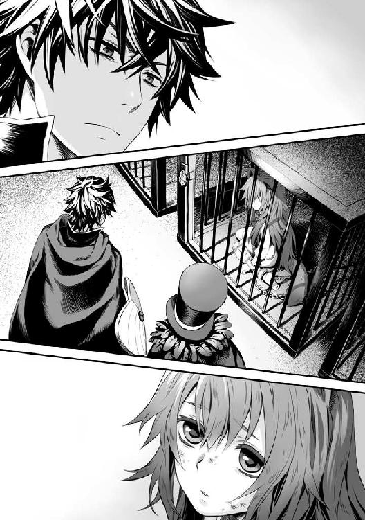
そうだ。コイツは女、あのクソ女と同じ性別なんだよな。怯えるその目を見て、なんとも支配欲を刺激される。あの女を奴隷にしたと思うのなら良いかも知れないなぁ......死んだら死んだで憂さも少しは晴れるだろうし。
「じゃあ真ん中の奴隷を買うとしよう」
「なんとも邪悪な笑みに私も大満足でございますよ」
奴隷商は檻の鍵を取り出してラクーン種の女の子を檻から出し、首輪に繋ぐ。
「ヒィ!?」
怯える女の子を見て、なんとも満たされた気持ちになっていくのを俺は感じていた。あの女がこんな顔をしている光景を想像すると何だか気持ちが良くなってくる。
それから鎖で繋がれた女の子を引きずって、元来た道を戻り、サーカステント内の少し開けた場所で奴隷商は人を呼び、インクの入った壷を持って来させる。そして小皿にインクを移したかと思うと俺に向けて差し出した。
「さあ勇者様、少量の血をお分けください。そうすれば奴隷登録は終了し、この奴隷は勇者様の物です」
「なるほどね」
俺は作業用のナイフを自分の指に軽く突き立てる。誰かに刃物を突きつけられると盾は反応するが自分の攻撃には意味が無いらしい。そして戦闘の意思では無い場合、盾は反応しない。
血が滲むのを待ち、小皿にあるインクに数滴落とす。奴隷商はインクを筆で吸い取り、女の子が羽織っていた布を部下に引き剥がさせて、胸に刻まれている奴隷の文様に塗りたくる。
「キャ、キャアアアアアアアアア......！」
奴隷の文様は光り輝き、俺のステータス魔法にアイコンが点灯する。
奴隷を獲得しました。
使役による条件設定を開示します。
ズラーっと色々な条件が載っている。
俺はざっと目を通し、寝込みに襲い掛かる、主の命令を拒否するなどの違反をした場合、激痛で苦しむように設定する。
ついでに同行者設定というアイコンが奴隷項目以外の所で目に入ったのでチェックを入れる。
奴隷Ａ、名前が分からないからこう書かれている。
どうやら任意で条件を変更できるようだから、後で細かく指示するとしよう。
「これでこの奴隷は勇者様の物です。では料金を」
「ああ」
俺は奴隷商に銀貨を三一枚渡す。
「一枚、多いですよ？」
「この手続きに対する手数料だ。搾り取るつもりだったんだろう？」
「......よくお分かりで」
先に払いましたという顔をすればあちらも文句は言い辛い。
これで尚、俺から毟り取るつもりなのなら......どうしたものか。
「まあ、良いでしょう。こちらも不良在庫の処分が出来ました故」
「ちなみに、あの手続きはどれくらいなんだ？」
「ふふ、込みでの料金ですよ」
「どうだかな」
奴隷商が笑うので俺は笑い返してやった。
「本当に食えないお方だ。ゾクゾクしてきましたよ」
「どうとでも言え」
「ではまたのご来店を楽しみにしています」
「ああ」
俺はよろよろと歩く奴隷に来るように命令してサーカステントを後にする。
暗い面持ちで奴隷は俺の後をついて来る。
「さて、お前の名前を聞いておこうか」
「......コホ......」
顔を逸らして返答を拒否する。
だが、その行動は愚かだ。俺の命令を拒否した場合、奴隷としての効果が発動するからな。
「ぐ、ぐう......」
奴隷は胸を押さえて苦しみだした。
「ほら、名前を言え」
「ラ、ラフタリア......コホ、コホ！」
「そうか、ラフタリアか、行くぞ」
名前を言ったので楽になったラフタリアは呼吸を整える。
そして俺はラフタリアの手を掴んで裏路地を進むのだった。
「......」
ラフタリアは、手を繋ぐ俺を怯えた様な表情で見上げながら歩く......。
「アンちゃん......」
武器屋に顔を出すと、親父がラフタリアを連れた俺を見て呆れた様な声を絞り出す。
そう、俺が欲しいのは戦う物......攻撃力なのだ。武器を持たせなければ話にならない。
「コイツが使えそうで銀貨六枚の範囲の武器を寄越せ」
「......はぁ」
武器屋の親父は深い溜息を吐いた。
「国が悪いのか、それともアンちゃんが汚れちまったのか......まあいいや、銀貨六枚だな」
「後は在庫処分の服とマント、まだ残ってるか？」
「......良いよ。オマケしてやる」
武器屋の親父が嘆かわしいと呟きながら、ナイフを数本持ってくる。
「銀貨六枚だとコレが範囲だな」
左から銅、青銅、鉄のナイフだ。
グリップの範囲でも値段が変わるようだ。
俺はラフタリアの手に何度もナイフを持ち比べさせ、一番持ちやすそうなナイフを選ぶ。
「これで良い」
ナイフを持たされて顔面蒼白のラフタリアは俺と親父に視線を送る。
「ホラ、オマケの服とマント」
親父はぶっきらぼうに俺にオマケの品を渡し、更衣室を案内する。
ナイフを没収した後、ラフタリアにオマケの品を持たせて行く様に指示する。よろよろと咳をしながらラフタリアは更衣室に入り、着替えた。
「......後で行水でもさせるか」
草原の近くに川が流れている。この国に通る川は上流から分岐した川で、最近では俺の生息地域はそこにシフトしている。魚を釣れば食料にも困らないので良い場所だ。
手掴みでも取れるくらい魚が居て、フィッシュシールドと言う解放効果、釣り技能１という盾も既に取得している。
おずおずと着替えを終えたラフタリアは俺の方へ無言で駈けてくる。命令無視は痛みを伴うのが分かっているのだろう。俺はラフタリアの視線まで腰を下ろして話しかける。
「さて、ラフタリア、これがお前の武器だ。そして俺はお前に魔物と戦う事を強要する。分かるな？」
「......」
ラフタリアは怯える目を向けながらコクリと頷く。
そうしないと苦しくなるからだ。
「じゃあ、ナイフを渡すから──」
俺はマントの下で食いついているオレンジバルーンをラフタリアの前に見せ付けて取り出す。
「これを刺して割れ」
「ヒィ!?」
俺が魔物を隠していた事にラフタリアは武器を取り落としそうになるほど驚いた声を上げる。
「え......い......いや」
「命令だ。従え」
「い、いや」
ブンブンと首を振るラフタリア。しかしラフタリアには命令を拒むと苦しむ魔法が掛けられている。
「ぐ......」
「ほら、刺さないと痛くなるのはお前だぞ」
「コホ......コホ！」
苦痛に顔を歪ませるラフタリアは震える手に力を込めて武器を握り締める。
「アンタ......」
その様子を武器屋の親父は絶句しながら見下ろしていた。
ラフタリアはしっかりと攻撃の意志を持って、俺に喰らいつくオレンジバルーンを後ろから突き刺した。
「弱い！ もっと力を入れろ！」
「......!? えい！」
突きが跳ね返されたラフタリアは驚きながら勢いを込めてバルーンにもう一度突きを加える。
大きな音を立ててバルーンは弾けた。
ＥＸＰ１
ラフタリアＥＸＰ１
同行者が敵を倒したのを理解させるテロップが俺の視界に浮かび上がる。
ここで一つ、俺は殺意が浮かんだ。
あのクソ女。俺と同行しているつもりも無ければシステム的なことをするつもりすらなかったという事か。
「よし、良くやった」
ラフタリアの頭を撫でてやる。するとラフタリアは不思議そうな表情をして俺に顔を向けた。
「じゃあ次はこれだ」
俺に一週間近く喰らいついている一番強いバルーン。レッドバルーンを掴み、先ほどと同じように見せ付ける。
一週間、飲まず食わずで噛み付いているレッドバルーンは少し弱ってきているようだ。これならＬｖ１のひ弱な少女の攻撃だって耐えられないだろう。
コクリと頷いたラフタリアは先ほどよりもしっかりした目でバルーンを後ろから突き刺す。
ＥＸＰ１
ラフタリアＥＸＰ６
と、アイコンが目に入った。
「よし、どうやら戦えるようだな、行くとしよう」
「......コホ」
武器を腰にしまうように指示を出し、ラフタリアは素直に従う。
「あーあれだ。言わせてくれ」
「なんだ？」
親父が俺を睨みつけながらほざく。
「アンタ、絶対、ろくな死に方しないぞ」
「お褒めに預かり光栄です」
嫌味には嫌味で返してやった。
店を出た俺はその足で草原の方へ向う為、露店街を進む。ラフタリアは町並みをキョロキョロと見ながら手を繋いで隣を歩く。その途中で食い物屋の屋台の匂いが鼻を刺激した。
所持銀貨、あと三枚......そういえば小腹が空いてきたな。
ぐう......ラフタリアの方からそんな音が聞こえてくる。
顔を向けると。
「あ！」
ブンブンと違うと主張してきた。何を我慢しているのだろうか。
今は、ラフタリアが敵を仕留めてくれないと俺の稼ぎにならない。刃の無いナイフは必要無い。腹が空いて力が出ないのでは困る。俺は手ごろな定食屋を探して店に入った。
「いらっしゃい......ませ！」
ボロボロの格好なので、店員は嫌な顔をしつつ、座る場所へ案内してくれる。
その途中、ラフタリアは別の席に座っている親子を眺めていた。視線の先は子供がおいしそうに食べているお子様ランチのようなメニューで、羨ましそうに指をくわえている。
アレが食べたいのか。席に座った俺達は、店員が去る前に注文する。
「えっと、俺はこの店で一番安いランチね。こいつには、あそこの席にいる子供が食べてるメニューで」
「え!?」
びっくりした表情で俺を見つめるラフタリア。何かそんなに驚くようなものでもあったのだろうか？
「了解しました。銅貨九枚です」
「ほい」
銀貨を渡し、お釣りを貰う。
ぼんやりとメニューが運ばれてくるのを待ちながら店内を見渡す。
......俺の方を見ながらヒソヒソと内緒話をする連中が多いな。
まったく、とんだ異世界だ。
「なん、で？」
「ん？」
ラフタリアの声が聞こえたので視線を下げる。するとラフタリアは不思議そうな顔で俺を見つめていた。奴隷にまともな食い物を与えた事に疑問を抱いているんだろうな。
「お前が食いたいって顔してたからだろ。別のを食いたかったか？」
ラフタリアはブンブンと頭を横に振る。
「なん、で、食べさせてくれるの？」
「だから言ってるだろ、お前が食べたいって顔しているからだ」
「でも......」
何をそんなに意固地になっているのか。
「とにかく飯を食って栄養をつけろ。そんなガリガリじゃこの先、死ぬぞ」
まあ、死んだらそれまでの稼ぎで新しい奴隷を買うだけだけどな。
「お待たせしました」
しばらくして注文したメニューが運ばれてきた。俺はラフタリアの前にお子様ランチ？ を置いて自分の飯（ベーコン定食？）に手を伸ばす。うん。味がしない。
みんなして俺を嵌めているのかと疑いたくなる程、味がしなくて不味い定食だ。
周りは美味そうに食べているが、頭がおかしいとしか思えない。
「......」
ラフタリアがお子様ランチ？ を凝視しながら固まっている。
「食べないのか？」
「......良いの？」
「はぁ......良いから食べろ」
俺の命令にラフタリアの顔が少し歪む。
「うん」
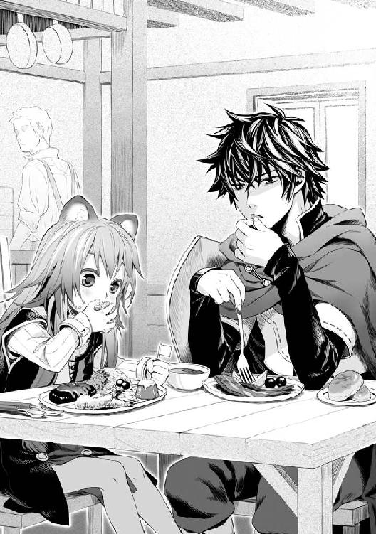
恐る恐ると言った様子でラフタリアはお子様ランチ（？）に素手でかぶりつく。
ま、奴隷だから育ちの悪いのはしょうがない。
何やらヒソヒソ話が大きくなっているような気がするけど、気にする必要も無い。
チキンライスっぽい主食の上にある旗をラフタリアは大事そうに握りながら、もぐもぐと一心不乱に食べる。
「美味いか？」
「はい！」
やはり俺だけ味がしないのか？ それともこいつもグルなのか？ 奴隷紋で嘘を見破るか......ってこの奴隷紋自体が嘘かもしれないんだから調べようがない。
俺はそんな奴隷との食事をしながら、これからの方針を頭に浮かべているのだった。
食事を終えた俺達は店の外に出て、草原に出る。
道中、ラフタリアは機嫌が良いようで鼻歌を歌っていた。が、草原に出るや、怯えた目をして震えだす。先程と同じく、魔物が怖いんだろう。
「怯えるな、絶対に魔物からは守ってやるから」
俺の言葉にやはりラフタリアは首を傾げる。
「ほら、俺は雑魚に噛まれている位じゃ痛くも痒くも無いんだ」
マントの下に隠していたバルーンを数匹見せるとラフタリアはビクっと驚く。
「痛くない、の？」
「全然」
「そう......」
「行くぞ」
「うん......コホ......」
咳が気になるが、まあ大丈夫だろう。
草原で薬草を摘みながら、森の方へ向う。
お、出てきた出てきた。レッドバルーンが三匹、森の茂みから飛んできた。俺はラフタリアが噛まれない様注意しながらレッドバルーンを食いつかせる。
「ほら、さっきやったようにナイフで刺すんだ」
「......うん！」
幾分かやる気を出したラフタリアは勢い良く、レッドバルーンを後ろから突き刺した。
バアン！ バアン！ バアン！
この時の戦闘でラフタリアのＬｖが２に上昇した。
レッドスモールシールドの条件が解放されました。
レッドスモールシールド
能力未解放......装備ボーナス、防御力４
即座に盾を変化させる。するとラフタリアは目を丸くして盾を見ていた。
「ご主人様は......何者なのですか？」
俺が盾の勇者だと知らないのか。まあ、亜人で奴隷だしな。
「勇者だよ。盾のな」
「勇者ってあの四聖の？」
「知っているのか？」
ラフタリアはコクリと頷く。
「そうだ、俺は召喚された勇者。他に三人居る中で......一番弱いけどな！」
俺は自分の手を爪が食い込む程握り、半ば八つ当たりの様な態度を取った。
あいつ等の顔が頭に浮かんできて殺意しか湧かない。
ラフタリアが怯えた目を見せるので、これ以上は話さなかった。
「とりあえず、今日はこの森で魔物を退治するのが仕事だ。俺が押さえるからお前は刺せ」
「うん......」
多少馴れてきたのか、ラフタリアは素直に頷いた。
そうして、森の中を探索しながら出会う敵出会う敵を俺が矢面に立ち、ラフタリアに倒させる戦闘スタイルで進んでいった。
途中、バルーン以外の敵と初めて遭遇。
ルーマッシュ。
白い、動くキノコだった。何か目つきが鋭くて、大きさは人の頭くらい。
試しに殴ってみたけど、レッドバルーンと同じ手ごたえ。
これもラフタリアに倒させた。
他に色違いのブルーマッシュ、グリーンマッシュなる敵が居た。
マッシュシールドの条件が解放されました。
ブルーマッシュシールドの条件が解放されました。
グリーンマッシュシールドの条件が解放されました。
マッシュシールド
能力未解放......装備ボーナス、植物鑑定１
ブルーマッシュシールド
能力未解放......装備ボーナス、簡易調合レシピ１
グリーンマッシュシールド
能力未解放......装備ボーナス、見習い調合
ステータスボーナスでは無く、どれも技能系のボーナスのようだ。
調合か......薬を卸す時に役立ちそうなスキルだな。
この日の内にラフタリアのＬｖが３、俺は５に上がった。
夕方、草原を歩きつつ、野宿する川辺に歩いていった。
「コホ......」
ラフタリアは文句を言わずに俺に付いて来る。
まあ、しばらくはまた金稼ぎに精を出さないとダメだろう。
川辺に到着した俺は、袋からタオルを取り出してラフタリアに渡し、薪を組み火を点ける。
「とりあえず行水してこい。凍えたら火で体を温めろよ」
「......うん」
ラフタリアは服を脱ぎ、川に入って行水を始めた。俺はその間に釣りを始めて、晩飯の準備をする。その間にもラフタリアにはちゃんと目を向けておく。何だかんだでこの辺りはバルーンが湧く、注意しておくに越したことは無い。
俺は今日の収穫物に目を向ける。
草原産の薬草、結構な量。草原では生えていなかった薬草、結構な量。
バルーン風船、それなり。各種マッシュ、それなり。
解放した盾、四種。
うん。明らかに効率が違う。奴隷を購入して正解だったな。
そうだ。調合とやらに挑戦してみるか。
簡易レシピを呼び出す。
其処には俺の持っている薬草で作れる範囲の組み合わせが載っていた。
機材は......川辺にある板みたいな岩と小石で擦り合わせればどうにかなるだろう。乳鉢で作れるレシピに挑戦しよう。
コツがあるのだろうけど、簡易レシピには載ってない。
薬草を売っている店で店主が調合していた組み合わせを選び、見よう見真似でゴリゴリとやってみる。
ヒール丸薬が出来ました！
ヒール丸薬 品質 悪い→やや悪い 傷の治療を早める丸薬、傷口に塗ることで効果を発揮する。
俺の目の前にそんなアイコンが浮かぶ。
よし、成功だ。
盾が反応しているけど、今はまだ吸わせない。
一応、知らない組み合わせにも挑戦する。時々失敗して真っ黒なゴミになるが、意外と面白いな。ネットゲームを思い出すが、同時にアイツ等の顔が浮かんでイライラしてきた。
パチパチと火が弾ける音が聞こえる。見ると行水を終えたラフタリアが焚き火で温まっていた。
「温まったか？」
「うん。コホ......」
どうも風邪っぽい。奴隷商も病持ちとか言っていた。そういえば......作った薬の中に風邪薬があったな。元を取るまでに死なれると困る。今の俺としては結構な出費だが、使っておくか。
常備薬 品質 やや良い 軽度の風邪になら効果がある薬。
「ほら、これを飲め」
軽度って所が気になるが、無いよりマシだ。
「......苦いから、嫌......ぐ......」
愚かにもワガママを言おうとしてラフタリアは胸に手を当てて苦しむ。
「ほら」
「は、はい」
震えながらラフタリアは俺が渡した薬を思いっきり飲み込んだ。
「はぁ......はぁ......」
「よしよし、良く飲んだな」
頭を撫でてやるとラフタリアは特に俺を拒まなかった。
あ、タヌキの耳はふかふかだ。尻尾の方に目を移すと何をするのか察したのか、頬を染め、触らせないとばかりに尻尾を抱き締めて拒絶された。
「ほら、晩御飯だ」
俺は魚を釣り上げ、雑に串で刺して、火で焼いてラフタリアに渡した。試食したけどやはり味はしないな。ぼそぼそとした味のしない豆腐のような食感に近いか？
魚の身って味がしないだけでこんなにも気持ち悪い物なんだな。まあ良い。こんな不味い物でもラフタリアは貪るように食っているし。
調合作業に戻る。
こういう、微妙な作業は昔から好きなんだ。日が完全に落ち、焚き火の明かりで調合を続ける。
ふむ......色々と作れるようで面白いな。
魚を食べ終えたラフタリアはうつらうつらと眠そうに火を見つめている。
「寝てもいいぞ」
俺の指示にラフタリアは首を何度も振る。
あれか？ 寝たくないと駄々を捏ねる子供みたいな......て、子供か。放っておいても勝手に寝るだろう。そういえば、常備薬が少しは効果があったのか？ 先ほどから咳が出ていない。
一頻り調合に挑戦し、あらかた出来る薬を調べた。
内、粗悪品になってしまった物は盾に吸わせて変化させる。
プチメディシンシールドの条件が解放されました。
プチポイズンシールドの条件が解放されました。
プチメディシンシールド
未解放......装備ボーナス、薬効果上昇
プチポイズンシールド
未解放......装備ボーナス、毒耐性（小）
どっちもリーフシールドとマッシュシールドから繋がる盾だ。薬効果上昇は良く分からない効果だな。俺自身が薬を使って効果があるのか、俺が作った薬の効果が上昇するのか。
まあ、良い。今日は収穫が多くて助かったのは間違いないのだから。
その時、眠っていたラフタリアが変な声を上げた。
「いや......助けて......」
見ると眠っているラフタリアがうなされている。
「いやぁあああああああああああああああああああああ！」
キーンと耳が遠くなるのを感じた。
やばい、声に釣られてバルーンが来るかもしれない。
急いでラフタリアの元へ行き、口を塞ぐ。
「ん─────────────────────────！」
それでも漏れる声が大きくて、奴隷商が問題ありと言っていた意味を悟る。
確かにこれは大変だ。
「落ち着け、落ち着くんだ」
俺は夜泣きするラフタリアを抱え上げて、あやす。
「いやぁ............お父さん。......お母さん」
親を呼んでいるのだろうか、ラフタリアはずっと涙を流しながら手を前に出して助けを求めている。
どういう生まれかは知らないが、親から引き離されたのがトラウマにでもなっているんだろう。
「大丈夫......大丈夫だから」
頭を撫で、どうにかあやし続ける。
「泣くな。強くなるんだ」
「うう......」
泣き続けるラフタリアを抱き締める。
「ガア！」
そこに声を聞きつけたバルーンが現れた。
「ふ......」
まったく、こんな時に。
俺はラフタリアを抱き抱えながら、バルーンに向って走るのだった。
「うおおおおおおおおおおおおおおお！」
チュン......チュン！
「朝か」
大変な夜だった。群で来たバルーンを割り終わった頃、ラフタリアの夜泣きは小さくなったのだけど。少しでも離れると、大声で泣くのだ。
するとまたバルーンが湧く。それでろくすっぽ眠ることも出来なかった。
「ん......」
「起きたか？」
「ひぃ!?」
俺に抱き抱えられていたのに驚いてラフタリアは大きく目を見開く。
「はぁ......疲れた」
城門が開くまでまだ少し時間がある。今なら仮眠くらい取れるだろう。
今日やる仕事は、昨日作った薬の買取額と、摘んだ薬草の代金の差を計る事だ。薬にして売るよりも薬草の代金の方が高いなら作る必要が無い。
「少し寝るから、朝飯は......魚の残りで良いか？」
コクリとラフタリアは頷く。
「じゃ、おやすみ。魔物が来たら起こせ」
目を開けているのも苦痛の俺は直ぐに眠りの世界に誘われるのだった。
ラフタリアが何に怯えているのかは分からない。聞くつもりも無い。大方、親に身売りにされたショックか、連れ去られたんだろうな。
後者でも返す義理は無い。こっちだって高い金を払って奴隷を購入したのだから。
恨まれたっていい。俺も生きなくてはならない。
元の世界に帰るための手段を探さなきゃいけないんだ。
日が大分上がった頃、俺の目が覚めるのをラフタリアは待っていた。
「城下町に行くの？ コホ」
「ああ」
また咳が出ている。俺は無言で常備薬を渡すと、ラフタリアは渋い顔をしながら薬を飲む。
それから薬屋に行って買取を申請する。
「ふむ......品質は悪くありませんね。勇者様は薬学に精通しているので？」
もはや馴染みの客になっている気もしながら、俺は作った薬を見てもらう。
「いや、昨日初めて作った。直接薬草を売るのとどっちが儲かる？」
「難しい塩梅ですな。小回りが利く薬草の方が使いやすいですが、薬も薬で助かる場合も多い」
ラフタリアを見て渋い顔をする薬屋だが、下手に足元を見たり嘘を付くと見抜かれると理解しているのか素直に話す。
「最近は予言の影響で薬の売れ行きが良いので、今のところですが薬の買取額の方が高いですよ」
「ふむ......」
失敗した時のリスクと買い取り額、道具を揃えるとなるとどれだけの金額が飛ぶか分からないな。
でも時代が時代だ。揃えておいて、損は無い。
「なあ、もう使わない道具は無いか？」
「......二週間、薬草を売りに来ている辺りで、言うと思っていましたよ」
薬屋は笑っているのか分からない顔でそう言った。今回は授業料という条件で薬草はタダ、薬は買取、中古の道具を譲ってくれた。
乳鉢のほかにも色々と道具を貰う。薬研、計量系、フラスコに蒸留器などだ。新品で買ったらそれなりの値になりそうな物まで含まれている。
「あくまで倉庫に眠っていた中古品ですから、いつ壊れるか分かりませんよ」
「初心者には良い道具だろ」
とにかく、これで調合にも挑戦できるようになった。
後はバルーン風船の処分だけだ。
買取商人にバルーン風船を買い取って貰う途中で横を通り過ぎる子供が目に入る。
割れたバルーンを縫い合わせて風船が売り出されているようだ。子供がバルーンをポンポンとボールのようにして遊んでいる。
それをラフタリアは羨ましそうな目で見つめていた。
「なあ、あれって」
「はい？」
買取商人に子供が持っているボールを指差して尋ねた。
「ええ、バルーン風船の利用先ですが」
「なるほど、買い取り額から差し引いて一個分作ってくれないか？」
「え、まあ......よろしいですが」
買取商人は売却した物を受け取り売買金額をこちらに寄越す。そしてバルーン風船で作られたボールを一個くれる。
「ほら」
受け取ったボールを俺はラフタリアに投げ渡した。
ラフタリアはボールと俺の顔を何度も交互に見て、目を丸くさせる。
「なんだ？ いらないのか？」
「う、ううん」
ラフタリアは首を何度も振って嬉しそうに笑った。
初めて笑ったな。
......まあ悪い気はしない。子供だから含みは無いだろうし。
「今日の分の仕事が終わったら、遊んでいて良いからな」
「うん！」
何か元気になって来たようだな。良い傾向だ。
ラフタリアが元気になって得をするのは俺だからな。
それから俺達は昨日の森まで歩いていき、採取と魔物退治を繰り返した。
俺自身の防御力の高さで行ける範囲まで拡張する。
......森を進んだ先には村があるらしいが、あのクソ女が勧めた道は腹が立つので却下した。
割りと幸先良く、色々な物が見つかり、余裕がありそうなので山の近くまで範囲を伸ばした。
お？ 見慣れない敵を発見。
卵みたいな生き物だ。生態系的にバルーンの親戚っぽいな。
「初めて戦う魔物だ。俺が先行して様子を見る。大丈夫そうだったら突くんだぞ」
「うん！」
良い返事だ。
俺は魔物に向って走り、魔物もこちらに気付いて、牙を向く。
ガン！
痛くも痒くも無い。そのまま羽交い絞めにしてラフタリアが刺しやすいよう構える。
「たあ！」
昨日よりも勢いのある突きが魔物を貫く。
エグッグ──これが先ほどの敵だった。
エグッグはパリンと砕け散り、中から黄身を飛び散らせる。
「ぶえ、気持ち悪！」
これは殻が売れるのか？ もったいないなぁ。匂いも腐ってるっぽいし、食べるのは無理かな。
殻は一応盾に吸わせる。
同様に数匹、エグッグは現れたので手馴れた感じでラフタリアが刺して倒していった。
エッグシールドの条件が解放されました。
エッグシールド
能力未解放......装備ボーナス、調理１
また技能系のスキルが出た。
今度は料理か。
そしてやっぱり色違いの魔物が出て、俺達は狩り続けた。
ブルーエッグシールドの条件が解放されました。
スカイエッグシールドの条件が解放されました。
ブルーエッグシールド
能力未解放......装備ボーナス、目利き１
スカイエッグシールド
能力未解放......装備ボーナス、初級料理レシピ
なんでこう、技能系ばかり出てくるのかね。
倒す敵によるのか？ まあ、その間にも見慣れぬ薬草とか色々と採取して行ってるけど。
日が暮れそうだ。山に入りきるにはちょっと遅いかもしれない。今はまだ、ラフタリアの装備に不安が残る。
で、本日の収穫。
俺 Ｌｖ８
ラフタリア Ｌｖ７
くそ。何か追いつかれ始めた。
倒しているのはラフタリアなのでしょうがないが。
どうやら経験値は倒した人物の方が多く入るみたいなので、当然ラフタリアの方が早くＬｖが上がるようだ。
「お腹空いた......」
ラフタリアがお腹を鳴らしながら困った顔で俺に言う。
「そうだな、帰ったら飯にするか」
探索を切り上げ、俺達は城下町に引き返した。
城下町に入ると、調合で使えそうも無いエグッグの殻類を買い取りして貰う。
昼間に売った分と合わせて銀貨九枚にもなった。
あの殻に何の使用用途があるのか些か疑問であるが、思いのほか高く買い取ってくれたのは幸いだ。薬草と薬も良い感じに売れたし、今日は何を食うかな。
と、思っているとラフタリアが屋台を見て涎を垂らしていた。甘やかすつもりはないが値段相応の働きはしている。まあいいだろう。
「今日はそれにするか」
「え？ 良いの？」
「食べたいんだろ？」
俺の問いにラフタリアはコクンと頷く。
素直になってきたな。
「ケホ......」
また咳が出てきている。
無言で常備薬を渡し、屋台で売っているマッシュポテトを固めて串に通したような食べ物を注文した。
「ほら、良く頑張ったな」
俺が串を渡すと薬を飲み終えたラフタリアは嬉しそうに受け取り、頬張る。
「ありがとう！」
「お、おう......」
......元気になって何よりだ。
もぐもぐと歩き食いしながら、俺は安宿を探して入る。
「今日はここに泊まるの？」
「ああ」
ラフタリアの夜泣きで徹夜は勘弁してほしいし、バルーンとの戦いは骨が折れる。
宿の中に入る。店主は俺を見るなり、露骨に顔を歪ませるが、即座に営業スマイルで対応する。
「ちょっと連れが夜泣きするかもしれないが泊めてくれないか？」
半ば脅しと言わんばかりにマントの中に隠したバルーンをチラつかせる。
「そ、それは──」
「頼めるよな？ 出来る限り静かにさせる」
「は、はい」
この世界に来て、脅迫は商売に必要な要素だと学んだ。国の奴等は俺を馬鹿にする対象にしているが、被害が出ても王様に報告しきれないのだ。
いや、報告していたとしても、泳がすしか出来ないとも言えるのだろう。
まったく、異世界サマサマだぜ。
金を払い、一部屋借りて俺達は荷物を下ろした。
ラフタリアがボールを持って目を輝かせている。
「日が落ちきる前に帰って来いよ。後、なるべく宿の近くで遊べ」
「はーい！」
まったく、歳相応の子供なんだな。
亜人は軽蔑の対象らしいが、冒険者扱いなら其処まで問題も起きないだろう。
下でボール遊びをしているラフタリアを窓から見つつ、調合の研究をする。
それから......二十分くらい経った頃か。子供の大きな声が聞こえて来た。
「亜人がなんで俺達の縄張りで遊んでんだ！」
なんだ？ 窓の外の様子を見る。すると、どう見てもクソガキ共がラフタリアに向って喧嘩腰で話しかけていた。まったく、何処の世の中にもあんなガキは居るもんだな。
「コイツ、良い物持ってるぜ、よこせよ」
「え、あ、その......」
亜人の立場は低いというのをラフタリアは知っているらしい。変に逆らう気配が無い。
はぁ......。俺は部屋の出て、階段を降りた。
「よこせって言ってるだろ」
「い、いや......」
弱々しく拒否するラフタリアだが、クソガキ共は暴力によって奪うつもりらしく、集団で囲んでいる。
「ちょっと待てクソガキ共」
「何だよ、おっさん」
ぐ、おっさんだと！ ......まあいい、これでも二十歳なんだが、この世界の成人年齢は知らない。おっさんかもしれんしな。
「他人の物を寄越せとはどういう了見だ？」
「はぁ？ そのボールはアンタのじゃないだろ？」
「俺のだ。俺がこの子に貸し与えている。それを奪うという事は俺から奪うという事だ」
「何言ってんだおっさん」
はぁ......。どうやら頭に血が上って理解できて無いみたいだな。
俺はガキであろうとも容赦はしない。人の物を奪おうとする輩は制裁を加えてやる。
「そうかそうか、じゃあ取っておきのボールをあげよう」
ラフタリアは俺が何をするのか気付いたのか、ハッと相手の子供に逃げるように声を絞り出す。
「逃げて！」
しかしガキ共は舐めた目で俺を見ていた。内心ほくそ笑みつつ腕に齧り付いているバルーンを取り出す。
「いでぇええええええええええええ！」
ガキにバルーンを噛み付かせて即座に懐に収める。
「さーて、今のボールを本当に、君達にあげようか？」
「いてぇええ！」
「冗談じゃねえよ。ばあか！」
「死ね！ あほぅ！」
「知るかクソガキ！」
逃げていくガキ共に俺は悪態を吐いて宿に戻る。
「あ、あの......」
ラフタリアが俺のマントを掴む。
「おい、そこにはバルーンが居るぞ」
ビクッと手を離して怯えるラフタリアだったが、おずおずと顔を上げて笑った。
「ありがとう」
何を言ってんだか。
「あ......」
くしゃくしゃとラフタリアの頭を撫でてやると顔を赤くして俯いた。
日も落ち、夜も更けた頃、またラフタリアのお腹が鳴ったので、宿に荷物を置いて、近くの飯屋で晩飯を取る事にした。
ちょっと前に与えた串は食前のおやつみたいなものだ。
ラフタリアは見知らぬ店なので、何が良いのか分からないらしい。まあ、財布の中はある程度潤っているし、これからしばらく野宿の予定だ。多めに食べさせてやろう。
「えっと、デリアーセットを二人前とナポラータを頼む」
店員に注文し、メニューが運ばれてきた。
「じゃあ食うぞ」
「うん」
ラフタリアはやっぱり手づかみでもぐもぐと食べだした。
十歳くらいと言うと育ち盛りだろう。俺の分までモノ欲しそうにしたので、追加注文する。
「明日から野宿になるから多めに食べて良いぞ」
「はぁい！」
食べるか頷くかどちらかにしろと言いたかったけど、美味しそうに食べるので放っておいた。
それから、改めて気づいたラフタリアの問題点について部屋に戻ってから処理をする。
「髪がボサボサだな、少し整えるぞ」
「......はい」
何か不安そうな顔をするラフタリアの頭に俺はポンと手を乗せる。
「大丈夫だ。変な髪型にはしない」
むしろ今の方が変だ。
ある程度手グシで解いてからナイフで無駄な毛を切る。長過ぎた髪を肩くらいで整えてから散髪を終えた。
「よし、これくらいで良いだろ」
前よりは幾分、見られる髪型になった。これで多少は身なりがよく見えるだろう。
ラフタリアはくるくる回りながら自身の変化に顔を綻ばせている。何が嬉しいのやら。
毛を掃除していると盾が反応する。
......気付いていないな。
俺は気付かれない様にラフタリアの髪を盾に吸わせた。
ブックを開いて確認。武器のツリーとＬｖが足りないと出ている。
「ん？」
ヤバイ、振り向いた。
「さて、そろそろ寝なさい」
「うん！」
昨日と違って妙に素直だな。
夜は叫ぶかもしれない、騒ぐまで調合でもしておこう。
栄養剤が出来ました。
栄養剤 品質 悪い→やや悪い 疲労回復効果のある薬。栄養を急速に補給する効能もある。
治療薬が出来ました。
治療薬 品質 やや悪い→普通 病を治療する効果のある薬。重度の病には効果が薄い。
ふむ......森と山の薬草で色々作れるな。確か薬屋だと結構な金額で取引されている品だったはず。ただ、材料の消耗は激しい。割りに合うか微妙なラインだ。
栄養剤が合計六本出来上がり、その他の薬もある程度出揃った。
ただ、品質が良いものを作るのはやはり難しく、本職には勝てそうに無い。
そもそも俺は盾の勇者であって薬剤師ではないが。
......盾に吸わせておくとしよう。
カロリーシールドの条件が解放されました。
エナジーシールドの条件が解放されました。
エネルギーシールドの条件が解放されました。
カロリーシールド
能力未解放......装備ボーナス、スタミナ上昇（小）
エナジーシールド
能力未解放......装備ボーナス、ＳＰ増加（小）
エネルギーシールド
能力未解放......装備ボーナス、スタミナ減退耐性（小）
一応、ステータス系のボーナスが揃っているか。
スタミナってなんだ？ 体力の事か？
調べる必要がありそうだな。
後は薬草類だけど......いい加減技能系の習得が増えすぎだよなぁ。
もっと戦闘寄りの技能が欲しい。
薬草類だけじゃ、まだ解放条件を満たしきれない。
「ん......」
背伸びをして、そろそろ寝ようかと考えているとパチッとラフタリアと目が合う。あれは寝てるな。夜泣きの前兆。
「キャ──」
咄嗟に口を押さえて叫びを消し、ポンポンと抱き抱えながら宥める。
ふう、今日はどうにか押さえられた。このまま放そうとすると叫びだすんだ。
しょうがないか。一緒に寝てやろう。
......なんか冷たい。
なんとなく顔に日の光を感じ、目を開く。すると、一緒に寝ていたはずのラフタリアが部屋の隅で震えている。
「どうしたんだ？」
「ごめんなさいごめんなさい、ごめんなさいごめんなさい！」
必死に謝罪の言葉を繰り返すラフタリアに俺は眉を寄せ、何故冷たいのか下を見て察した。
そう......ラフタリアはおねしょをしてしまっていたのだ。
はぁ......。俺が怒ると思っているんだな。
十歳の子供がおねしょをするかは知らないが、そんな怯えた目をされては怒る訳にもいかないだろう。
俺はラフタリアの元へ行く。そして手を伸ばすとビクっとラフタリアは頭を庇って丸まった。
「まったく......」
その手で震えるラフタリアの肩を撫で。
「おねしょしたのならしょうがないだろ。ほら、急いで洗うから脱げ」
予備の服も必要だな。
「え......」
不思議そうな顔でラフタリアは俺を見つめる。
「怒らないの？」
「反省している奴に鞭を打ってどうする。お前が反省しているなら怒らない」
シーツが汚れてるな。店主にどれくらい払えば良いか......とりあえず布として貰って置こう。
それから俺は店主に事情を説明、シーツの弁償をし、武器屋に予備の服を買いに走った。
井戸の水は冷たかった。洗濯板で染みを揉んで消し、荷物袋に摘める。草原を歩いていく最中に枝に括り付けて乾かせばいいだろう。
「さてと」
申し訳なさそうに歩くラフタリアになんとなくイライラしてくる。
「気にするなっての！」
「......はい」
......素直な子なんだろう。でも、やる気が無いとこちらも困るのだ。
「あ......」
またラフタリアのお腹が鳴っている。
あ、恥ずかしそうに顔を赤くした。
「そろそろ朝飯にするか」
「うん......」
俺の服の裾を掴みながらラフタリアは付いてくる。
「......コホ」
「じゃあ罰としてこの薬を飲め」
治療薬を入れた器をラフタリアに渡す。
病持ちだから、定期的に薬が必要なようだし、ちょうど良いだろう。
匂いを嗅いで、すごく渋い顔をするラフタリアだったが、罰と聞いて飲もうと努力する。
「うわぁ......苦い......」
「我慢しろ」
飲みきったラフタリアは今にも吐きそうなくらい青い顔をしていた。
ちなみに調合した薬類は良い値で売れた。品質が悪いが、品薄気味だったらしい。
草原を抜け、拠点を山と森に移す。
その頃になると戦い方にも大分慣れてきたのかラフタリアの動きも良くなって来た。
採取も順調。魔物から得る経験値と副産物で荷物が大分かさばって来る。
と、その時だった。
今まで、なんとなく無生物系っぽい魔物ばかり相手にしていた俺達だったが、とうとう動物に似た魔物に出会った。
一頭身の......茶色いウサギ？
ウサピル。
変な名前だ。
「ぴょ!?」
ウサピルは俺達を確認するや否や、跳躍して大きな前歯で俺達に襲い掛かってきた。
「危ない！」
弱そうだと判断したのかラフタリアをターゲットにしている。
だから俺がラフタリアを庇って前に出る。
ガイン！ ガイン！
相変わらず痛くも痒くもない。どうやらまだ俺の防御力の方が上のようだ。
「よし！ 突き刺せ」
「あ......ああ......」
「どうした？」
「い、生き物、血、血がでそう......」
うろたえるラフタリアの言葉に何を伝えたいのか察する。
「我慢しろ、これからこんな敵と戦っていくんだ」
「で、でも」
ウサピルは何度も俺に噛み付きを繰り返している。
「我慢しろ、そうじゃないと俺はお前の面倒を見切れない」
......そうだ。短い期間だが一緒に居て多少の愛着もあるとはいえ、戦えないのでは困る。
悪いがあの奴隷商に買い取ってもらって別の、戦える奴隷を買うまでだ。
「イ、イヤ！」
目が据わったラフタリアが子供にしては恐ろしい形相で、ウサピルの背中にナイフを何度も突き刺した。
引き抜いた時に、血が吹き出る。
「あ......」
ガクリとウサピルが事切れ、地に転がる。その様子をラフタリアは目で追いながら、ナイフに付いた血を見て震えている。顔色が蒼白になり、見ているだけでいたたまれない気持ちになった。
けど、同情する訳には行かない。これから俺はこんな事を何百何千回とさせ続けなければいけないのだから。
「ぴょ！」
茂みからもう一匹、ウサピルが出てきて、ラフタリアに噛み付こうと跳躍する。
「あ──」
すかさずラフタリアとウサピルの間に入り攻撃を防ぐ。
「......悪いな。本当だったら俺がやらなきゃいけない事なんだろう。だが、俺は守ることしか出来ない。だからお前にやらせるしか無いんだ」
ウサピルを腕に噛み付かせて俺はラフタリアに言った。
「俺は強くならなきゃいけない。そのために手伝って欲しい」
そうしなければここから先、俺に生きる道は無い。期限は迫っている。後一週間と数日で初めての災厄の波に遭遇するのだ。
今のままではとても生き残れる自信が無い。
「......でも......」
「一週間と少しした後、世界を脅かす波が訪れる」
「え!?」
「それまでの間に少しでも強くなりたいのが当面の目的だ」
ラフタリアがワナワナと震えながら俺の話に聞き入った。
「あの......災厄と戦うの？」
「ああ、それが俺の役目なんだそうだ。やりたくてやっている訳じゃないけど......そういう意味ではお前と俺は似ているかもしれない。強制させている俺が言えた義理ではないが」
「............」
「だから、できるなら俺にお前を手放させるような真似はさせないで欲しい」
また育てなおすロスも然ることながら、あの檻にもう一度入れるのはあまり気分が良くない。
だが、今の俺には金が無い。売らねば、新しい奴隷は買えない。
「......分かった。ご主人、様、私......戦い、ます」
蒼白だったラフタリアの顔色に徐々に血色が戻り、ゆっくりと頷きながら血塗れのナイフでウサピルの急所を一突きした。
なんとなく、先ほどの怯えた態度を一転させ、決意に満ちた目をしている。
コロンと転がるウサピルをラフタリアは見て、静かに目を瞑る。そして前に出て解体しようとナイフを持ち替える。
「それは俺にやらせろ。お前にばかりさせるわけには行かない」
「はい」
俺は解体用のナイフを取り出し、ウサピルを解体した。
これは現実。ゲームではない。できる事なら目を逸らしたいがしょうがないんだ。
生き物を捌くのは初めてだったが、これがこの世界で生きるための手段。手にウサピルの血が付いた時、少なからずラフタリアの気持ちが理解できた。
ちなみに武器は戦闘には使えないらしいが、こういう事には使用できる。でなければ日常生活にも支障が出るだろうから、当然と言えば当然か。
二匹を一通り解体した所で盾に吸わせる。
ウサレザーシールドの条件が解放されました。
ウサミートシールドの条件が解放されました。
ウサレザーシールド
能力未解放......装備ボーナス、敏捷３
ウサミートシールド
能力未解放......装備ボーナス、解体技能１
後者の盾に変化させ、俺は立ち上がる。
「ご主人、様。どうか、私を、見捨てないで」
ラフタリアが高揚した表情で俺に懇願する。
余程あの場所に戻りたくないと思っているのだろう。
夜は叫び、病気持ちでガリガリ。下手をすれば死んでしまうかもしれない。それは後味が悪い。
あのクソ女と重ねて死ぬ瞬間を嘲笑ってやりたいとも思うが、実益に合わない。
「役割をこなせば見捨てたりはしない」
まだ、死んで貰っては困るのだ。
......そう、クソ女と同じ性別の生き物には......クソ女め！
頭の中がぐるぐるしてくる。この考えは止めよう。心が病む。今は、少しでも奴隷と一緒に強くなる方法を模索していく時だ。
ＥＸＰ７
ラフタリアＥＸＰ７
「私は、ご主人、様の、力になりたい、です」
それからラフタリアは見違えるほどやる気を出して現れる魔物に切りかかった。一度なんて俺が足止めする前に、攻めようとしたので制止したくらいだ。
良い傾向だが、何か......心を逆なでする。
俺のやっている事は決して褒められる事ではない。全部私利私欲の為なんだ。
だが......それでも、しない訳にはいかない。
その日の晩は森の休憩に良さそうな広い場所で薪に火を点け、キャンプをする事にした。
採取した薬草で食べられそうなのとウサピルの肉を鍋で煮た料理を作った。
残った肉を焚き火の傍で焼く。
明日の夕方には一度町に戻る予定だが、魔物の肉が売れる確証は無い。食べられるかどうか不安だったが目利きスキルにも食べられると出ている。
料理が終わった肉を一切れ試食して、問題が無いのを確認する。
ゴムみたいな食感、味は分からない。これは不味いのか？
ただ、焼いただけだし、素っ気無い料理になってしまっている。
料理スキルが作動して、品質は普通からやや良いになっているので不味くは無いだろう。
「ほら、食えよ」
出来上がった鍋と焼肉をラフタリアに食べさせる。
「お、美味しい！」
先ほどからグウグウとお腹を鳴らしてできるのを待っていたラフタリアは、目を輝かせて美味しそうに食べだした。
今日の戦いで俺のＬｖは10、ラフタリアもＬｖ10に上がった。
ついに追いつかれてしまった。
俺は焚き火の明かりを元にして調合作業に入る。
今は少しでもお金を貯めて装備を充実させる方向で行かねばならない。知っている薬の中でもっとも高く売れる物を作る。
薬研で薬草を擦り合わせ、混ざった薬草を絞り、エキスをビーカーに移す。
治療薬が出来ました。
栄養剤が出来ました。
もう、作れるレシピはあらかた試した。
簡易調合レシピ１では限界が来ている。この二つだって、直感で作った奇跡の代物だ。
盾の力を使った付け焼刃のなんちゃって調合では限界も来る。
品質だって基本的には、やや悪いだ。
「......ケホ」
薬の効果が切れたか。無言で治療薬を渡すと、ラフタリアは渋い顔をしながら飲み干す。
とにかく、新たな金策をするにも強くなっていかねばならない。
「交代で焚き火の番をするぞ、お前が先に寝て、そうだな......しばらくしたら起こす」
「分かりました」
妙に素直だな。初めて会ったときとは雲泥の差を感じる。
「おやすみなさい」
「ああ、おやすみ。そうだ。どうせ明日には売るんだ。毛皮を毛布にして寝ると良い」
料理中に燻してダニやノミの類を追い払った毛皮をラフタリアに渡す。少々小ぶりだが、重ねておけば多少は暖かいだろう。
「はい」
ラフタリアは毛皮の匂いを嗅いでちょっと渋い顔をした。
「煙いか」
「はい。とても煙いです」
「だろうな」
「でも、暖かそうです」
ピタリと俺の背に寄りかかるようにしてラフタリアは目を閉じる。
薬の調合作業を続け、ラフタリアが悲鳴を上げるであろう時間まで焚き火に薪をくべながら待つ。
......ふう。こんな生活をどれだけ続けるのか分からないな。
最低、後一週間とちょっとか。
死ぬかもしれないなんて思いたくも無いけど、備えなければいけないんだ。
......そろそろだな。三日目ともなると騒ぎ出す時間が分かってくる。
「ん......」
徐にラフタリアは起き上がって目を擦る。
「あれ......？」
「起きたのか？」
悲鳴を上げなかったな。
あ、そうか。俺を背にして暖かいように寝ていたからな。人肌に触れて寝ていれば大丈夫なのか。
「......お腹空きました」
あんなに食べたのにもうお腹空いたのか。
「はいはい」
明日の朝用に残しておいた焼肉の残りをラフタリアに渡す。するとラフタリアはおいしそうに肉を頬張った。
「じゃあそろそろ俺は寝るから何かあったら起こせ」
「うん！」
もぐもぐと肉を食べながらラフタリアは頷いた。
まったく、元気になるのは良い傾向だけど、食いしん坊になりそうな様子だ。
仮眠を交代で行い、朝になった。
そしてその日の昼頃、問題は起こった。
遭遇したウサピルを狩っていると。
「あ......」
ポキンとラフタリアに渡していたナイフが折れてしまった。
「受け取れ」
しょうがないので作業用のナイフを渡し、俺に噛み付いていた最後のウサピルにトドメを刺させる。
「ごめんなさい」
「どんな物にも寿命はある。壊れてしまったならしょうがない」
安物のナイフだったし、碌に研磨もしていなかったからな。
「とりあえず、これくらいにして城下町に戻るぞ」
「はい」
結構な大荷物になった袋をラフタリアと分けて持っていく。
ちなみに俺のＬｖは11に上がり、ラフタリアも11になった。
その道中、何度か魔物に遭遇したが、渡したナイフはどうにか持ちこたえてくれた。
さて、色々と薬とか物を売っていくと合計銀貨七十枚にまで貯まった。
「どうしたものかな」
「ナイフ？」
屋台でラフタリアに昼飯を食べさせながら呟く。
生活費は野宿すればどうにかなる。食費もウサピルとかを解体して肉にすれば問題はなさそうだ。しばらくの間は篭れるだろう。
何処へ行けばいいのか検討も付かないが、いい加減買える限界の装備で経験値稼ぎもしたい。
「まあ、武器屋に行くか」
「うん」
ぐう......
後ろから腹の音が響く。
「お腹すいた」
「さっき食べたばかりだろう!?」
成長期か!? 一日に何回食べる気だ！
「はぁ......」
エンゲル係数が跳ね上がりそうだ。早く狩りに行かないと、このままでは食費に追われる。
「という訳だ親父、銀貨六五枚の範囲で良い武器と防具を寄越せ、作業用ナイフも込みで」
何やら親父が額に手を当てて唸っている。
「まあ......安物を渡した俺も俺だが、ちゃんと手入れしろよ」
「すまんな。ブラッドクリーンコーティングとやらが掛かっているつもりで使わせていた」
そう、バルーン、マッシュ、エッググはどれも無機物に見える生き物。エッググは割れば体液がこぼれるが拭えば問題ない。けれどウサピルクラスとなると血が付着する。しかも手入れをしていなかったのだからなおさら劣化も早かっただろう。
「しかし、三日しか経ってないが血色が良くなったなぁ。少しふっくらしてきたんじゃないか？」
「そうなの？」
ラフタリアが営業スマイルで頷く。何を言っているんだか。
「お？ 表情も良いな」
「うん！」
よし、そのまま値切れ。
「親父、出来る限り武器を重点にして売ってくれ」
「アンタは？」
「俺はいらん」
「いらないの？」
ラフタリアが俺を見上げて尋ねる。
「お前には必要に見えたのか？」
今まで俺は魔物の攻撃で傷一つ付いていない。だが、あのクソ勇者達も言っていたじゃないか、盾職は序盤は楽だが後半は厳しくなると。
だから俺はダメージを受ける場所に着くまで装備は必要無い。
「うーん」
納得しかねる表情でラフタリアは唸る。その手にはボールを大事そうに抱えていた。
「まあ、これも何かの縁だ。少しだけオマケしてやる」
「高いなら値切るまでだ」
「アンタには原価ギリギリにしてるよ。下手に吊り上げたらバルーンを押し付けられるんだろ？」
やっぱり噂になっているか、まあ意図的に流させた訳だけど。
「理不尽には理不尽で返しているだけだ」
「......俺は困らんが、対策を取っても別の手段に訴えそうだよな。アンタは」
「良く分かってるじゃないか」
「見てれば分かる。勇者の中で一番商魂たくましいからな、アンタ」
「褒め言葉として受け取っておく」
「さてと......」
親父はラフタリアを見ながら自分の顎を揉む。
「そろそろ嬢ちゃんにはナイフじゃなくて剣に挑戦させてみるか」
「大丈夫なのか？」
「やる気があるようだしな。短めの剣だから入門に良いだろう」
親父はガチャガチャと武器屋の隅にあるコーナーを弄る。
「そうか」
「剣を使うの？」
「らしいな」
「ついでに使い方をレクチャーしてやる」
それから店の奥のほうから皮でなめされた胸当てを持ってきた。
「鉄のショートソードと皮の胸当てだ。ちょっと古いが我慢してくれよ。サイズも合わせてやる」
親父はラフタリアに剣を持たせ、皮の胸当てを布の服の上から着させる。
同時にラフタリアのお腹から大きな音が鳴った。
「またか！」
「おい、この子亜人だろ？ 子供で、Ｌｖ上げたら当たり前じゃないか」
なんだ？ 常識なのか？ 良く分からないがこの世界はどんな基準で動いているのだろう。
「そうなのか......しょうがない。レクチャーしてもらっている間に買って来るから大人しくしていろよ」
「はーい！」
その様子を見て何やら武器屋の親父がガハハと笑いやがる。
「行って来い、それまでには基本を教えといてやる」
武器屋を出て、市場の方へ急いで行く。
まったく、Ｌｖを上げる代償が空腹とは亜人とは変な種族だ。
ステータスも順調に伸びているようだし、少しずつ強くなっている自覚はある。
だからって、食費が馬鹿にならない。
それから屋台で飯を買って戻ると、親父がラフタリアに剣の振り方や使い方をレクチャーしている最中だった。
「ホラよ」
「ありがとう！」
もぐもぐと食べるラフタリアに、振る動きや回避を親父は熱心に教える。
なんか様になってきてる気がしなくも無い。
「アンタはどうなんだ？」
「回避は見て覚えておく」
「まあ、アンタは耐えるタイプみたいだしな。下手にバランスを崩すと危ないか」
と、親父の武器講座が終わり、会計を済ます。すると親父は俺に白い石の塊を渡した。
「何だこれ」
「砥石だ。今回の武器もコーティングが掛かっていない。定期的にメンテナンスしないとあっという間に壊れるぞ」
「ふうん......」
徐に掴むと盾が反応した。だから吸わせる。
「お、おい!?」
砥石の盾の条件が解放されました。
お？ シールドって付かない始めての装備だ。
まあ盾だけど。
鉱石系から派生する物が多いな......あ、本来の派生ではなく、辛うじて近いスカイエッグシールドとウサミートシールドからの複合で繋がっている。
料理には包丁が欠かせないからか？
防御力はエッグシールドに毛が生えた程度だな。ウサピルの死体を解体せずに吸わせたウサピルシールドの方が高い。
砥石の盾
能力未解放......装備ボーナス、鉱石鑑定１
専用効果 自動研磨（八時間）消費大
専用効果？
ヘルプを確認する。
『専用効果』
専用効果とはその武器である時のみ発揮する効果です。
この効果は解放による能力付与のように覚えることの出来ないものなので、必要な場合はその武器に変化させましょう。
あれか？ ゲームとかで○○系に効果大みたいなタイプだろうか。
例えばドラゴン系に絶大な効果が期待できるとかそう言うモノ。こういった武器にしか無い効果を専用効果と呼ぶとかそんな感じ。
急いで盾を変化させる。
「おう!? なんだ、それは」
砥石の盾、形状はスモールシールドよりもやや大きい。白い大きな石の盾だ。
ただ、盾の上に何個か溝がある。細い溝だったり太い溝だったり、紙が通りそうな溝だったりと色々だ。
「おいアンタ！ 聞けよ」
ふむ......自動研磨（八時間）消費大とは何なのだろう。
名称通りの効果なら多少期待は持てるが......。
「おい！」
「あ？ なんだ親父」
「一体なんだその盾は！」
「前にも見ただろう。伝説の盾だ」
「聞いてねえし見てねえよ」
「見たじゃないか、スモールシールドの時」
「はぁ!? どうして砥石になってるんだ？」
「砥石を吸わせたからだろ？」
「......」
武器屋の親父が、ダメだ、会話が成立していないという顔をしている。
「伝説の武器には不思議な力があるとは聞いたが、これがそれか」
「他の勇者から聞かなかったのか？」
「最近は見ねえよ。それに目の前で実践したのはアンちゃんが初めてだ」
強大な敵の到来が残り一週間少しと迫っている現状、本来であれば情報は少しでも共有するべきだろうに。結局奴等は仲間同士にすら教えていない自分本位の秘密主義者という事か。
少なくとも俺ならそんな奴は信用しない。
......まあ態々見せる必要も無いのも事実だが。無駄の無い奴等だこと。
「で、何を悩んでいるんだ？」
「ああ、自動研磨（八時間）消費大という効果があるらしくな。字面から勝手に研磨してくれそうなんだが」
何を消費するのか分からん。
「ふうむ......」
武器屋の親父が錆びた剣をカウンターから出して俺の盾の溝に差し込んだ。
「処分品の武器をオマケしてやる。それで試せば良いだろ」
「ああ、感謝する」
視界の隅のアイコンに『研磨中』と出てる。
微妙に重いな。あと、何か肩が重く感じる。
ふとアイコンを見ると俺のステータスにあるＳＰという今まで変動した事の無い項目が徐々に減っていく。
大方、スキルとかその辺りに使う値だろうと考えていたが、こういったものでも減るんだな。
「さて、そろそろ行くか」
「行くの？」
「ああ」
ある程度様になったカッコのラフタリアの頭を撫でて俺は武器屋を後にする。
今は、Ｌｖを上げるのと、成長期で飢えているラフタリアの飯の調達のために旅に出るとしよう。
「あ、そうだ親父」
「......まだ用があるのか？」
いい加減、ウンザリしているという口調で親父は俺を睨む。
「城下町の草原を越え、森を抜けた村の先にあるダンジョンと同等の魔物がいる場所を知らないか」
安物の地図を広げ、あのクソ女が勧めたダンジョンのある方角を指差して尋ねる。
一応、参考程度には良いだろう。信じるかは別だ。
「森とは違う、街道の先にある村の方も似た様な魔物が居るぜ」
「そうか、じゃあそっちに行ってみるか」
今は期日までにどれだけ盾を成長させられるか、それと金を稼げるかに掛かっている。
俺達は武器屋の親父から聞いた通り、村に向った。
村の名前はリユート村。拠点にするには良さそうな村であり、宿は一つしかないが宿泊費は銀貨一枚。買取商人も二日に一度は滞在するという好立地。
薬屋は無いが村人が薬を欲しているので城下町の薬屋よりも安めに売る。
その代わり品質が悪いと念を押す。
ちなみに俺の悪名は響き渡っており、村に来た当初、戯けた事をするのでバルーンの刑に処してやった。
で、旅の行商に村の周辺で倒した魔物の素材を売った時の事。
「ふむ......こんな所ですね」
「そうか」
銀貨数枚を受け取り、俺は唸る。
良い値で売れてはいるけれど、決定的な物に欠ける。
「もっと、手っ取り早く稼げる手段は無いか......」
「何か物入りなので？」
「まあな」
俺が盾の勇者だって知らないのか？ いや、知っていて俺を騙そうとしているのかも知れないな、この行商は。
「では、このリユート村近隣にある炭鉱で採れる鉱石を採ってくるというのが良いでしょうね」
「そうなのか？」
「ええ、上手く採掘できれば、多少金銭を稼げると思いますよ」
「......なんでみんなやらないんだ？」
こういう儲け話って皆やっているものだと思うが。
「ええ、波の到来前には若干活気があったのですけどね......危険な魔物が生息してからは......」
「なるほど」
「冒険者や騎士団、召喚された勇者様は何をしてくださっているのか......まあ、廃坑寸前の炭鉱なんてこんな物ですかね」
ふむ......これは良い話を聞いた。炭鉱か。上手く鉱石を獲得できれば金銭になる。
「一応、そこで採れる鉱石には珍しい物もありますからね。もしも手に入ったら良い値で売れますよ」
「そうか、情報提供感謝する」
本当かどうかは怪しいけど、廃坑という名の洞窟に行くのも一つの手だ。
「......今日はどこに行くの？」
ラフタリアが怯えつつ聞いてくる。
「今日は近くの廃坑に行く」
「うん......」
「危険な魔物がいるらしい、何かあったら逃げるからちゃんと付いてこいよ」
「はい！」
地図を広げ、その廃坑がある場所を確認する。
人の手が入らない山の近く、雑草が生えだした道の先に廃坑があった。
入口には放置されたツルハシが数本、落ちている。ボロボロだけど使えなくはないだろう。
その隣に放置された休憩所を見つけた。
扉には鍵が掛かっている。誰も使っていないのなら入っても問題ないだろう。
「ラフタリア、鍵を壊すぞ」
「え？ ......うん」
ラフタリアが石を持って扉の錠前を叩く。元々錆びてボロボロだったからか数回叩くだけで壊れた。
中に入るとロープを発見。他にも雑貨が転がっている。
とはいえ、捨て置かれたみたいで目ぼしいものは無い。炭鉱の地図があったのが救いだな。
ついでに発見したものを盾に吸わせた。
ツルハシの盾の条件が解放されました。
ロープシールドの条件が解放されました。
ツルハシの盾
能力未解放......装備ボーナス、採掘技能１
ロープシールド
能力未解放......装備ボーナス、スキル『エアストシールド』
専用効果 ロープ
エアストシールド？ なんだろう？
というかスキルってどうやって使うんだ？
一応、ロープシールドに変えてみる。
ロープを丸くさせた盾だ。防御力は冗談じゃないほど低い。
実戦で使うのは厳しいな。
専用効果、ロープはなんだ？ 試しに使ってみようと思う。
こう言うのって鉤縄みたいな感じで何かに引っかけるのかな？
そう思って、小屋の梁にロープが飛んでいく様子をイメージしたら盾のロープが伸びて結びついた。
おお！ 便利だ。
エアストシールドに関しては......一応ヘルプで探してみる。
あった。
『スキル』
発動の際そのスキル名を叫ぶことによってクイックアクションが可能です。他、モーションで発動するスキルも存在します。
ＲＰＧとかじゃ基本的にある魔法とか、技とかと同じだな。ＭＭＯだとスキルで統一されているものもある。それと同じだ。
よし、とりあえず唱えてみる。
「エアストシールド！」
唱えると同時に視界に何処へ出すかを指示するようにと表示され、出せる範囲がサークル範囲で地面に写った。
とりあえずは目の前に出るように意識する。するとエアストシールドはイメージ通りの場所に出現した。
形状は......やや大きめな盾っぽい。不思議な力で作られた盾だ。
持てないのか？
触れてみた。だけど、俺が出したところから全く動く気配がない。単純に盾を呼び出すスキルということか。初めてのスキルがこれとは......何処までも攻撃力が期待できないようだ。
「どうしたの？」
ラフタリアが首を傾げて聞いてくる。
「なんでもない。少し便利な力を手に入れただけさ」
「そう......行かないの？」
「行くさ」
ラフタリアはやる気を最近出しているけど、こう言う慣れ始めが一番怖いんだ。注意していないとな。
ツルハシの盾は、採掘をしようとしている俺たちに調度いい技能だ。
さて、と。松明を片手に廃坑に足を踏み入れる。
「危険な魔物が生息しているらしいから気をつけろよ」
「うん」
俺が先頭で廃坑の中を進む。
途中までは木で補強された洞窟みたいだったが、しばらくすると鍾乳洞みたいになった。流れの緩やかな小さな滝や泉もあるし、薄らと上からの明かりがある。穴が開いていて、その光が洞窟内の埃を幻想的に瞬いていた。
さて......何処に行けば目当ての鉱石が採掘できるかな。
地図を広げ、確認する。
迷路......じゃないな。滝の上を迂回した辺りで×印が付いている。そこを目標にしよう。
「ご主人様......」
「ん？」
ラフタリアがクイクイと俺の服の裾を引っ張る。
「あの......これ」
ラフタリアが下を指差した。
見ると、何か......犬のような物の足跡があるのを発見する。
ああ、化け物が住み着いているとか言っていたけど本当だったのか。廃坑だからな、野犬が住み着いたんだろ。足跡から見て、俺の知る犬サイズだ。大きさは中型犬くらい。
「とりあえずは行くしかないだろ」
危険を避けていても結果は良くならない。
魔物を倒す延長線上だ。このサイズなら問題ないだろ。
「よし行くぞ」
「う、うん」
「安心しろ、何時も通りに倒せば良いさ」
「頑張る」
良い傾向だな。
と、進んでいった訳なのだが......。
「グゥルルルル......」
滝の上にまで登ったところで遭遇した。
なんか、頭が二つもある黒い犬。
で、さっきの足跡......子供の時だったのか？
俺の身長くらいまで大きくなってる！
やるしかないか。
「ワオォオオオオオオオオオン！！」
犬が遠吠えをして俺たちに向かって突撃してくる。
今までの敵からダメージを受けた事は無いが、耐えられるか？
いや、仮に受けたとしても即死は無いだろう。
盾を構えて犬の突進に耐える。
ぐ......重い。
「ガアアアア！」
爪でガリガリと盾を引っかき、二つある頭で俺に噛みつこうとしてくる。
させるかっての！
噛みつかれないように上半身を仰け反らせて避ける。
耐えきれなくはない。という所だな。
「よし！ 押さえつけた！」
後は隙を見てラフタリアが......という所で気が付いた。
「あ......ああああ......」
ガクガクと震えたラフタリアが虚空を見つめていることに。
ヤバイ！ この症状は夜の叫びだ。
「イヤアアアアアアアアアアアアアアアアアアアアアアアア！」
キーンと耳が遠くなるほどの絶叫。
「キャン！」
双頭の犬が叫びをあげて、一度俺から距離を取る。
その後、ターゲットを叫ぶラフタリアに切り替えて走ってきた。
「させるか！」
咄嗟にラフタリアを突き飛ばして守る。のだが、ラフタリアが滝の方へ落ちかける。
「ひ!? た、助け──」
落ちても、死にはしないだろう。だが、今にも落ちそうになっている。
「ダメ、ダメ！ お父さん！ お母さん！」
ぐ......ここは一旦、引き下がるべきか。
少々命がけだけどやるしかない。
俺は犬の猛攻から引いて、ラフタリアを抱えて滝に身を任せる。
ゲームだと滝から落ちるとかはよくあるけど、現実でやるとめまぐるしく景色が変わって、状況が掴めない。
一瞬だけ滝から放り出されたが、重力に従って落下。滝つぼ兼、泉に落ちた。
後は......まあ、流れが緩やかだから泳いで岸に上がる。
「ゲホ......ゲホ......」
「まったく、いきなりパニックになるんじゃない！」
「お父さん？」
「違う。何の事を言っているんだ？」
話をしつつ上を見る。双頭の黒い犬が崖から岸に上がった俺達を睨みつけて踵を返す。
絶対にこっちへ来るな。
「大丈夫か？ 意識はしっかりしているのか？」
「あ......私......」
「一体どうしたんだ？」
「その......」
「ちゃんと話せ」
「う......はい」
ラフタリアはポツリポツリと話しだした。
「私はこの国の辺境、海のある、街から少し離れた農村部にある亜人の村の出身なんです......この国ですから裕福とは言えないけど」
両親は優しく、村のみんなとも仲良く平和に過ごしていた。
しかしある日、骸骨兵が大量に、災厄の波から溢れ出てきたという。
骸骨兵は数こそ多かったが、最初は近隣に居た冒険者達で対処できていた。
が、獣、大きな甲虫などが大量に溢れ返り、防衛線は決壊。
その果てに黒い三つの頭を持つ犬のような化け物が現れ、人々はまるで無抵抗な草花のように蹂躙されていった。
ラフタリアの村もその被害を抑えきれず、必死に、化け物達から逃げ出した。
しかし、化け物たちは逃亡を許さず、まるで遊びのように見知った人々を殺して回った。ラフタリアの両親も同様で、一緒に逃げていたが、海の上の崖まで化け物たちは追いかけてきた。
逃げ切れないと悟ったラフタリアの両親は顔を合わせ、ラフタリアに微笑む。
そんな状況だというのに、優しく、怯えるラフタリアの頭を撫でた。
両親が命を掛けて助けようとしているのが幼い彼女でも理解できたらしい。
『いやぁ！ お父さん！ お母さん！』
ドン！
二人は、ラフタリアに生きて欲しいと願いを込めて、崖から海へ突き飛ばす。
ラフタリアは突き飛ばされ、海へ落ちる最中、化け物たちが両親に向って襲い掛かるのを目撃してしまった。
これを語るラフタリアの顔色が青い。話すのも辛い記憶なんだと思う。
「それから私は海に落ちて、奇跡的に近くの浜に流れ着きました」
気が付いた時、ラフタリアは体を起こして、両親を探すためにあの崖へ足を運んだらしい。
既に化け物は国が出した冒険者と騎士団によって辛うじて討伐されていたらしい。死骸の転がる荒野を歩き、やっとの事で両親と別れた崖にたどり着いた。
そこにはおびただしい血と......肉の切れ端が点々と転がっていた。
両親の死を理解した時、ぷつりとラフタリアの中で何かが弾けたそうだ。
「イヤアアアアアアアアアアアアアアアアアアアアアアアアアアアアアアアア！」
その後、ラフタリアは両親の死を心の傷にしつつも健気に頑張ろうとした。
今のラフタリアを見ると想像も付かないが、元々は頑張り屋だったらしい。
それも奴隷生活で少しずつ磨耗していったのだろう。
俺と出会う道中は壮絶なものであった。生き残った村人と一緒に村の復興を目指しもしたが、運悪く奴隷狩りに遭い、拷問も経験したそうだ。
やがて、あのサーカステントのような場所に収監されたという。
「あの黒い犬が、目の前にいる！ 逃げなきゃ！」
またパニックに陥りかけている。
トラウマの原因か。
「落ちつけ！」
「で、でも──」
「あれはお前の両親を殺した奴じゃない。頭だって二つだろ！ それに......お前は俺を誰だと思っているんだ？」
「え......」
「俺は盾の勇者だ。今までだって、俺はずっと、お前を守っていただろ？ だけど、俺はお前を守ることは出来ても、敵を倒せないんだ」
そっとラフタリアの頬に手を添える。
「お前の両親は帰ってこない。だけど、お前と同じ境遇になってしまいそうな子を助ける事は出来る」
詭弁だな。俺は生き残りたいから強くなりたいだけだ。だけどラフタリアにとって波というのは災厄だ。
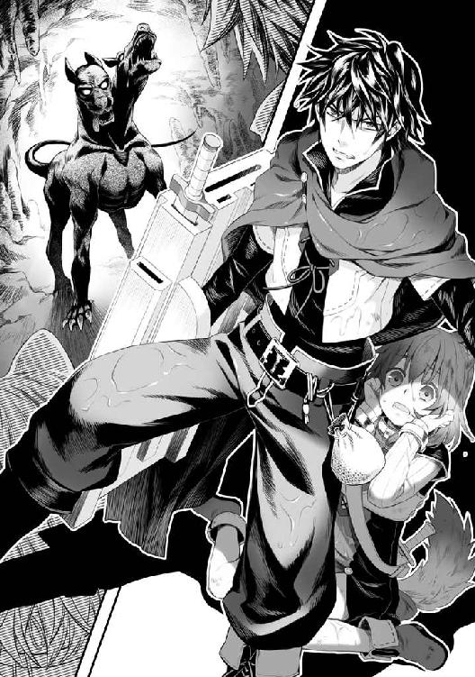
自分と同じような境遇の子を増やしたいと思っているのならそれまでだが。
「俺に出来るのはお前が最大限戦える環境を整えるだけ、それでもイヤなら......前にも言ったよな」
「う、うん！」
「ガア！」
犬がどうやら追いついてきたようだ。
「とにかく、戦えないのなら下がってここから出ろ」
「ご主人様は？」
「俺はコイツの注意をひいてから逃げる！」
「そんな！」
「しょうがないだろ、俺は守る事は出来ても戦えないんだ」
「行っちゃイヤ！」
「じゃあどうするんだ？ このまま死ねと？」
「......イヤ！」
ラフタリアが剣を強く持って、犬の横に回り込んで突き刺した。
「キャン！」
犬が悲鳴を上げる。
「死んじゃダメ！」
「......死なないさ、俺が死ぬときは攻め手から、お前を守り切れなかった時だろうな」
死なないために、俺は強くなりたいんだ。こんな所で死んでたまるか！
犬がラフタリアに向かって噛みつこうとしてくる。
咄嗟にロープシールドに変えて唱える。
「エアストシールド！」
その直後に戦闘用の盾に変化。思い切り犬の体に組みついた。
「ガァア!?」
ラフタリアに噛みつけず、俺に組みつかれて犬は吠える。
もう一つの頭が俺の肩に食らいつく。
痛みと共に鮮血が飛び散る。
「ご主人様!?」
「落ちつけ！ まだ大丈夫だ！」
防御力とやらは相当な効果らしいな。あんな鋭い牙で噛まれているのに致命傷にならないとは。
これも盾の力だろう。流血こそしているが痛みは耐えられない程じゃない。
「はい！」
ラフタリアは渾身の力を込めて、隙を作った犬の心臓のある位置を剣で突く。
「でりゃあああああああああああああああ！」
ずぶりと音を立てて犬の体に剣は突き刺さった。
「ガアアアアアアアアアアアア......」
想像以上に抵抗する犬の心臓をラフタリアは何度も突き刺す。
やがて双頭の黒い犬は動かなくなり、倒れた。
ＥＸＰ３４０
ラフタリアＥＸＰ４３０
強かった分経験値も多く、俺とラフタリアのＬｖがそれぞれ上昇した。
「はぁ......はぁ......」
「よく、やったぞ」
血まみれになったラフタリアと俺。
俺はラフタリアの頭を撫でる。
「ご主人様......絶対に、死なないで、私に......居場所を」
つたない言葉でラフタリアは俺に状況の維持を懇願する。
奴隷生活は大変だったのだろう。普通に考えて戻りたくはないはずだ。
環境に不満はない。だから評価してほしいか......。
俺としても簡単に手放すつもりはない。そして要求する事は戦うことだけだ。
「ご主人様......まだ、お名前を聞いてませんよね？」
「ああ、そうだったな。岩谷尚文、岩谷が姓で名前は尚文だ」
「ナオフミ......様......改めてよろしくお願いします」
ぺこりと頭を下げたラフタリアがそう俺に言った。
名前......か。
勇者様と呼ばれるよりは遥かにマシだな。
さて、この魔物を盾に吸わせるとしよう。
解体して......。
犬を解体するって、あんまり気持が良いものじゃないな。
結果。
双頭黒犬の盾の条件が解放されました！
双頭黒犬の盾
能力未解放......装備ボーナス、『アラートシールド』
専用効果 ドッグバイト
二つの頭の犬を模した盾だ。皮製で、頭の部分が生きているような迫力がある。
能力は程々に高いな。悪くはないだろう。
アラートシールドってなんだ？
専用効果のドッグバイトというのも気になる。
後で調べておこう。
傷の手当てにヒール丸薬を肩に塗る。ひんやりした感覚と共に徐々に傷が治っていくのを感じた。
宿に戻ったら、回復魔法とかが使える冒険者に金を払って治してもらうか。
そういえば、この世界に来て初めての痛みだ。やはり、痛みはあるんだよな。
戦えなくはないけど......やはり痛いのはいやだな。
解体しても他の部位の盾は出ないのか......もしくは材料とかＬｖが足りないんだな。
「さて、魔物は倒したし、鉱石を掘りに行くか」
「はい！」
お？ さっきよりも元気だな。
採掘技能１を持つツルハシの盾に変え、ツルハシを持って、廃坑の×印の場所を掘る。
徐に俺はツルハシを振り上げる。すると壁に十字に輝くポイントが浮かび上がる。なんだ？ ここに突き立てれば良いのか？
「てい！」
勢いをつけて、俺はツルハシを振るった。
ガツンという音と共に壁にヒビが入る。その亀裂がメキメキと広がって崩れた。
「おわ！」
凄く脆いなぁこの壁。
崩落の危険性を視野に入れながら、鉱石を探す。
......あんまり芳しくないなぁ。
と、何回か掘り進めていくと光る鉱石を発掘できた。
「ライトメタル？」
ライトメタルという鉱石が出てきた。
これが高く売れる鉱石なのか......？ 純度が高そうだ。
産出量は良くないけど、その日は夕方になるまで掘り進め、十個ほど見つけた。
あんまり効率は良くなさそうだ。
一個、盾に吸わせる。
必要個数が足りないっぽい。もう一個。
ライトメタルシールドの条件が解放されました！
ライトメタルシールド
能力未解放......装備ボーナス、防御力１
専用効果 魔法防御向上
防御力が今までで一番高い。
こりゃあ、強い魔物と戦う時はこれが一番だな。
「どうですか？」
「ま、こんな物だろ」
「わかりました。じゃあ帰りましょう。ナオフミ様」
ラフタリアが俺の手を握って前を歩こうとする。
「絶対に、生き残りましょうね」
「ああ」
当たり前だ。俺は生きて元の世界に帰るんだ。こんな糞みたいな世界で死ぬもんか。
リユート村に戻り、ライトメタルを売る。
やはり高値で売れた。これで当分の活動資金や装備を整えられるな。
ピキュピキュシールドの条件が解放されました。
ウッドシールドの条件が解放されました。
バタフライシールドの条件が解放されました。
パイプシールドの条件が解放されました。
etc......
ピキュピキュシールド
解放済み......装備ボーナス、初級武器修理技能１
ウッドシールド
解放済み......装備ボーナス、伐採技能１
バタフライシールド
解放済み......装備ボーナス、麻痺耐性（小）
パイプシールド
解放済み......装備ボーナス、スキル『シールドプリズン』
etc......
あれから一週間と一日。
このあたりの魔物や薬草、その他鉱石から材木、色々と武器に吸わせた結果、盾は様々なスキルや技能を覚えた。
ステータス付与も色々、数えるのが面倒になるほどだ。
「待てー！」
不利を悟って逃げる、全身が針のヤマアラシのような魔物......名前はヤマアラ、をラフタリアと一緒に追いかける。
ラフタリアも順調にＬｖを上げ、俺はＬｖ20、ラフタリアはＬｖ25になった。
ラフタリアの成長が意外と早い。
......そして俺は未だに布の服で戦えてしまっている。
いい加減、ここまでほぼノーダメージで戦えると本当に弱いのか首を傾げたくなる。
とはいえ、痛い思いはした。
防御力を過信し、今追っているヤマアラと弱い盾で戦っていたら、ものの見事に痛みが走ったのだ。不意打ちを受けてちょっと怪我をした。
アラートシールドを使っていたにも関わらずこの始末。
ちなみにアラートシールドとは俺を中心に半径二〇メートル以内にまで魔物が侵入すると鳴り響く警報のスキルだった。近くに魔物がいる事を教えてくれるのだ。
微妙なスキルだよな。しかも居るのは分かっても、何処に居るのかは分からないという始末。
「あーちょっと痛いな」
流血する傷口にヒール丸薬を塗りつけながら走る。
針が刺さったら痛いよな。普通。
この世界に来てから生憎と殆ど盾が保護してくれていたので忘れていた。
「だから言ったじゃないですか。ナオフミ様もそろそろ装備を買うべきだと」
「いや......弱い盾にしてたのが原因だ」
どうも俺の盾は盾の形状をしてはいるが全身を覆う装備のようで、構えている必要はあんまり無い。一応、盾の部分が一番硬いようなのだが、今までダメージを受けていなかったのだ。
でだ。砥石の盾の効果なのだが、やはり予想通り自動で研磨してくれるという便利な盾だった。
研磨時間は八時間。それより前に引き抜くと効果なし。難点は使用中、ＳＰを常時使用して回復しないという所だ。
あ、他に覚えたスキルを復習してみるか。
「エアストシールド！」
射程五メートルくらいの範囲で盾を生み出す効果があるスキル。
精々足止め用と割り切る感じ。効果時間が過ぎると消滅する盾だ。
掛け声があると尚よし。
ヤマアラは俺の出した盾に驚いてよろめく。しかし、即座に体勢を立て直して逃亡を再開。
くー......五メートルなら追いつけると思ったのに、逃げ足の速い奴だ。
しょうがない。
「シールドプリズン！」
射程六メートルくらいの範囲で盾で四方を囲む檻を作り出す。
今回はヤマアラにターゲットを付けて発動させた。
対象を守るスキルらしいが、中に入った者を拘束する効果もある。
うん、どっちも防御系で攻めには使えない。
「キー！」
逃げ場所の無くなったヤマアラはシールドプリズンの中で暴れまわる。
どちらも効果時間は一五秒。
その間にラフタリアはプリズンの至近距離まで近付き、消えると同時に中に居たヤマアラに剣を突き刺した。
「キイ!?」
「やりました！」
ヤマアラを掴んでラフタリアは戻ってくる。
「よし！」
ＥＸＰ48
ラフタリアＥＸＰ48
中々の収穫だ。
獲物は倒して武器に吸わせるだけでも変化するが、細かく分けた方が得だ。今まで知らなかったのだが、ここ一週間で発見した。バルーンやマッシュ、エッググは本体が素材だったからな。気付くわけも無い。
早速ヤマアラを解体して針と肉と皮、骨に分ける。どれも素材になるので馬鹿に出来ない。
盾にも幾らか吸わせていく。
骨系は複数の魔物の骨が必要で、皮系はステータスアップの装備効果がある。無論、ツリーとＬｖを満たせていればの話だが。
肉は料理系。という風に系統がはっきり見えてきた。
針がちょっと楽しみだ。ヤマアラシールド自体は入手済みだ。
アニマルニードルシールドの条件が解放されました。
動物の針の盾か。針盾......解放効果に興味が沸くな。
アニマルニードルシールド
未解放......装備ボーナス、攻撃力１
専用効果 針の盾（小）
よっしゃー！ 攻撃力アップだぁあああああああああああ！
うん。分かってる。たった１しか上がらないって事くらい。
専用効果、針の盾（小）がどういった物なのかは分からないけど、どうにか攻撃的な盾のツリーを見つけることが出来た。
これを取っ掛かりに、このツリーに繋がりそうなアイテムを重点的に探せば俺も攻撃ができるようになる。
防御力は、まあ鉱石系の盾よりも少し低いけど、大丈夫だろう。
「どうです？」
「ああ、攻撃力が上がる盾みたいだ」
「やりましたね。所で防御力は？」
ラフタリアはどうも俺が怪我をするのに不満げな顔をする。
「程々かな」
「そうですか......あの、剣の研磨をお願いしたいのですが......」
「分かった。そろそろ狩りを中断して村に戻るか」
「はい！」
盾を砥石の盾に変化させて、ラフタリアの剣を差し込んだ。
研磨中......。
さて、俺達のＬｖはバンバン上がり、手広く金稼ぎに一週間近く費やしたお陰で所持金はなんと銀貨二百三十枚にまでなった。ライトメタルのおかげだな。
薬が程々に売れるし、盾が付与してくれる技能系スキルによって伐採や採掘など手広く商売をしているお陰だ。
問題は浅く広くと、俺のオンラインゲームプレイと同じ傾向になってしまっている所だろうか。
まあ、手段を選ばずに金稼ぎに終始していたらこうなるよな。
強くなるためには無駄な行動だがな。生きる為にはしょうがない。
「さて、そろそろ城下町に戻ってラフタリアの装備を一新するか」
「......ナオフミ様？」
ん？ なんかラフタリアが背筋が凍りつくような笑顔で俺に微笑みかけている。
「私の装備を買っていただけるのは非常にありがたいのですが、その前にご自身の格好を少々お考えください」
「なんか変か？」
「盾以外、村人と殆ど変わらないですよ」
「んー......必要無いからな......着替えがある程度で大丈夫だろ？」
ガシッとラフタリアが俺の肩を掴んで満面の笑みで脅してくる。
「それで先ほどお怪我をなさったのではありませんか」
「解放目的の弱い盾、だったしなぁ......まだ大丈夫だろ。それよりお前の武器を新調すればもっと良い場所へ──」
「ナオフミ様？ 戯れは程々にしませんと死んでしまいます」
「死!?」
予備の剣の柄を握ってラフタリアが脅してくる。奴隷の制限で俺を傷付けることはできないはずなんだが......。
「......いい加減、ご自身の装備を見直す時です。期限が近づいているのでしょう？」
「......ああ」
そういえば、そうだった。考えてみれば後数日で災厄の波というのが訪れる可能性がある。それまでの間に強くならねばならなかったのだ。
となると確かに、村人と大して差が無いこの格好では不安にもなる。
目的と手段が摩り替わっていた。
「はぁ......」
もう少し、攻撃力を上げていきたかったのだが。
「今は私よりもナオフミ様の装備を探しましょう」
「そうだな、とりあえず装備を買って、残った金でお前の武器を買えば良いか」
「はい」
馴れてきたと言えば聞こえが良いけど、図々しくなってきたなぁ......。
いい加減、立場の違いを分からせてやりたいけど、設定した禁則事項に違反しない強かさを最近身につけている。あえて言うなら、面倒な奴隷になってきた。だが、俺の難点を指摘できる奴がいるのは良い事でもある。これからの事を考えれば悪い事ばっかりじゃない。
「お、盾のアンちゃんじゃないか、一週間ぶりだな」
城下町で行くところなんて商店街辺りしかない俺達。
武器屋の親父は何故かラフタリアの方を見てポカンと口を開ける。
「しばらく見ないうちに見違えたなぁ......別嬪さんに育ったじゃないか」
「はぁ？」
何を言っているのだろう。訳の分からない事を親父はほざいている。
「恰幅も良くなって......前来た時の痩せこけた姿とは大違いだ」
「太ったみたいな言い方しないでくださいよ」
何やらモジモジとラフタリアは手を捏ねて答えている。
その態度は不愉快だ！ あのクソ女を連想させる。
「ガハハ、可愛く育ってるじゃないか」
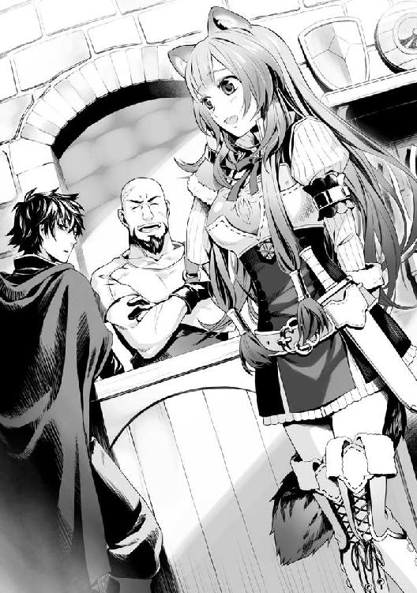
「育つ？ まあＬｖは上がったな」
約一週間前は、Ｌｖ10だったが今は25だ。それだけ身体的特徴に現れていると言えばそうなのだろうさ。
「ふうむ......アンタは朴念仁になってきたな」
「何を訳のわからん事を」
そもそも見た目十歳の女の子が可愛いと思うのは誰だって同じだろうに。まあここ最近、肉ばかり食わせていたから少し太ってきたのかもしれないが。
腹が減ったと良く騒ぐので、出会う魔物の肉を料理して食べさせていた。栄養バランスが崩れて脚気になるかもしれないと危惧し、断腸の思いで薬草を和えた物にしたりと工夫もした。
最近は咳もしなくなった。治療薬を飲ませていたのが効いたのだろう。
「ここ一週間、何していた？ 戦いだけかい？」
「宿の人にテーブルマナーを教えてもらいました。ナオフミ様のように上品に食事がしたくて」
「順調のようじゃねえか」
何やら武器屋の親父の機嫌が良い。これなら良い装備を値切れるかもしれん。
もっとおだてろ、ラフタリア。
「で、今日は何の用だ？」
「ああ、装備を買おうとな」
ラフタリアを指差しながら言う。するとラフタリアが何か不気味な笑顔で俺の肩を強く掴む。
「今回はナオフミ様の防具を買おうと思いまして」
「分かってるよ。何をそんなムキになっているんだ？」
「ご自身の胸に手を当ててお考えください」
「ん～......まあ、波に備えてだけど？」
「アンタの本音が何で、嬢ちゃんが何を伝えたいかは俺にはハッキリ分かったがなぁ......」
一体何を言っているんだコイツ等？ 前々から俺の装備を買うと決めていたじゃないか。
「さて、じゃあアンタの防具で良いんだな。予算はどれくらいだ？」
「銀貨百八十枚の範囲でお願いします」
ラフタリアが勝手に値段をほざいた。
なんかかなりイラついてきたぞ。それでは今の武器より良い物は買えないだろ！
「そうだなぁ......その辺りでバランスの良い防具となるとくさりかたびらだな」
「くさりかたびら......ハッ！」
ほぼ無意識で腹の底からどす黒い感情が噴出する。何が悲しくて、元々俺の物だった装備を買いなおさなければいけないんだ。
「まあ......盾のアンちゃんがそこまで嫌ならしょうがないな」
事情を薄っすらと理解している親父は鼻を掻きながら納得し、視線を別の防具に向ける。
「となると、ちと厳しいかもしれないが、鉄の鎧が妥当な範囲か？」
そう言って指差した防具に目を向ける。
鉄を板金したフルプレート......あれだ。城とかの置物で飾られている鎧がそこにあった。
知っているぞ、確かフルプレートメイルと呼ばれる種類の防具で着ると碌に動けなくなるとか、一人で起き上がれないとか、沼地で沈んで死者が出たとか俺の世界では言われている。
「体力さえあればどうにかなるだろう。難点はエアウェイク加工されていない所だな」
「エアウェイク加工？」
「着用者の魔力を吸って重量を軽くさせる加工だ。効果は優秀だぞ」
「なるほどな」
つまりこの世界ではエアウェイク加工していない全身防具など、動けない的のような物か。
いや、体力さえあればどうにかなるとも言っていた。
だが、幾ら俺でもそんなに体力は無い。
「重そうな部分を外せば安く、軽くなりそうだなぁ......」
「アンちゃん。やっぱりその辺りを考えていたか」
「当たり前だろ」
「となると鉄の胸当てを買ったほうが安いだろうよ。守れる範囲が狭いがな」
「ふむ......防御力が必要ではあるのだが、敏捷さが下がっては話にならないからなぁ......」
俺が壁になるのは良いが、守れないのでは大きな問題が起こる。
動きにくい装備は出来る限り断りたい。
エアウェイク加工だったか、それを行うにはどれだけの金が必要になるのやら。
「後は......素材を持って来ればオーダーメイドをしてやっても良いが......」
「良いな、そういうのは好きだぞ」
「アンちゃんは好きそうな顔しているからなぁ......そうだなぁ」
武器屋の親父は材料名と完成予想図の書かれた羊皮紙を広げる。
「読めない」
この世界の文字は俺には読めない。全て盾が翻訳してくれているから意思疎通が出来ている。
武器屋の親父は困ったなぁ、というような顔をして説明する。
「そこの工房で安物の銅と鉄を購入、後はウサピルとヤマアラの皮、そしてピキュピキュの羽を持って来い」
「皮と羽はありますよ」
ラフタリアがニコニコしながら、荷物袋に入れていた寝巻き用の皮と羽を取り出す。それなりに暖かいから使っていた布団＆毛布だったのだが、まあ......いいだろう。
「ちょっと質が悪くなっているが、使えるくらいの程度ではあるな」
「これで何が出来るんだ？」
「蛮族の鎧だ。性能はくさりかたびらとトントンだが、防御範囲も広くて寒さに強い」
「ほう......」
蛮族の鎧......なんか嫌なフレーズだ。
「追加オプションに骨をプラスすれば魔法効果も付くんだが、これは後からでも出来るから材料が集まったらまた来い」
「助かる。じゃあ鉄と銅を買って来るとするか」
「行きましょう！ すぐに行きましょう」
ラフタリアが何やら元気良く俺の手を引っ張って、買出しに行こうとしてくる。
「どうしたんだよ」
「これでナオフミ様も一端の冒険者の格好になるのですよ。急がなくてどうするのです」
「ま、まあ......そうなんだが」
村人とほぼ変わらないといわれてしまったからなぁ。ちょっと野蛮な装備になるけど、無いよりマシか。そう決断して俺達は金属工房の方に顔を出し、鉄と銅を購入した。
武器屋の親父から話が行っていたらしく、思いのほか安く売ってくれた。
なんでもラフタリアが話通り可愛い子だからオマケしてくれたとか何とか。ラフタリアを見ながらニヤニヤする金属工房のおっさん共に、ラフタリア本人も愛想良く手を振っている。
この世界ではどんだけロリータコンプレックスが居るのかと説教したくなるな。
「あっさりと材料が集まったな」
「アンちゃんが頑張ったお陰だろ」
「まあ、それよりも親父の知り合いにロリコンが多いことについて二、三個指摘したいのだが」
「ロリコン？ アンタ何を言っているんだ？」
「ロリコンの意味が伝わっていないのか？ 盾には翻訳機能があるはずだが」
「いや、少女趣味の知り合いは居ないと思ったが......」
「ラフタリアが可愛いからって安く売ってくれたぞ」
「アンちゃん......もしかして本当に分からないのか？」
「何が？」
「親父さん。その話は良いですから」
何やらラフタリアが首をブンブン振っている。
親父は何か察したのかヤレヤレと言った感じで肩をすくめて視線を俺に戻した。
「明日までには完成させておく、それまで待っていてくれ」
「早いな、最低でも二日以上は掛かると思っていた」
「ま、知らない野郎ならそれくらい掛けるが、なんたってアンちゃんだからな」
「一応、礼は言っておく」
「ははは、ケツが痒くなるな」
感謝した俺が馬鹿を見たような気がしてくるな。
「で、オーダーメイドの金額はどんなもんだ？」
「銅と鉄の購入代込みでー......銀貨百三十枚で手を打ってやる。更に拡張オプション込みだ」
「骨だったか？ それを持って来れば良いんだな」
「ああ、その代金込みで百三十枚。これ以上は安く出来ねえよ」
「分かった。それで良いだろう」
俺は銀貨百三十枚取り出して親父に渡した。
「毎度」
「所で親父、銀貨九十枚で買える範囲の武器も欲しいのだが」
「嬢ちゃんの武器だろ」
「ああ」
一応、一週間前に購入した剣と研磨が終了し普通の剣になった元錆びた剣を持っているが、これは下取りに出すか。
「ラフタリア」
「はい」
ラフタリアは腰から剣を抜いてカウンターに置いた。
「下取り込みで頼む、後、貰った剣も一緒だ」
「ふむ......今回はちゃんと手入れをしていたみたいだな」
「俺の盾がな」
研磨の盾に寝る前に差し込んでおけば翌朝には大体手入れは終わる。
切れ味もそこまで落ちる事は無かった。
「便利な盾だなぁ......俺も欲しいぜ」
「変わりに武器が装備できねえよ」
攻撃力が低すぎて俺はタダの壁でしかない。
それでも良いのら喜んで譲ってやりたい。譲れるのならだけど。
「そいつは困った部分だな」
ガハハと笑う親父にイラっとしつつ、下取りを待つ。
「あの錆びた剣が見違えたもんだ。さすが伝説の盾、驚きの性能だ」
感心した様子で、元錆びた剣を親父は評価していた。
「これならそうだな......魔法鉄の剣くらいなら売ってやっても良い」
確か、魔法鉄は鉄の剣の上の武器だったはずだ。
「ブラッドクリーンコーティングは付与されているんだよな」
「ああ、オマケしてやるよ。アンちゃんが頑張っているのは俺には分かってるからな」
気の良い親父だ。考えてみれば無一文になってからもこの親父は俺に色々と恵んでくれた。
「ありがとう......」
俺は親父に心から感謝の言葉を述べる。
「アンタ。初めて会った時と同じ目をしたな、それで良い。良いものを見せてもらったよ」
何やら親父は満足したようにラフタリアに魔法鉄の剣を手渡した。
「良い武器があればそれだけ強くはなれる。けれどそれに見合う能力が無ければ武器が可哀想だ。でも、アンタ達なら満足に使いこなせるだろうよ。嬢ちゃん、頑張りな」
「はい！」
ラフタリアは瞳を輝かせて貰った剣を腰にある鞘に収めた。
「それじゃあ、明日、今くらいの時間に来てくれ」
「ああ」
「ありがとうございました！」
「いいってことよ」
こうして俺達は武器屋を出るのだった。
武器屋から出た後、昼を過ぎたので飯でも食うかと考える。
何を食べても味がしないのだが、腹は減る。
残りの所持金は銀貨十枚だ。ここ一週間とちょっとの稼ぎが一瞬で消えてしまった。
まあ良い。それだけの性能を期待できるのなら、未来の投資としては十分だろう。幸い、金稼ぎの方法は山ほどある。
「そうだ。前に来たときの店に飯でも食いに行くか」
「良いのですか？」
「またラフタリアが食べたがったのを食べさせてやるぞ」
「やめてください！ もう、私はそんな子供じゃありません！」
先ほどまでご機嫌だったラフタリアがプイっと怒って頬を膨らませている。
一週間で子供が大人ぶって何を張り合っているのだろうか。
背伸びしたいお年頃という奴だな。
「はいはい。本当は食べたいんだよな。分かった分かった」
「ナオフミ様全然話を聞いてませんね」
「良いんだよ。大人振るなよ。やっぱり......食べたいんだろ？」
「子供を諭す優しい目で見透かしたつもりになってる!? いりませんからね！」
まったく、面倒な年頃の子だ。
俺達はあのお子様ランチ？ を出す店に入る。
「いらっしゃいませ！」
お？ 今回は愛想が良い店員に案内されてテーブルに座る。
髪型を変えた効果か？ あの頃は酷かったからな。
「俺は一番安い定食、この子には旗の付いた子供用のランチを」
「ナオフミ様！」
メニューを確認した店員が俺とラフタリアを交互に見ながら何やら困惑の表情を浮かべている。
「えっと、私も一番安い定食をお願いします」
「は、はい」
店員はラフタリアの提案に頷いて戻っていった。
「一体どうしたんだ？ 本当に嫌なのか？」
「ですから、もう十分なんですって」
「うー......む」
しょうがない。ここはラフタリアのワガママに付きやってやるとするか。
食べたいものを食べさせてやるのも主である俺の責務な訳だしな。
翌日、俺達は武器屋に顔を出した。
「お、アンちゃんじゃないか」
「頼んだ品は出来たか？」
「おうよ！ とっくに出来てるぜ」
親父はそう言うとカウンターの奥から一着の鎧を持ってきた。
粗野で乱暴そうな......それでいて野生的とも言える無骨な鎧がそこにあった。
襟の部分にはふわふわのウールのように加工されたウサピルの皮が使われていて、胸には金属板が張られている。
そして金属で保護できない稼動部はヤマアラの皮で繋がれている。中に手を入れるとヤマアラの皮を二重に張って中にピキュピキュの羽が詰められているようだ。
「......これを着るのか？」
なんていうか、盗賊団のボスとかが着ていそうな鎧だ。
蛮族の鎧とはよく言ったもので、俺が着ると世紀末の雑魚のような格好になりそうだ。
「どうしたんだアンちゃん」
「いや、滅茶苦茶悪人っぽい鎧だなと思って」
「今更何を言ってんだ、アンちゃん？」
む？ それは俺が既に真っ黒な悪人だとでも言うつもりか？
確かに金銭を得る為に手段を選ぶつもりは無いけど、コレは無いだろう。
「ナオフミ様ならきっと似合いますよ」
「ラフタリア......お前」
言うようになったじゃないか。
「とにかく着てみてくれよ」
「うー......できれば......着たく無いがせっかく作った鎧だからしょうがない」
店の更衣室に渋々入って着替える。
......サイズを測ってないのにピッタリフィットする鎧に驚きで声が出ない。さすがは武器防具を扱う武器屋の親父が作っただけあるか。目視で俺のサイズを特定したのだろう。
更衣室から出て、親父とラフタリアにお披露目する。
「ふむ......顔から野蛮さは感じられないが目付きで乱暴者っぽい感じになったな」
「あ？ それは俺の目付きが悪いとでも言うつもりか？」
「アンちゃんはやさぐれたっていうのが正しいかも知れねえな」
ったく、何を言っているんだか。
「ナオフミ様、似合っていてカッコいいですよ！」
笑顔でほざくラフタリア。
俺はジッとラフタリアを睨みつける。
あまりに調子に乗っている様なら一度痛い目に......。
「なんですか？」
極々普通にそう返された。本心で言ってやがる。
どんな環境で育ってきたんだ？
あ、そういえばラフタリアは亜人か。もしかしたら美的センスが俺とは違うのかもしれん。
ステータスを確認すると確かにくさりかたびらと同等の防御力があるようだ。むしろ少しだけ高い。親父に顔を向けるとウインクしやがる。これはオマケの付与効果と考えて良いのだろうな。
「はぁ......ありがとう」
正直な所だと趣味の類じゃないけど、波に備えるのならしょうがないよな。
と、自分を納得させるのだった。
「さて、これからどうしたものか」
「そういや、城下町の雰囲気がピリピリしていますね」
「波が近いからだろうけど、何処で、何時起こるんだ？」
「ん？ アンちゃん教わってないのか？」
「何をだ？」
武器屋の親父が知っていて俺が知らないとは......この国の災厄に対する対処は適当なんだな。と内心毒づきながら親父の話に耳を傾ける。
「国が管理している時計台が広場の方へ行くと見えるだろ？」
「そういや、見えるな、城下町の端にそれっぽい建物」
「そこにあるのが龍刻の砂時計だ。勇者ってのは砂時計の砂が落ちきったとき、一緒に戦う仲間と共に災厄の波が起こった場所に飛ばされるらしいぜ」
「へぇ......」
この辺りはどうせ、あのクソ王や勇者のお仲間が教えてくれるはずの情報......だったのだろう。
「何時ごろか分からないなら、見に行ってみれば良いんじゃないか？」
「そう、だな」
何時何処に飛ばされるか分からないというのは俺からしても困る。
万全を期すために行ってみるとしよう。
「じゃあな、親父」
「おうよ！」
「それでは」
親父に礼を言ってから俺達は時計台の方へ行った。
城下町の中でも高い位置に存在する時計台は、近くで見れば見るほど大きな建物だった。
なんとなく、教会のような面持ちのドーム上の建物の上に時計台がある。入場は自由なのか、門が開かれ、中から人が出入りしている。受付らしきシスター服の女性が俺を見るなり怪訝な目をした。顔を知っているのだろう。
「盾の勇者様ですね」
「ああ、そろそろ期限だろうと様子を見に来た」
「ではこちらへ」
そう言って案内されたのは教会の真ん中に安置された大きな砂時計だった。
全長だけで七メートルくらいはありそうな巨大な砂時計。装飾が施されていて、なんとも神々しいような印象を受ける。
......なんだろう。背筋がピリピリする。
見ているだけで本能のどこかが刺激されるような変な感覚が俺の体を駆け巡っていた。
砂の色は......赤い。
サラサラと音を立てて落ちる砂に視線を向ける。
落ちきるのはもう直ぐだというのは俺にも分かった。
ピーンと音が聞こえ、盾から出た一本の光りが龍刻の砂時計の真ん中にある宝石に届く。
すると俺の視界の隅に時計が現れた。
20‥12
しばらくして12の目盛りが11に減る。
なるほど、正確な時刻がこうして分かるようになるという訳か。これに合わせて行動しろと。
しかし......二十時間となるとやれることは少ないな。精々、今日は草原で薬草摘みでもするのが精一杯だろう。回復薬の準備も必要か。
「ん？ そこにいるのは尚文じゃねえか？」
聞きたくない声が奥のほうから聞こえて来た。見るとゾロゾロと女ばかりを連れた槍の勇者、元康が悠々と歩いてきやがる。
気に入らないな。今すぐにでもぶっ殺してやりたい所だが理性で抑えた。
「お前も波に備えて来たのか？」
目付きがなんともいやらしい。蔑むような視線で俺を上から下まで舐める様に見る。
「なんだお前、まだその程度の装備で戦っているのか？」
なんだと？ 誰の所為だと思ってやがる。お前とお前の後ろにいるクソ女が原因だろうが。
元康は約一ヶ月前の時とは雲泥の差の、なんていうか高Ｌｖだと一目で分かる装備をしていた。
鉄とは違う。銀のような輝く鎧で身を固め、その下には高そうな付与効果がついているだろう綺麗な紅色の服を着ている。しかもご丁寧に鎧の間にくさりかたびらを着込み、防御は絶対だと主張しているかのようだ。
持っている伝説の槍は最初に会った時の安そうな槍ではなく、なんとも痛そうな、それでいてカッコいいデザインの矛になっていた。
矛は......まあ、槍だよな。
「......」
しゃべるのもわずらわしい。俺は元康を無視して時計台を後にしようとする。
「何よ、モトヤス様が話しかけているのよ！ 聞きなさいよ」
と、俺の殺意の根源が元康の後ろから顔を覗かせる。これでもかと睨みつけるが、ソイツは相変わらず、俺を挑発するように舌を出して馬鹿にする。
この女、いつか絶対後悔させてやる。
「ナオフミ様？ こちらの方は......？」
ラフタリアが首を傾げつつ、元康たちを指差す。
「......」
俺は答えるよりもここを去ることを選択し、歩きだそうとした。
しかし、入り口から樹と錬がやってくるのを見つけてしまう。
「チッ」
「あ、元康さんと......尚文さん」
樹は舌打ちをした俺を見るなり不快な者を見る目をし、やがて平静を装って声を掛ける。
「......」
錬はクール気取りで無言でこちらに歩いてくる。やはり装備している物が旅立った日より遥かに強そうな物で占められていた。
それぞれ、ゾロゾロと仲間を連れている。
時計台の中はそれだけで人口があっという間に増えた。
四＋十二＋一。
四は俺達召喚された勇者で、十二は国が選んだ冒険者、そして一はラフタリアだ。
十七人も居たらそりゃあ、うっとおしくもなる。
「あの......」
「誰だその子。すっごく可愛いな」
元康がラフタリアを指差してほざく。こいつ、女なら何でも良いんじゃないのか？
勇者が幼女に欲情とは......この国も終わったな。
しかも鼻にかけた態度でラフタリアに近づき、キザったらしく自己紹介する。
「始めましてお嬢さん。俺は異世界から召喚されし四人の勇者のうちの一人、北村元康と言います。以後お見知りおきを」
「は、はぁ......勇者様だったのですか」
おずおずとラフタリアは目を泳がせながら頷く。
「あなたの名前はなんでしょう？」
「えっと......」
困ったようにラフタリアは俺に視線を向け、そして元康の方に視線を戻す。
「ラ、ラフタリアです。よろしくお願いします」
俺が不機嫌なのを察しているのだろう。ラフタリアは冷や汗を掻いている。
こいつも俺より元康の方へ行きたいとか思っているんだろう。
まったく、サッサとここから出たいというのに、コイツ等はまた俺を嵌める気か？
「アナタは本日、どのようなご用件でここに？ アナタのような人が物騒な鎧と剣を持っているなんてどうしたというのです？」
「それは私がナオフミ様と一緒に戦うからです」
「え？ 尚文の？」
元康が怪訝な目で俺を睨みつける。
「......なんだよ」
「お前、こんな可愛い子を何処で勧誘したんだよ」
元康が上から目線で俺に話しかけてきた。
「貴様に話す必要は無い」
「てっきり一人で参戦すると思っていたのに......ラフタリアお嬢さんの優しさに甘えているんだな」
「勝手に妄想してろ」
勇者仲間より異世界のビッチを信用するクズと話しているとそれだけでムカムカしてくる。
俺は錬と樹がいる方にある出入り口の方へ歩き出す。すると二人とその仲間は道を開けた。
「波で会いましょう」
「足手まといになるなよ」
事務的でありきたりな返答をする樹と、お前は何処まで偉そうなんだという勇者様態度の錬に殺意を覚えつつ、背を向ける。ふと振り返るとラフタリアが周りをキョロキョロとしつつ俺の方へ駆け寄ってきた。
「行くぞ」
「あ、はい！ ナオフミ様！」
俺が声を掛けた所、やっと我に返ったのか元気に返す。
まったく、不愉快で仕方がない。
やっと時計台を後にした俺は苛立ちながら城下町を抜けて草原の方へ出た。
「ナ、ナオフミ様？ どうしたのです？」
「別に......」
「あの......」
「何だ？」
「いえ......」
俺の機嫌が悪いのを察したラフタリアは俯きながら俺の後ろを付いてくる。
......バルーンが寄って来た。
ラフタリアが剣を取り出す。
「ああ、今回は俺一人に任せてくれ」
「え......でも」
「良いんだ！」
俺が怒鳴るとラフタリアはビクっと驚いて縮こまる。
バルーンが俺の目の前にやってきた。
「オラオラオラオラ！」
くそ！ クソクソクソクソクソクソ！
憂さ晴らしにバルーンを殴りつけ、少しは溜飲が下がった。
視界の隅にある残り時間を確認する。
18‥01
後、一八時間。
それまでに出来ることか。
結局、あの後草原でバルーンを探しながら薬草摘みをするしかやることは無かった。
手に入れた薬草は回復薬に調合し、波に備える。
その日の晩の事......宿の部屋で休んでいるとラフタリアが申し訳なさそうに話しかけてくる。
「ナオフミ様」
「......なんだ？」
「昼間、時計台に居た方々がナオフミ様と同じ、勇者様なのですね」
「......ああ」
イヤなことを思い出させる。せっかく憂さ晴らしで忘れかけていたというのに。
「一体......何があったのですか？」
「言いたくない。知りたかったら酒場にでも顔を出して聞いて来い」
どうせ俺が本当の事を言ったって信じてくれないんだ。それはコイツだって同じだ。だが、他の奴等とラフタリアとの大きな違いはラフタリアが奴隷だという事だ。俺の命令に逆らったり、逃亡したり、拒むような態度を取れば呪いが降りかかる。
ラフタリアは俺が何も話すつもりが無いと言うのを察して、それ以上聞いてこなかった。
俺は明日に備えて、寝るまでの間、ずっと薬の調合をしていた。
00‥17
後、十七分で災厄の波が訪れる。城下町では既にその事が知れ渡っているのだろう。騎士隊と冒険者が準備を整え出撃に備えていて、民間人は家に立てこもっている。
勇者である俺は時間になったら砂時計が波の発生地点に飛ばしてくれるらしい。それはパーティーメンバーにも適応しており、ラフタリアも一緒に飛ばされるという。
盾は今の所一番防御力の高いライトメタルシールドにしておくのが良いだろうな。
「あと少しで波だ。ラフタリア」
「はい！」
戦意高揚しているのかラフタリアは若干興奮気味で頷く。
まあ、やる気があるのなら何も言うまい。
「ナオフミ様......ちょっとお話して良いですか？」
「ん？ 別に良いが、どうした？」
「いえ、これから、波と戦うと思って感慨深くなりまして」
......死亡フラグっぽい事でも呟くのか？ 死なれたら困るから守るが......っと、俺も大概、アニメや漫画に影響を受けすぎだな。
この世界はゲームでもなければ、本の世界でもない。現実なんだ。
何よりもクソ勇者共があんなに良い装備をしていた。俺の防具で耐えられるかすら分からない。
もしかしたら怪我を負うかもしれない。
怪我で済むならまだ良い。命を落とすかもしれない。
そうなった時、この国の奴等は俺の死体を見てこう思うだろう。
──犯罪者の末路。
......やめよう。俺は誰の為でもない、俺の為に戦うんだ。もう一ヶ月生き残る為に。
「前にお話ししましたよね。ナオフミ様に買われる前のお話です」
その場所は......一言で例えれば地獄だった。
毎日、誰かが購入され、戻ってくる。ラフタリアも一緒だった。
最初は、召使にでもしようとしたのだろう。恰幅の良い貴族が彼女を買って、色々と教えようとした。
この時には既に咳が出るようになり、夜中寝ているとあの悪夢を見て絶叫する。
その所為で翌日には売られた。
次の買主も同じようにラフタリアに仕事を教えようとして次の日には別の奴隷商に売られた。
俺の前の買い主が一番酷かったという。
買ったその日の晩に、彼女を鞭で打ちつけ、ボロボロにしてから次の日には売り払ったそうだ。
この国に加虐趣味を持った悪質な変態がいた所で驚きもしない。
そうして病に苦しみ、心が悪夢によって壊されかけ、買われるのが何度目か忘れた頃......俺に買われたと彼女は言った。
「私は、ナオフミ様に出会えてよかったと思っています」
「......そうか」
「だって、私に生きる術を教えてくださいました」
「......そうか」
俺はラフタリアの話を半ば事務的に聞き流していた。
それくらい、どうでも良かったから。
今は、生きたい、それだけで精一杯だった。
「そして私にチャンスをくださいました。あの波に立ち向かうチャンスを」
「......そうか」
「だから、頑張ります。私はアナタの剣です。何処へだって付いて行きます」
「ああ......頑張れ」
自分でも酷い対応をしたと後で思う。けど、この時の俺には、こんな対応しか出来なかった。
00‥01
残り時間があと一分を切った。
俺は身構えて、転送に備える。
00‥00
ビキン！
世界中に響く大きな音が木霊した。
次の瞬間、フッと景色が一瞬にして変わる。転送されたのだろう。
「空が......」
まるで空に大きな亀裂が生まれたかのようにヒビが入り、不気味なワインレッドに染まっている。
「ここは......」
何処に飛ばされたのか辺りを確認しているとダッと飛び出す影が三つ。そしてそれを追う十二人。
あのクソ勇者共だ。
俺と同じく転送されたのだから当たり前だけど、何処へ向っているんだ？
と、走っていく先を見ると亀裂の中から敵がウジャウジャと湧き出していた。
「リユート村近辺です！」
ラフタリアが焦るように何処へ飛ばされたか分析する。
「ここは農村部で、人がかなり住んでいますよ」
「もう避難は済んで──」
ここでハッと我に返る。
何処で起こるか分からない災厄の波だぞ？ 避難なんてできるわけが無い。
「ちょっと待てよ、お前等！」
俺の制止を聞き入れず、三人の勇者とその一行は波の根源である場所に駆け出していく。
その間にもワラワラと溢れ出た化け物達が、蜘蛛の子を散らすように村のある方向へ行くのが見えた。
で、勇者一行が何をしたかというと照明弾のような光る何かを空に打ち上げただけだった。
騎士団にこの場所を知らせる為とか、そんな所だろう。
「チッ！ ラフタリア！ 村へ行くぞ！」
リユート村の奴等には色々と世話になった。
波で死なれたらそれこそ寝覚めが悪い。
「はい！」
俺達はクソ勇者共とは別の方向に駆け出した。
村に着くと、丁度、波から溢れていた化け物達が、まさに暴れだす瞬間だった。
駐在していた騎士と冒険者が辛うじて化け物達と戦っているが、多勢に無勢......防衛線は決壊寸前だ。
「ラフタリアは村民の避難誘導をしろ」
「え、ナオフミ様は......？」
「俺は敵を引き付ける！」
防衛線に向かって駆け出し、イナゴの群のような魔物に向けて盾を使って殴りかかる。
無論、金属を殴った音がしてダメージはまるで入っていない。
だが注意を引く位はできる。これまでラフタリアとやっていた事と何も変わらない。
「グギ！」
イナゴのような小さな魔物が群を成して俺に向って襲い掛かる。他にハチ、ゾンビと化け物の種類は決まっているようだ。
ガン！ ガン！ ガン！
蛮族の鎧のお陰か、それとも盾の効果か、ダメージは受けない。
「ゆ、勇者様？」
「ああ......お前等、俺が引きつけている間にサッサと体制を立て直せ！」
リユート村の連中は俺と顔なじみの奴も多い。
「は、はい！」
これ幸いにと、深手を負っていない奴まで下がり、防衛線が俺一人になった。
「おい......」
何を考えていやがる。
半ば呆れている間にも、化け物たちは俺を倒そうと牙やハリ、爪で攻撃してくる。
ガキンガキンと音を立てているけれど、痛くも痒くも無い。ただ、全身を這われる感覚は気持ち悪くてしょうがない。
化け物を殴りつける。
ガイン！
ったく、この世界の連中はどうしてこうも人任せなんだ？ 災厄の波が始まって早々イラだってしょうがない。
「た、助け──!!」
世話になっていた宿屋の主人が後方で化け物に襲われそうになっている。
化け物の爪が宿屋の主人を貫こうとする瞬間、俺は咄嗟に叫んだ。
「エアストシールド！」
スキルを唱え、宿屋の主人を守る盾を呼び出した。
突然現れた盾に宿屋の主人は驚いていたが、俺の方を向く。
「早く逃げろ！」
「......あ、ありがとう」
腰が抜けていた主人は礼を言うと、家族と一緒にその場を去った。
「きゃああああああああああああああああ！」
絹を裂くような悲鳴。
見ると逃げ遅れたらしき女性の方へ魔物が群を成して近づきつつある。
俺は射程圏内まで近づき、
「シールドプリズン！」
女性を守る四方の盾を呼び出した。
突然の盾の出現に、化け物たちはターゲットを俺に変更する。
そうだ。こっちに来い。狙いは俺だけで良い。
シールドプリズンの効果時間が切れる前に化け物を引きつれて移動する。
「ハァ......ハァ......他に逃げ遅れた奴は──っ！」
走りながら周囲を見渡していると突然前方から一匹の化け物が攻撃を仕掛けてきた。反射的に盾を構えて攻撃を防ぐ。すると大きな火花が散った。
「ゾンビか......」
盾の解析では名称は次元ノ屍食鬼。
今まで連れていたイナゴやハチみたいな化け物とは趣が違う。
両手に武器を持ち、身体には鎧を付けている。
「くっ！ やるしかないか......」
せめてラフタリアの避難誘導が終わるまではコイツの注意を引き付けておかないと。
だが、どうせならクソ勇者共が戦っている方向で戦おう。
敵はまだ湧いてくる。新たに現れた化け物が一匹でも多く俺に注意を向ければ俺の仕事も減る。
「付いて来いゾンビ共！ お前等臭いんだよ！」
走る速度を上げる。イナゴ、ハチ、ゾンビと種類の違う化け物を連れているからな。一匹一匹の速さに違いがある所為で行軍速度も違う。
幸いなのは化け物共の知能がそれ程高く無いことで、一番近い俺を狙って来る。
「ちっ！ 前からもか」
盾のお陰で頑丈とは言っても、可能な限り攻撃を受けたくなかったが致し方ない。
ここで敵の行軍を止める。
まず前から迫ってくる化け物の攻撃を盾で受け止め、そして受け流しながら反転。
今はラフタリアがいないからな。無理に全て攻撃を受けてやる道理は無い。
こちらに攻撃手段が無い以上、無いなら無いなりの戦いをするまでだ。
「エアストシールド！」
空中にエアストシールドを展開させた。
俺の周りには化け物が円を描く形で密集している。さすがに化け物の波に飲み込まれたら俺でも耐えられる確証が無い。
ならば──。
「よっと！」
屍食鬼を足蹴にエアエストシールドへ飛び乗った。そして化け物が少ない位置に着地して盾を構える。
くっ......イナゴの様な化け物が俺にへばり付いている。振り払らっても数匹が吹っ飛ぶ位で身体が気持ち悪い。何よりも身体が少し重くなった。
くそっ！ さっきみたいに囲まれたら飛んで逃げる作戦が難しい。
引き離せないならコレでどうだ。
「アニマルニードルシールド！」
この盾は専用効果針の盾（小）が付いている。これは盾の部分で攻撃を受けると針が振動して敵にダメージを与えられる。難点は先程まで使っていた盾よりも防御力が低い事か。しかもダメージ自体は僅かという始末。しかし俺にはこれしか攻撃手段がない。
もう一つ、同じようにカウンター効果のある盾が無い訳じゃないが、この盾とは違って群れとの相性が悪い。
「喰らえ！」
盾でパンチするかの様に化け物に攻撃する。
カンッ！
という、相変わらずの音が響いた。やはり俺の攻撃ではダメージは期待できないらしい。
逆に化け物の攻撃を盾で防ぐ。すると針が飛び出て化け物に命中した。ダメージは少ないが、攻撃を与えれば少しは敵に隙ができる。そこを利用して時間を稼ぐしかない。
「コイツは......」
見えたのは屍食鬼が武器を振り被っている姿。
手に持っている大きな斧は、攻撃を盾で受けるよりも前に俺の肩を抉ったのだ。
「ぐっ！」
肩に熱を帯びた激痛が走り、血が噴出した。
鮮血に数歩後ろに下がる。
痛い。なんで俺がこんなことをしなくてはならない。
俺をバカにする連中を血を流してまで守ってやるなんてバカみたいだ。
落ち着け......冷静になれ。
これは盾で受けられなかっただけでなく、攻撃用の盾を使っていた所為もあるだろう。もっと防御力の高い盾を使おうと思えば、反撃の手段が無くなる。
本当、使い辛い盾だな！
「勇者様！」
「なっ!? なんでここにいる！ 邪魔だ、さっさと逃げろ！」
そこには武器を持った......と言っても農具ばかりだが村の男共が立っていた。
中には先程助けた連中も含まれている。
「ですが盾の勇者様が一人です！」
お前等がそうしたんだろ！ 俺だって一人になりたくてなってる訳じゃねーよ！
前線を維持しろって言ったのに下がったのはお前等だろうが。
......逃げた冒険者連中はここにいないな。
「この村は私達の村です！ 逃げるだけではいけません！」
「くっ！ わかった。俺が盾になる。避難が終わるまで戦線維持に協力してくれ。お前等は攻撃を受けない様に陣形を組んで攻撃しろ！」
「わかりました！」
正直ありがたい。攻撃手段が無い以上、少しでも戦力があれば戦闘能力が格段に上がる。それはラフタリアで実証されているのは言うまでも無い。
俺は直にライトメタルシールドに切り替え、村人の陣形に合わせて敵の注意を引いた。
「一発攻撃を与えたら離れろよ。敵の進行の邪魔をして、俺が受ける」
「はい！」
村人達を守る様に前へ立ち、攻撃を盾で防ぐ。そして村人達はその間から農具を突き刺した。
さすがに一発では無理だが、十発二十発と攻撃を与える内に化け物は倒れていく。
「ひぃっ！」
村人へ攻撃が飛んでいけば盾で受け止め声を上げる。
「安心しろ！ 攻撃は俺が全て引き受ける。お前等は敵を倒す事だけを考えろ！」
村人達から安堵の表情が読み取れる。
少なくとも、自分達を守ってくれているという事は伝わったと思って良いだろう。災害なんかでは声が大きい者に先導される輩がいるらしいが、ソレかもしれないな。だが、今はそれで良い。宣言通り俺の味方をするなら守ってやる。
「それにしても数が多い......避難はまだ終わらないのか！」
「他の勇者様はどうしているのですか？」
「ハッ！ 波の大本で戦闘中だよ！ お前等を無視してなっ！」
「な、なんて事だ......」
俺の言葉に村人の一人が意気消沈している。
瞬間、下に大きな影が生まれたのが見えた。
咄嗟にその男を突き飛ばす。
「ぐあっ......」
現れたのは巨大な屍食鬼。装備も他の奴等より豪華な鎧を付け、巨大な斧を持っている。
その攻撃を盾も構えず受けた所為で視界が揺らぐ。
こんな所で死ねるか！
俺は歯を食い縛って意識を繋ぐ。ここで倒れたら本当に死ぬ。
明らかに他の奴とは違う。
まともに喰らったとはいえ、俺がダメージを受けるんだ。相当な奴だろう。
「大丈夫か!?」
「は、はい......ゆ、勇者様は......」
「もう良い！ お前等は下がれ。あれを相手にしてお前等を守れる自信が無い！」
「ですが！」
下がれという言葉に反論を唱えようとする村人達。
そこに──
「ナオフミ様！」
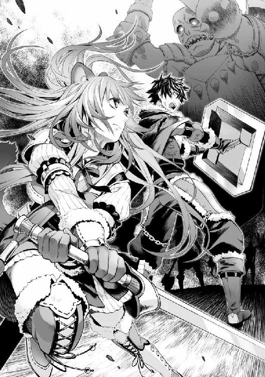
既に戦闘準備を整えたラフタリアが剣を持って現れた。
「ラフタリアか！ 丁度良い。アイツを倒すぞ！」
「はい！」
巨大な屍食鬼に向き合う様に移動して盾を構える。
「攻撃は俺が受け止める。今まで通り、剣で突き刺せ」
「わかりました」
大きくても屍食鬼の知能は他と然程変わらないのだろう。
目に付いた俺に攻撃を振るう屍食鬼の攻撃を真っ向から受け止める。
避けないのは味方へ攻撃がいかない様にする意味もある。避けると攻撃がバラけるし、ラフタリアが攻撃以外の事も考えなくてはいけなくなるからだ。
屍食鬼が攻撃を振り被ると同時にラフタリアは剣で突き刺した。
その影響で盾が受ける衝撃が若干減った。
よし！ これなら行ける。
「ラフタリア、コイツ等は近い奴から攻撃する習性がある。剣を刺したら距離を取り、俺に攻撃してきたら同じ要領でまた刺してくれ」
「はい！」
「す、すごい......」
俺達の連携に村人が感想を漏らしている。
そんな事よりコイツ等を早く逃がさないと。
「まだ居たのか！ 早く下がれ。協力は感謝するが、今は正直邪魔なんだ！ 俺はお前達を死なせない為にここにいるんだぞ！」
「わ、わかりました！」
強く叫ばれた影響か素直に頷いた村人達が警戒しながら距離を取り始める。
そしてある程度村人達が離れた所で背筋を嫌な物が通り過ぎた。
「ラフタリア！」
俺は剣を構えていたラフタリアを抱える様に抱き寄せ、マントを広げて中へ隠した。
「ナオフミ様!?」
一番防御力の高いライトメタルシールドに盾を変える。
その直後に降り注ぐ火の雨。
化け物の群れの中から外を見ると騎士団が到着し、魔法が使える連中が火の雨をこちらに向けて放っていた。
「おい！ こっちには味方がいるんだぞ！」
あっという間に引火して燃え盛る化け物達。昆虫が多いからな、火の魔法で燃え盛っていく。
どうやら俺は物理防御力だけでなく、魔法防御力も高い様だな。いや、ライトメタルシールドの専用効果魔法防御向上のお陰か。
巨大な屍食鬼も燃え盛る雨に大きな音を立てて倒れる。
それを確認するや真紅に燃え盛る防衛線の中、味方の誤射とはなんだろうかと腹が立ちながら、俺はツカツカと騎士団を睨みつけながら近づき、マントを靡かせ、炎を散らす。
「ふん、盾の勇者か......頑丈な奴だな」
騎士団の隊長らしき奴が俺を見るなり吐き捨てた。直後、マントの中から飛び出すように剣を振りかぶるラフタリア。吐き捨てた奴は剣を抜き、ガキンと音を立てて鍔迫り合いになる。
「ナオフミ様に何をなさるのですか！ 返答次第では許しませんよ！」
殺意を込めて、ラフタリアが言い放つ。
「盾の勇者の仲間か？」
「ええ、私はナオフミ様の剣！ 無礼は許しません！」
「......亜人風情が騎士団に逆らうとでも言うつもりか？」
「守るべき民を蔑ろにして、味方であるはずのナオフミ様もろとも魔法で焼き払うような輩は、騎士であろうと許しません！」
「五体満足なのだから良いじゃないか」
「良くありません！」
ギリギリと鍔迫り合いを続けるラフタリアを騎士達は囲む。
「シールドプリズン！」
「な、貴様──」
鍔迫り合いの相手を盾の牢獄に閉じ込め、俺は多勢に無勢を働こうとした騎士達を睨む。
「......敵は波から這いずる化け物だろう。履き違えるな！」
俺の叱責に騎士団の連中は分が悪いように顔を逸らす。
「犯罪者の勇者が何をほざく」
「なら......残りはお前達だけで相手をするか？」
燃え盛る前線を化け物たちが我が者顔で蠢き、最前線にいる俺に襲い掛かる。その全てを耐え切っている俺に、騎士達は青い顔をした。
仮にも俺は盾の勇者だ。コイツ等だけでは持つはずもあるまい。
「ラフタリア、避難誘導は済んだか？」
「いえ......まだです。もう少し掛かると思います」
「そうか、じゃあ早く避難させておけ」
「ですが......」
「味方に魔法をぶっ放されたが、痛くも痒くも無い。ただ......俺が手も足も出ないと舐めた態度を取っているのなら......」
ラフタリアの肩を叩きながら、騎士団を睨みつける。
「......殺すぞ。どんな手段を使っても、最悪お前等を化け物のエサにして俺は逃げてもいい」
俺の脅しが効いたのか騎士団の連中は息を呑んで魔法の詠唱を止める。
「さて、ラフタリア。戦いを始めるのは邪魔な奴等を逃がしてからだ。なに、敵はいっぱいいる。それからでいい」
思いのほか、耐えられるようだからな。これなら大丈夫そうだ。
「は、はい！」
指示に従いラフタリアは村の方へ駆け出す。
「くそ！ 盾の勇者風情が」
牢獄の効果時間が切れた途端、隊長らしき馬鹿が俺に怒鳴りつける。
「そうか、お前は......死ぬか？」
俺の背後に迫る化け物たち。
さすがに俺が守らねば自分に降りかかるのを察したのか馬鹿は黙って下がる。
まったく、どいつもこいつも、碌な奴が居ない。
俺が守るしか能の無い盾の勇者じゃなかったらこんな奴等、誰が好き好んで助けてやるか。
その後、足止めが効いたお陰か波から溢れ出た化け物の処理はある程度完了した。
邪魔な連中の避難が終わったラフタリアが前線に復帰すると俺は攻撃に打って出た。
騎士団の連中の援護を利用しつつ、空の亀裂が収まったのは数時間も後の事だ。
「ま、こんな所だろ」
「そうだな、今回のボスは楽勝だったな」
「ええ、これなら次の波も余裕ですね」
波の最前線で戦っていた勇者共が今回の一番のボスらしきキメラの死体を前に雑談交じりに話し合いを続けている。
民間人の避難を騎士団と冒険者に任せて何を言ってやがる......一ヶ月も経っているというのにゲーム気分の抜けない奴等だ。
注意するのも面倒な俺はそんなクソ勇者共を無視して、波を乗り切った事を安堵していた。
空は何時ものような色だが、やがて夕日に染まる。これで最低一ヶ月は生き延びられる。
......ダメージをあまり受けなかったのは、波がまだ弱いからだろう。次も耐えられるか正直分からない。
いずれ俺が耐えられなくなった時......どうなるのか。
「よくやった勇者諸君、今回の波を乗り越えた勇者一行に王様は宴の準備ができているとの事だ。報酬も与えるので来て欲しい」
本来は行きたくない。けど、俺には金がない。だから俺は引き上げる連中に付き添い、一緒に付いて行く。
確か、支度金と同等の金銭を一定期間毎にくれるはずだ。
銀貨五百枚。今の俺には大金である。
「あ、あの......」
リユート村の連中が俺を見るなり話しかけてくる。
「なんだ？」
「ありがとうございました。あなたが居なかったら、みんな助かっていなかったと思います」
「なるようになっただろ」
「いいえ」
別の奴が俺の返答を拒む。
「あなたが居たから、私たちはこうして生き残る事が出来たんです」
「そう思うなら勝手に思っていろ」
「「「はい！」」」
村の連中は俺に頭を下げて帰っていった。
村の損耗は激しい。これからの復興を考えると大変だろう。
命を助けて貰ったら礼を言うだけ、普段は俺を蔑むくせに......現金な連中だ。
だが......悪魔だと罵られるよりは遥かにマシだな。
「ナオフミ様」
長い戦いの末、泥と汗まみれになったラフタリアが笑顔で駆け寄ってくる。
「やりましたね。みんな感謝してますよ」
「......そうだな」
「これで、私の様な方が増えなくてすみます。ナオフミ様のお陰です！」
「......ああ」
戦後の高揚からか、それとも自身の出自と重ねてなのか、ラフタリアは涙ぐんでいる。
「私も......頑張りました」
「ああ、お前は良く頑張ったな」
ラフタリアの頭を撫でて、俺は褒めた。
そうだ。ラフタリアは俺の指示通りちゃんと動き、戦った。
それは正しく評価しなくてはいけない。
「いっぱい化け物を倒しました」
「ああ、助かったよ」
「えへへ」
嬉しそうに笑うラフタリアに少々不思議な思いがしつつ、俺達は城へと向うのだった。
「いやあ！ さすが勇者だ。前回の被害とは雲泥の差にワシも驚きを隠せんぞ！」
陽も落ち、夜になってから城で開かれた大規模な宴で王様が高らかに宣言した。
ちなみに死傷者は前回がどれ程なのか知らないが、今回の死傷者は一桁に収まる程度だったらしい。
......誰の活躍かなんて自己主張するつもりは無い。
あの勇者共が湧き出す化け物達を倒してはいたらしいので全部俺の手柄だとは思わない。だが、いずれこの程度では済まなくなるのだろうなと俺自身思っている。
砂時計によって転送される範囲が近かったから良かったものの、騎士団が直にこれない範囲で起こったらどうするつもりなんだ。
課題は多いな......。
ヘルプを呼び出し、確認する。
『波での戦いについて』
砂時計による召集時、事前に準備を行えば登録した人員を同時に転送することが可能です。
これって騎士団の連中も登録しておけば一緒に行けたんじゃないのか？
あの態度だ。俺に登録されようなんて輩はいないだろうがな。
しかし......あのクソ勇者共は使わなかったな。
一体何故だ？
知っているゲームなら手配していてもおかしくないはずだ。
......大方、そこまで大変じゃないと思っていたとか、確認を怠っていたとかそんな所だったのだろう。
言うのも煩わしい。俺は宴が催されている中、隅の方で適当に飯を食べる。
「ご馳走ですね！」
ラフタリアが普段は食べられない食べ物の山を見て、瞳を輝かせている。
「食いたければ食って良いぞ」
「はい！」
あんまり良いものを食べさせてあげられなかったからな......こんな時こそ好きなものを食べさせるべきだろう。それに見合う戦果をラフタリアは上げている。
「あ......でも、食べたら太っちゃう」
「まだ育ち盛りだろ」
「うー......」
なんかラフタリアが困った顔で悩んでる。
「食べれば良いだろ」
「ナオフミ様は太った子は好きですか？」
「はぁ？」
何を言ってんだ？
「興味ない」
女と言うだけであのクソ女が浮かんでくるんだ。好きとかそんな感情が浮かんでこない。
そもそもが女という生物が生理的に気に食わない。
「そうですよね。ナオフミ様はそういう方でした」
半ば諦めたかのようにラフタリアはご馳走に手を伸ばす。
「美味しいです、ナオフミ様」
「良かったな」
「はい」
ふう......宴とやらが面倒だな。報酬は何時貰えるんだ。
こんなクズの集まり、見ているだけで腹が立つ。
......よく考えると明日とかの可能性もあるな。無駄足だったか？ いや、食費が浮くから良いか。本人は気にしている様だがラフタリアは亜人で成長期だ。食費もバカにならない。
「タッパーとかあれば持ち帰れたのにな」
保存が利かないから明日までだろうが、金を考えたらもったいない......後でコックにでも頼んで包んでもらおう。他にもあまりの食材を頂いて行くのも良いかもしれない。
等と考えていると怒りの形相をした元康が人を掻き分けて、俺達の方へ向かってきやがる。
まったく、一体なんだって言うんだ。
相手をするのも面倒だから避けようと人混みの方へ歩くと元康の奴、俺を睨みつけながら追ってくる。
「おい！ 尚文！」
「......なんだよ」
キザったらしく手袋を片側だけ外して俺に投げつける。
確か、決闘を意味する奴だっけ。
元康の次の言葉に周りがざわめいた。
「決闘だ！」
「いきなり何言ってんだ、お前？」
ついに頭が沸いたか？
よくよく考えてみればゲーム脳の馬鹿だ。助けるべき人を見捨ててボスに突撃する様なイノシシだからな、槍のクソ勇者様は。
「聞いたぞ！ お前と一緒に居るラフタリアちゃんは奴隷なんだってな！」
闘志を燃やして俺を指差しながら糾弾する。
「へ？」
ラフタリアが変な声を漏らした。
......当の本人はご馳走を皿に盛って美味しそうに食事中だぞ。
「だからなんだ？」
「『だからなんだ？』......だと？ お前、本気で言ってんのか！」
「ああ」
奴隷を使って何が悪いというのだ。
俺と一緒に戦ってくれるような奴はいない。だから俺は奴隷を買って使役している。
そもそもこの国は奴隷制度を禁止していないはずだ。
それがどうしたというんだ？
「アイツは俺の奴隷だ。それがどうした？」
「人は......人を隷属させるもんじゃない！ まして異世界人である俺達勇者にはそんな真似は許されないんだ！」
「何を今更......俺達の世界でも奴隷は居るだろうが」
元康の世界がどうかは知らない。けれど人類の歴史に奴隷が存在しないというのはありえない。
考え方を変えれば、社会人は会社の奴隷だ。
「許されない？ お前の中ではそうなんだろうよ。お前の中ではな！」
勝手にルールを作って押し付けるとは......頭が沸いているなコイツ。
「生憎ここは異世界だ。奴隷だって存在する。俺が使って何が悪い」
「き......さま！」
ギリッと元康は矛を構えて俺に向ける。
「勝負だ！ 俺が勝ったらラフタリアちゃんを解放させろ！」
「なんで勝負なんてしなきゃいけないんだ。俺が勝ったらどうするんだ？」
「そんときはラフタリアちゃんを好きにするがいい！ 今までのように」
「話にならないな」
俺は元康を無視して立ち去ろうとする。何故なら勝負しても俺には得が無い。
「モトヤス殿の話は聞かせてもらった」
人混みがモーゼの伝説のように割れて王様が現れる。
「勇者ともあろう者が奴隷を使っているとは......。噂でしか聞いていなかったが、まさか本当だったとは......やはり盾の勇者は罪人という事か」
罪人って人に冤罪を押し付けておきながら良く言う。
しかも奴隷はこの国で認められた制度じゃないか。奴隷を使う奴がそこ等中にいるのに、何故俺だけが文句を言われなければならない。
「モトヤス殿が不服と言うのならワシが命ずる。決闘せよ！」
「知るか。さっさと波の報酬を寄越せ。そうすればこんな場所、俺の方から出てってやるよ！」
王様は溜息をつくと指を鳴らす。どこからか兵士達がやってきて俺を取り囲んだ。見ればラフタリアが兵士達に保護されている。
「ナオフミ様！」
「......何の真似だ？」
俺はこれでもかと瞳に力を入れて王様を睨みつける。
コイツ、俺の言う事を全く信じなかった。それ所か俺の邪魔しかしない。
「この国でワシの言う事は絶対！ 従わねば無理矢理にでも盾の勇者の奴隷を没収するまでだ」
「......チッ！」
奴隷に施してある呪いを解く方法ぐらい、国の魔術師とかは知っていそうだ。つまり、戦わないことはラフタリアが俺の元からいなくなるという事に繋がる。
ふざけるな！ やっとの事で使えるようになった奴隷だぞ！
どれだけの時間と金銭を投資したと思っているんだ。
「勝負なんてする必要ありません！ 私は──ふむぅ！」
ラフタリアが騒がないように口に布を巻かれて黙らされる。
「本人が主の肩を持たないと苦しむよう呪いを掛けている可能性がある。奴隷は黙らさせてもらおう」
「......決闘には参加させられるんだよな」
「決闘の賞品を何故参加させねばならない？」
「な！ お前──」
「では城の庭で決闘を開催する！」
王様の野郎、俺の文句を遮って決闘をする場所を宣言しやがった。
くそ、俺には攻撃力が無いんだぞ？ 出来レースじゃねえか！
城の庭は今、決闘会場と化していた。
辺りには松明が焚かれ、宴を楽しんでいた者達がみんな勇者の戦いを楽しみにしている。
しかし、決着がどう付くかは既に周知の事実となっているのだ。
攻撃する手段の無い俺と、槍の勇者である元康の戦い。
盾の勇者一行と槍の勇者一行の戦い......ではなく、俺と元康の一騎打ちになった。
さすがに元康自身のプライドが許さなかったらしい。
結果は誰だって想像出来る。
現にこの手の場面でお約束である賭博行為をする声がまったく聞こえてこない。まあ城に居るのが貴族が多いと言うのもあるけれど、波で戦った冒険者だって居るのだ。普通であれば賭博が行われないはずが無い。
つまりみんな分かっていて尚、俺に敗北を要求している。
錬や樹も城のテラスからこちらを傍観して笑っている。
俺が負け、奴隷を失う瞬間を楽しみに見ているのだ。
クソ！ クソクソクソクソ！
どいつもこいつも俺から毟り取る事しか考えていやがらない。
波との戦いであっても俺達に火の雨を降らす。
世界中の全てが俺をあざ笑う敵にしか見えない。
......良いだろう。俺には敗北しか選択肢は無い。だが、タダで負けてなんかやらない。
見ていやがれ元康。お前には抑えきれない程の恨みがあるんだ。
「では、これより槍の勇者と盾の勇者の決闘を開始する！ 勝敗の判定はトドメを刺す寸前まで相手を追い詰めるか、敗北を認めること」
俺は手首が上手く回るか試し、指を鳴らしつつ、構える。
「矛と盾が戦ったらどっちが勝つか、なんて話があるが......今回は余裕だな」
元康は鼻に掛けた態度で俺を蔑むように睨んでいる。
ふざけやがって。
「では──」
元康、戦いは相手を倒すことだけじゃないと教えてやる。
矛盾とは最強の矛と盾を売ろうとした商人にどっちが最強なんだと周りの連中が聞いたことから話が始まる。辻褄が合わない事を指す言葉だ。
だけど、この矛盾という言葉自体が、矛盾であると俺は思っている。
そもそも、何を以て勝負が決するというのか。
将棋と囲碁で勝負するようなものだぞ。
仮にそれで勝負するなら持ち手に注目してみればどうだ？
矛の目的は相手を殺す武器。盾の目的は持ち手を守る防具。
ここまで視野を広げると、最強の矛から持ち手を守った盾の勝利、であるという考えもある。
根本的に目的が違うんだ。矛と盾では。
「勝負！」
「うおおおおおおおおおおおおお！」
「でりゃあああああああああああ！」
俺はテレフォンパンチの構えをしながら元康の方へ駆け寄る。元康も矛を構えながら走って、俺に一突きしようと試みた。
距離が一気に近づき、元康の間合いに入った俺に元康は勢いを付けて矛を前に突く。
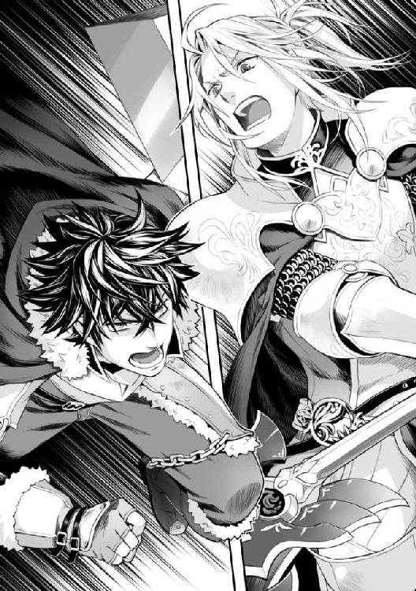
どこから出てくるか分かる攻撃に対処できないものは無い。
「乱れ突き！」
元康の矛が一瞬にして何個にも分かれて飛んでくる。
スキルか！ いきなりかましてくるとはやってくれる。
俺の突進は止められない。盾で頭を守りながら走り抜ける。
く......鋭い矛の先端が二発刺さり、肩と脇腹に痛みが走った。
かすり傷だけど、やはり勇者の攻撃だけあって耐え切れない。しかし元康のスキルはそれで一度打ち切り、クールタイムに入ったようだ。
「喰らえ！」
それでも元康は俺に向けて矛を放つ。
槍、もしくは矛の弱点はその射程にある。中距離を得意とする長物の武器は射程の内側に来られると途端に扱いが難しくなるのだ。本来であれば近付かれる前に敵を倒せば良い。だが俺は、盾は一撃では倒れない。俺は紙一重で元康の突きを避け、全体重を掛けて突進し、組み伏す。
そして元康の顔面に拳を叩き込んだ。
ガン！
チッ！ やっぱり俺ではダメージを負わすことができない。
しかし、俺の攻撃はこれだけで納まるはずも無い。
元康の野郎は俺の攻撃が痛くも痒くも無いのか舐めた目をしやがる。
何時までそんな顔で居られるかな？
俺はマントの中から必殺武器を取り出して元康の顔にねじ込む。
「いて！」
波の時に火の雨を受けて全滅してしまったが、城に来る途中で拾ってきた脅しの道具だ。
「な？ な!?」
ククク......元康の奴、メチャクチャ戸惑いの声を上げてやがる。
攻撃する相手を変えたバルーンが元康に必死に噛み付いている。
「いて、いて！」
元康は大事な顔を噛まれて痛みに悶えた。
そう、俺の攻撃は何も素手だけではない。バルーンと言う人間専門の便利な武器があるんだよ！
「オラオラオラ！」
顔に二匹、そして立ち上がれないように足で元康を押さえつけながら股間にバルーンを投げつける。
「な、なんでバルーンが!?」
観衆が悲鳴を上げる。
知ったことか！
後は全体重を掛けて、股間にバルーンを深く齧り付かせる。
「グ......てめえ！ 何の真似だ！」
「どうせ勝てないなら、精一杯嫌がらせしてるよ！ ターゲットはモテ男の命である顔と、男の証である股間だ！ てめぇなんて面と玉がなけりゃタダのキモイオタクなんだよ！」
「なっ!? やめろおおおおぉぉぉぉ！」
「不能になりやがれれえええぇぇぇ！」
ガツンガツンと俺は元康がバルーンを剥がそうとする手を妨害する。
元康は顔面に引っ付いたバルーンを引き剥がすのがやっとで、倒れた体勢では強く矛も振るえない。そのため、顔面のバルーンを割るごとに俺が追加のバルーンを投げつけるとまた対処に時間を食う。無論バルーンだけではなく、エグッグなども含め元康は針の筵状態だ。
この間に出来る限りの嫌がらせをする。
どうせ負けるんだ。なら、最大限のトラウマを元康に刻み込んでやる。
「オラオラオラ！」
「くっ！ このやろおおおお！」
全力で起き上がろうとする元康を全体重で押さえつけ、バルーンの攻撃が続いていく。
そうだ。どっち道負けるのなら試してみる手もあるな。
盾を双頭黒犬の盾に変化させる。
そして押さえつけられた体勢の為に力の入らない元康の槍の切っ先を盾で受け止めた。
黒板を引っかいたような音が響く。
専用効果、ドッグバイトが作動し、盾に装飾されていた犬の剥製が元康に向って吠えて噛みつく。ドッグバイトは攻撃を受けて発動するカウンター効果だ。
この効果によって、犬の装飾部分が動いて、敵に食らいつく。効果時間は三〇秒。
普段の使用用途は敵に僅かなダメージを与えて拘束すると言う物だが、こう言う使い道もある。
「い、いで！」
お？ ちゃんとダメージが入るじゃないか。もしかしたら勝てるかもしれない。
ならやる手は他にも出てくる。
「エアストシールド！」
場所は元康の腹だ。
盾が出現して元康の腹に盾が乗っかる。スキルにはこういう使い方もある！
「ぐ......は、放せ！」
「やれるものならやってみろ！ この卑怯者が！」
俺に攻撃の手段が無いと舐めきった事を考えているからこうなるんだ。
双頭黒犬の盾を元康の顔面に近づけ、顔を上げるタイミングにあわせてぶつける。
ドッグバイトが作動し、元康の顔に噛みつく。
「ぐ......てめぇ！ 覚えてろ！」
「知るか！」
おっとエアストシールドの効果時間が切れるな。
「シールドプリズン！」
「く......──！」
今度は大きな盾の檻だ。その体勢での脱出は難しいぞ。更にバルーンやエグッグが動けない所に噛み付き続ける。
こりゃあ勝てるぞ！ 対人の対戦経験無いんじゃないか？
「ガハ！」
プリズンが砕ける。そのタイミングに合わせてクールタイムが過ぎたエアストシールドを元康の腹に再召喚。
バルーンが割れる事無く、しかも隙あらばドッグバイトで攻めていけば勝てるぞ！
「さっさと負けを認めろ！ こんな茶番で勝ってお前は嬉しいのか？」
「盾の癖に槍の勇者様に何をするんだー！」
野次が聞こえてくる。知ったことか、八百長試合をさせたのを黙って聞き入れた外野が騒ぐな。
「こ、このままじゃ盾が勝つんじゃないか？」
「まさか......嘘だろ？」
とんだ番狂わせだったな。
「ほら元康、降参しろ。お前の負けだ」
「だ、誰が降参なんてするか！」
「じゃあ耐えきれなくなるまで押さえつけるまでだ。実際、俺の勝ちのはずなんだがなー......」
審判をしている王に視線を向けると、露骨に余所見をしていやがる。無かったことにするつもりだな。
ならばこのままバルーンとエグッグに元康の顔や手足を攻撃させ続けるとするか。
じゃないとアイツ等はどっちが勝っているのか分からないみたいだし。
と、思っていたら──。
「ぐあっ......！」
突然背後を強く押され、よろめく。
何があったかよろめきながら衝撃が来たと思わしき方角を見る。
するとそこにはあの地雷女！
マインが人混みにまぎれてこっちに向けて手をかざしていたのだ。
おそらく、風の魔法だ。
確か、ウイングブロウという拳大の空気の塊を当てる魔法。
空気の塊故に見た目は透明。良く見なければ見えない。
マインの奴、してやったりという笑みを浮かべ、あっかんべーと挑発している。
「てめえええええ！」
俺の叫びは起き上がった元康の反撃にかき消された。
立ち上がった元康は直に矛でバルーンを殲滅し、俺に矛を向ける。
既にバルーンはいない。もはや反撃効果のある盾で誤魔化すしかない。
クソッ！ 元康......！ どこまで卑怯な男だ。
以降は一方的な戦いだった。
反撃効果のドッグバイトを当てる位しか手段が無くなったからだ。
やがて猛攻に倒れた俺に元康が肩で息をしながら、矛を首筋に当てる。
「はぁ......はぁ......俺の、勝ちだ！」
災厄の波よりもつらそうな表情で元康は矛を掲げて宣言した。
「何が勝ちだ、卑怯者！ 一対一の決闘に横槍が入ったじゃねえか！」
「何の事を言ってやがる。お前が俺の力を抑えきれずに立ち上がらせたのが敗因だろ！」
......本気で言ってんのか、この野郎は？
何が勇者だ！ 何が勇者に奴隷は許されないだ！
出来レースすら満足に全うできない奴が勇者気取ってんじゃねーよ！
「お前の仲間が決闘に水を差したんだよ！ だから俺はよろめいたんだ！」
「ハッ！ 嘘吐きが負け犬の遠吠えか？」
「ちげえよ！ 卑怯者！」
俺の言い分を無視した卑怯者、元康は勝ち誇った態度で見下してくる。
本当に、横槍が入ったんだ。なのに......この野郎は！
「そうなのか？」
観衆に元康は目を向ける。
だけど観衆はその事実に気付いているのかいないのか......沈黙が支配する。
「罪人の勇者の言葉など信じる必要は無い。槍の勇者よ！ そなたの勝利だ！」
この野郎！ 言うに事欠いて、主催者である王様が堂々と宣言しやがった。
元康が負けそうになっているときは余所見してた癖に、俺が押さえつけられたらコレかよ！
さすがに周りの連中は若干思うところもあったのだろう。目が泳いで何かを言いたげにしている。だが、ここで一番の権力者である王様が断言してしまえば覆せる奴なんて居ない。
それこそ王様によって抹殺されかねないのだろう。
ここは独裁国家かってんだ！
「さすがですわ、モトヤス様！」
事の元凶であるクソ女が白々しく元康に駆け寄る。そして城の魔法使いが元康だけに回復魔法を施し、怪我を治した。
俺には掛けるつもりもないようだ。
「ふむ、さすがは我が娘、マルティの選んだ勇者だ」
と、王様はマインの肩に手を乗せる。
「な、んだとっ......!?」
マインが王様の娘!?
「いやぁ......俺もあの時は驚いたよ。マインが王女様で、偽名を使って潜り込んでたなんてな」
「はい......世界平和の為に立候補したんですよ♪」
......そうか、そういう事だったのか。
いくらなんでも被害者の証言だけで俺が犯罪者のレッテルを貼られるなんて変だと思っていたんだ。
お忍びの王女様がお気に入りの勇者の一番になる為に、勇者の中で一番劣る俺を生贄にして、金を騙し取り、その父親はバカ娘のワガママを寛容に許し、証拠をでっちあげて冤罪を被せる。
そうして犯罪者から王女を救った勇者である元康は、お忍びの王女と結果的に仲良くなり、他の女性よりも関係が深まる。
ここで最初の支度金が俺だけ多かったのも説明が付く。
つまり王女は良い装備を合法的に手に入れ、お気に入りの勇者である元康を優遇する。
最初から他の冒険者よりも遥かに高価な装備を付けていたら、元康だっておかしいと思って距離を置くはずだ。
どこまで計算されているのかは、もはや本人に直接尋ねる他ないが、ここまでする奴等だ、絶対に証拠を残したりはしないはず。要するに、後に残るのは犯罪者で役立たずの盾の勇者と、王女を華麗に救った槍の勇者だけ。
芋蔓式に出てくる推理。
ダメージこそ受けなかったが、俺をよろめかせる程高威力のウイングブロウを放てるのは、それだけ育ちが良い証拠に他ならない。つまりこの国の王女である、偽らざる証。
出来レースを開催した挙句、横槍の異議を無理矢理封殺したのは、そんな裏があった訳か。
そりゃあ娘が決闘の邪魔をしたら、娘のお気に入りである元康を庇うよな。
だとすると元康が俺と決闘するのも最初から仕組まれていたと見るべきだ。
......なに、簡単だ。あの女好きの元康の耳元でこう囁くだけでいい。
『あの女の子は盾の勇者に無理矢理隷属させられている奴隷ですわ。今すぐ助けてあげてください』
未来の夫の評価と優しい自分を同時に手に入れる最大の機会だ。ここまでするあいつ等が、このチャンスを見逃さないはずがない。
最終的に元康が王女と結婚すれば、犯罪者から奴隷の少女を救った英雄譚の完成だ。
伝説は、悪が強大であればある程、英雄が際立つ。
後々の人民には悪い勇者を倒した伝説の英雄と、その妻の名が永遠に語り継がれるという訳だ。
クソッ！ なんてクズな王とビッチな王女なんだ！
いや、待てよ......王女が、ビッチ......？
このフレーズ、どこかで聞いた覚えがある。
どこだ？ 一体どこでそんな話を聞いた。
......思い出した。四聖武器書を読んだ時だ。
あの本の王女はどの勇者にも色目を使うビッチだった。
仮にクソ勇者共と同じく、俺が図書館で読んだ四聖武器書が、この世界となんらかの関わりがあるのならば、王女がビッチである理由にも納得が行く。
身体の底から沸騰するような怒りが湧き出て、全身を駆け巡る。
ドクン......。
盾から、何か......鼓動を感じた。
カースシリーズ
──の盾の条件が解放されました。
心の底から溢れるドス黒い感情が盾を侵食して、視界が歪む。
「さあ、モトヤス殿、盾の勇者が使役していた奴隷が待っていますぞ」
人垣が割れ、ラフタリアが国の魔法使いによって奴隷の呪いを、今まさに解かれようとしていた。
魔法使いが持ってきた杯から液体が零れ、ラフタリアの胸に刻まれている奴隷紋に染み込む。
すると俺の視界に映っていた奴隷のアイコンが明滅して消え去る。
これで正式に、ラフタリアは俺の奴隷ではなくなってしまった。
心の底に蠢く、黒い感情が心を支配していくのを感じる。
この世界は俺をあざ笑い、嘲り、そして苦しむ様を喜んでいるようにしか見えなくなってきた。
そう、もう俺の視界には......黒い笑みを浮かべる影しか見えなくなりつつある。
「ラフタリアちゃん！」
元康がラフタリアの方へ駆け寄る。
口に巻かれた布を外されたラフタリアは近付いてくる元康に向けて何か言おうとし、涙を流しながら元康の頬を......。
──叩いた。
「この......卑怯者！」
「......え？」
叩かれた元康が呆気に取られたような顔をする。
「卑怯な手を使う事も許せませんが、私が何時、助けてくださいなんて頼みましたか!?」
「で、でもラフタリアちゃんはアイツに酷使されていたんだろ？」
「ナオフミ様は何時だって、私に出来ない事はさせませんでした！ 私自身が怯えて、嫌がった時だけ戦うように呪いを使っただけです！」
俺の意識は薄く、何を言っているのか良く聞こえない。
いや、聞こえてはいる。だけど、もう誰の言葉も聞きたくない。
こんな場所から早く逃げたい。
元の世界に帰りたい。
「それがダメなんだろ！」
「ナオフミ様は魔物を倒すことができないんです。なら誰かが倒すしかないじゃないですか！」
「君がする必要が無い！ アイツにボロボロになるまで使われるぞ！」
「ナオフミ様は今まで一度だって私に魔物の攻撃で怪我を負わせた事はありません！ 疲れたら休ませてくれます！」
「い、いや......アイツはそんな思いやりのあるような奴じゃ......」
「......アナタは小汚い、病を患ったボロボロの奴隷に手を差し伸べたりしますか？」
「え？」
「ナオフミ様は私の為に様々な事をしてくださいました。食べたいと思った物を食べさせてくださいました。咳で苦しむ私に身を切る思いで貴重な薬を分け与えてくださいました。アナタにそれができますか？」
「で、できる！」
「なら、アナタの隣に私ではない奴隷がいるはずです！」
「!?」
ラフタリアが......俺の方へ駆け寄ってくる。
「く、来るな！」
ここは......地獄だ。
悪意で作り上げられた世界だ。
女は、いや、この世界の奴等の全てが俺を蔑み、苦しむように責め立てる。
触ったらまた嫌な思いをする。
ラフタリアはそんな俺の態度に再度、元康を睨む。
「噂を聞きました......ナオフミ様が仲間に無理やり関係を迫った、最低な勇者だという話を」
「あ、ああ。そいつは性犯罪者だ！ 君だって性奴隷にされていたんだから分かるだろう」
「なんでそうなるんですか！ ナオフミ様は一度だって私に迫った事なんて無いです！」
そしてラフタリアは俺の手を掴んだ。
「は、放せ！」
「ナオフミ様......私はどうしたら、アナタに信頼して頂けるのですか？」
「手を放せ！」
世界中の全ての人が俺を謂れの無い罪で責め立てるんだ！
「俺はやってない！」
ふわ......。
激高する俺に、何かが覆いかぶさる。
「どうか怒りを静めてくださいナオフミ様。どうか、アナタに信じていただく為に耳をお貸しください」
「......え？」
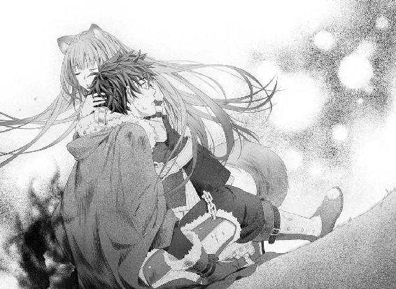
「逆らえない奴隷しか信じられませんか？ ならこれから私達が出会ったあの場所に行って呪いを掛けてください」
「う、嘘だ。そう言ってまた騙すつもりなんだ！」
なんだ。俺の心に無理やり入って来るこの声はなんだ！
「私は何があろうとも、ナオフミ様を信じております」
「黙れ！ また、お前達は俺に罪を着せるつもりなんだ！」
「......私は、ナオフミ様が噂のように誰かに関係を強要したとは思っていません。アナタはそんな事をするような人ではありません」
この世界に来て......初めて、聞きたかった言葉が聞こえた。
視界を覆う黒い影がふわりと散っていくような気がする。
人肌の優しさが伝わってきた。
「世界中の全てがナオフミ様がやったと責め立てようとも、私は違うと......何度だって、ナオフミ様はそんな事をやっていないと言います」
顔を上げるとそこには今まで俺の瞳に映っていた少女ではなく、一七歳くらいの女の子がいた。
その顔立ちは何処と無くラフタリアを彷彿とさせるが、比べるのも失礼だと思うくらい可愛らしい少女。
汚れてくすんだ色をしていた髪が綺麗に整っており、カサカサだった皮膚は健康的な物に変わっている。
ガリガリで骨が見えていた様な身体にもしっかりと肉が付いて、外見相応な、元気な姿。
何よりも俺を見つめる瞳が、濁った、何もかもを諦めた色ではなく、強い意志が篭ったものに変わっている。
俺はこんな女の子を知らない。
「ナオフミ様、これから私に呪いを掛けてもらいに行きましょう」
「だ、だれ？」
「え？ 何を言っているんですか。私ですよ、ラフタリアです」
「いやいやいや、ラフタリアは幼い子供だろ？」
ラフタリアを自称する、俺を信じると言ってくれた女の子が困ったように首を傾げる。
「まったく、ナオフミ様は相変わらず私を子供扱いするんですね」
声は......確かに聞き覚えのあるラフタリアの声だ。
だけど、姿がまったく違う。
いやいやいや、幾らなんでも、仮にラフタリアだとしてもおかしいだろ。
「ナオフミ様、この際だから言いますね」
「何？」
「亜人はですね。幼い時にＬｖをあげると比例して肉体が最も効率の良いように急成長するんです」
「へ？」
「亜人は人間じゃない。魔物と同じだと断罪される理由がここにあるのです」
恥ずかしそうにラフタリアを自称する女の子は続ける。
「確かに私は......その、精神的にはまだ子供ですけれど、体は殆ど大人になってしまいました」
そしてラフタリアはまた俺を......その良く見ると豊満な胸に顔を埋めさせて告げる。
「どうか、信じてください。私は、ナオフミ様が何も罪を犯していないと確信しています。貴重な薬を分け与え、私の命を救い、生きる術と戦い方を教えてくださった偉大なる盾の勇者様......私はアナタの剣、たとえどんな苦行の道であろうとも付き従います」
それは......ずっと、誰かに言ってもらいたかった言葉。
ラフタリアが俺と一緒に戦う事を誓ってから、ずっと言い続けている言葉。
「どうか、信じられないのなら私を奴隷にでも何にでもしてください。しがみ付いたって絶対に付いていきますから」
「くっ......う......うう......」
この世界に来て、初めての優しい言葉に無意識に嗚咽が漏れる。
泣いてはダメだと押しとどめようとしても、涙が溢れて止まらない。
「ううう......うううううううううう」
ラフタリアに抱きつくような形で俺は泣き出してしまった。
「さっきの決闘......元康、お前の反則負けだ」
「はぁ!?」
錬と樹が人混みの間から現れて告げる。
「上からはっきり見えていたぞ、お前の仲間が尚文に向けて風の魔法を打つ所が」
「いや、だって......みんなが違うって」
「王様に黙らされているんですよ。目を見てわかりませんか？」
「......そうなのか？」
元康が観衆に視線を向けるとみんな顔を逸らす。
「でもコイツは魔物を俺に」
「攻撃力が無いんだ。それくらいは認めてやれよ。攻撃手段も無く決闘させたお前が悪い」
今更、正義面で錬は元康を糾弾する。
「だけど......コイツ！ 俺の顔と股間を集中狙いして──」
「勝てる見込みの無い戦いを要求したのですから、最大限の嫌がらせだったのでしょう。それくらいは許してあげましょうよ」
樹の提案に元康は不服ながらも、諦めたかのように肩の力を抜く。
「今回の戦いはどうやらお前に非があるみたいだからな、諦めろ」
「チッ......後味が悪いな。ラフタリアちゃんが洗脳されている疑惑があるんだぞ」
「あれを見て、まだそれを言えるなんて凄いですよ」
「そうだな」
バツが悪そうに、勇者達が立ち去ると、観衆も釣られて城に戻っていく。
「......ちぇっ！ おもしろくなーい」
「ふむ......非常に遺憾な結果だな」
不愉快の化身二人も苛立ちながら立ち去り、庭には俺達だけとなった。
「つらかったんですね。私は全然知りませんでした。これからは私にもそのつらさを分けてください」
優しい、その声に......俺の意識はスーッと遠くなっていった。
それから一時間くらい俺はラフタリアに抱きつく形で寝入ってしまっていた。
本当に驚いた。まさかラフタリアがこんなに成長しているとは思いもしなかった。
どうして、気付かなかったのか......たぶん、余裕が無かったからだ。
俺の目にはラフタリアの成長に気付く余裕が無かった。全てをステータス魔法で計測して、ラフタリアを評価していた。
宴はとっくに終わり、城で用意された今は使っていない、やや埃塗れの使用人の部屋でその日は本格的に休む。
初めて城で泊まった時とは雲泥の差だ。あのクズな王は何処までも俺に不遇を背負わせるつもりのようだ。
もはや奴の名称はクズで良いな。
マインはあのビッチな行動から俺の中での名称はビッチに確定！
元康はヤリチンとでも名付けるか？ いや......道化でも良いかも。
利用されているだけとも取れるから......保留にしておいてやろう。
ラフタリアが飯をあまり食べていない俺に気を使って、出かけていった。
「城のキッチンで廃棄されるはずだった食べ物を分けてもらいました」
「ああ、ありがとう」
ラフタリアがくれたあり合わせで作られたサンドイッチのような物を食べる。
「うー......あんまり美味しくないですね」
どうせ味がしないんだ、俺は何だって食える。そう思って一口頬張った。
「あ、あれ!?」
ぼそぼそで何の味もしない物を想像していたのに、この世界に来た時に感じた味が思い出される。
俺の気の所為か？ もう一口。
「どうかしました？」
「あのな......味がするんだ」
「は？」
「嵌められてから、何を食っても味なんて感じなかったのに」
何故だろう。あんだけ泣いたのに、また涙が溢れてくる。
食べ物に味がするって......こんなにも温かな気持ちになるんだって知らなかった。
「それは良かったです。私もナオフミ様がお作りになった料理がとても美味しかったのに、作った本人であるナオフミ様が楽しんでおられなかったのがとても残念でした」
ラフタリアはクスリと笑い、サンドイッチを頬張る。
「これからは一緒に美味しい物を食べましょうね」
「......ああ」
誰かが信じてくれる。ただ、それだけで、心が少しだけ軽くなったような気がした。
マインに裏切られてからまったく感じなかった味覚が、蘇った。
これもすべてラフタリアが俺を信じてくれたからだと思う。
誰かに信じて貰えるって、それだけで心が軽くなるものなんだ......。
「明日は何をしにいきましょう？ Ｌｖを上げますか？ それともお金稼ぎをしましょうか？」
「そうだなぁ......波の報奨金で装備を整えたいかな。あいつ等からは一ヶ月も遅れたけど、そこから始めなきゃいけないと思う。もっと稼ぎの良い所を見つけるとかさ」
これから俺は、この世界で......唯一信じてくれたかけがえの無い仲間と一緒に、世界を救う戦いを続けなくてはならない。
イヤだと何度も思ったけど、俺を信じてくれるラフタリアの為にも、前向きに戦っていこうと決めた。
「ナオフミ様」
「なんだ？」
「頑張りましょうね」
「おう！」
生き残りたいだけじゃなく......信じてくれる人の為に......進もう。
アニメとかだと夢一杯の大冒険が展開される異世界だけど、俺の来た世界はこんな......とても酷い世界だ。だけど、それでも俺は......頑張っていきたい。
信じてくれたラフタリアの為にも。
「ラフタリア」
「なんですか？」
失礼かもしれないけど、俺は信じてくれた子の頬に軽くキスをする。
「ありがとう」
「あ、あああああ......」
「ああ......悪かったな。こう言うのは嫌いか」
「い、いえいえいえいえいえ！」
「気を使わないでくれ、失礼だったよな。もうしない」
「大丈夫です！」
使命に燃えている女の子にこう言う事をしたら失礼だし、怒られてしまう。大きく学んだ。
よく、こういうアニメだと肉体関係を結んでいるだろうなって描写があるけど、実際、そんな余裕は無いな。
と、考えてまた悪い癖を出してしまったと反省する。
ここは夢のある異世界じゃなく、現実の異世界なんだ。アニメやゲーム感覚で居たら痛い目を見る。もっと......しっかりと先を見据えて行かねば生き残れない。
ラフタリアが俺の手を握り、俺も握り返す。
大丈夫......きっと乗り越えられる。信じてくれる人がいるのだから、歩きだせる。
俺の戦いは、まだ始まったばかりなんだ。一歩ずつ、少しずつでも良いから進んでいこう。
俺の名前は北村元康。
ひょんな事から知っているゲームの世界に似た世界へ跳躍してしまった大学生だ。
俺はこの世界に伝説の武器である槍の所持者として召喚され、勇者としてこの世界を救ってほしいと頼まれた。
......運が良いと思う。何せ知っているゲームの知識で上り詰めるだけで世界を救い、ハーレムまで形成できるのだから。
「お！ そこの君、今暇？ 良かったら俺と一緒にデートしない？」
俺が今いるのは国からの依頼を斡旋するギルドと言う場所だ。
ゲームだと一日クエストやイベント、エピソードを受ける為の場所だけど、この世界では冒険者が金銭を手に入れる場所でもある。
「えー......どうしよっかなー」
可愛い女の子が俺の背負う槍に目を向ける。
「槍をお使いになるのですか？」
「ああ、何せ俺は槍の勇者だからさ」
槍を取り出し目の前で変化させる。これぞ勇者の特権！
この変化機構で身分を証明するのだ。
「キャー！ 本物の槍の勇者様ですかー！ 噂は聞いてますよ。ステキー！」
女の子はテンションが上がって黄色い声で嬉しそうに言う。
へへ、今日は楽しくなりそうだ。
「モトヤス様ー！ ギルドの依頼を持ってきましたよ！」
ナンパ中の女の子を押しのけて、赤い髪が特徴の美少女が俺に依頼の巻き物を持ってきた。
「すいませんね。モトヤス様はこれから大事なお仕事があるので、お帰りになってください」
「で、でもー」
今、俺に依頼を持ってきたのはマインという女の子である。
本名はマルティ＝Ｓ＝メルロマルクという名前だ。
実はこの国の王女様で、盾の勇者である尚文に同情して同行したが、その信頼を裏切られてしまったという経緯で俺の仲間になった。
まったく、あの野郎はとんだ最低なオタクだ。
異世界に来ていきなり下半身の事しか考えられないなんてな。
「何？ あなたもモトヤス様にご同行したいの？」
次に女の子に尋ねたのはレスティ。マインの学生時代からの友人らしい。マインを仲間にして数日した頃に仲間にしてほしいと言ってきた子だ。顔はマインよりも若干劣る。ま、美少女には辛うじて入るかな。マインを90点とすると80点と言う所だ。
「モトヤス様との冒険は厳しいわよ。あなたについて来れるかしら？」
と、応援してくれた子の名前はエレナ。冒険を開始してから一週間後に仲間になった女の子だ。マインとレスティ以外で長く俺の仲間を続けてくれている。
それから結構メンバーが入れ替わっている。
この世界に来てからまだ三週間かそこ等なのに入れ替わりが激しい。
ま、ネットゲームでの出会いもこんなもんだし、気にしてたら始まらないか。
最初の数日は何人か仲間にしてくれと志願してきたのだけど、加入後、数日で逃げるようにいなくなってしまった。男はどうでも良いけど、気を使って接したはずの女の子まで出て行く。何人入れ替わったか覚えきれないな。一応理由は合わなかったからと居心地悪そうだった。
ま、下手に粘着質な女はゴメンだけどね。
そうそう、今日は俺が異世界に召喚されて三週間目の節目の日だ。
となると彼女達と一緒にお祝いをするのが良い。そうだ、そうに決まっている。
「君も一緒に来るかい？」
「は、はい！」
「じゃあ、行こうか。君の名前は？」
「ラ、ライノです」
「そうか、じゃあライノちゃん。一緒に行こう」
俺はライノちゃんの手を握ってパーティー要請を送った。
ライノちゃんもそれに同意してパーティーに加入する。
「......」
マインがなんかライノちゃんを睨んでいるような気がして振り向くと、そんな顔はしていなかった。やさしげな笑みを浮かべている。マインがそんな顔をする訳無いよな。
「で、マイン。次の依頼はなんだい？」
「えっと、南西の村で飢饉が起こっていまして、そこへ食料を配給する馬車の護衛です」
お？ この依頼は聞き覚えがあるぞ。
ゲームでもあったギルドのクエスト。発注時期は......そういやこのＬｖ帯だったな。
「わかった。いつどこで馬車が待っているんだ？」
「明日の朝に出発するそうです。場所はこのギルドの倉庫前だそうです」
「了解。じゃあそれまで暇だな、少しＬｖ上げをして、夜は豪勢に行こうじゃないか」
「「「「キャー!!」」」」
マイン達が黄色い声をあげて喜ぶ。
はは、どこの世界の女の子も遊ぶのが大好きだな。
それに今日はちょっとした催しもしてあげようと思うし。
「じゃあ、みんな行くぞ！」
「「「「はーい！」」」」
この辺りで効率の良い狩り場にサクッと到着。
魔物の群生する地域を重点的に回って狩りを始める。
さっそく魔物が現れた。
スカイブルーウィングという鳥型の魔物だ。
飛行能力が低く、同じ鳥類の魔物であるフィロリアルの様な足の速さも無い。その割に経験値が良い。
Ｌｖ30から40までの間だと非常に効率の良い相手だ。
「じゃあ君たちは下がっているんだ」
「「「はい！ 応援してます」」」
「え？」
ライノちゃんは俺のパーティーにまだ慣れていないようでキョトンとした表情で佇んでいる。
「可愛い君達に血生臭くて汚いＬｖ上げの戦いは似合わない。だからそこで応援していてくれ」
「は、はあ......」
よ！ エアストジャベリンを放ち、スカイブルーウィングを仕留める。
「「「キャー！ モトヤス様ステキー！」」」
マイン達の応援でやる気が向上していく。
「あ、モトヤス様！ また現れましたよ」
「おう！」
「今度はこっちです！」
「おう！」
「モトヤス様、喉が渇きました」
「おう！」
「モトヤス様、お菓子ください」
「おう！」
「モトヤス様、私たち、座って休んでますね」
「おう！」
と、今日も楽しく狩り場でＬｖ上げをした。
俺のＬｖが43に上がり、マインのＬｖが39になった。
レスティが今38でエレナは35。
新しく入ったライノちゃんはまだ20だ。
「ふう。今日はこれくらいにして帰ろうか」
適度に汗をかいた俺は、日が沈む前に狩りを終えて町へ戻る。
「今日も大変でしたね」
「ああ、君たちの応援が無かったらきつかったよ」
「......？」
ライノちゃんが首を傾げている。どうしたというのだろうか？
まさか泥臭いＬｖ上げなんてしたかったのかな？ いやいや、女の子がそんな事を望むはず無いじゃないか。
「じゃあ日が沈んだら宿で落ち合おう」
「わかりました。では私達はエステに行ってきますわ」
「ええ、ごきげんよう」
「それでは」
「はぁ......」
ライノちゃんは気乗りしていない様子だが、女の子同士で親睦を深めるんだろう。
同性の友情に横槍を入れる程俺は無粋じゃないさ。
さて、今日は仕込みをしなくちゃいけないんだ。足早に市場に行って食材を集めないと。
と、市場で食材を集め、宿の厨房を借りて準備した頃には日も沈みきっていた。
「あ、モトヤス様。ただいま帰りました」
宿の店主にマイン達が来たら厨房へ来るよう言付けておいたんだった。
「あの、どの用で厨房へ？」
「ああ、ちょっとサプライズが......あれ？ ライノちゃんは？」
「それが、どうも今日の魔物退治で私達のパーティーとはソリが合わない事を理解したようで、『ありがとうございました。また機会があったらよろしくお願いします』と去って行きました」
「そ、そうか」
またか。どうもみんなパーティーに馴染めないみたいなんだよなぁ。
マイン達は元々お姫様や貴族出身だからソリが合わないのかな？ それでも仲良くして欲しいのだけど......だって俺のパーティーは平等だし！ 皆等しく愛しているしな。
「それで今夜はどうしたのですか？」
「ああ、今日で俺がこの世界に召喚されて三週間なんだ。だからみんなで祝おうと思って料理したんだ」
「へー......」
マインが俺の作った料理を一瞥する。
元の世界の料理だからマイン達の舌に合うかはわからないけど、味は保証できる。
生まれてこの方、作った料理を不味いって言われた事が無い。
これでも俺は天才的に料理得意だし。何でも出来るし、女の子にもモテるし。
「料理も出来るなんて凄いですね！ 何でも出来るモトヤス様を尊敬します！」
「ええ、素晴らしい才能、さすが勇者様ですわ！」
「そうです！ 見ているだけでお腹が鳴りそうですわ！」
「だろ！ じゃあいっぱい食べてくれ」
俺の自慢の料理をみんな美味しいと食べてくれた。
でもちょっと作り過ぎたかな。結構残ってしまった。
「じゃあ、おやすみなさい」
食事と風呂を終えた後、軽く雑談をし、マイン達は俺とは別の部屋で就寝した。
さーて、俺の夜はまだ終わって無いぜ。
さすがにマイン達は夜の遊びをする余裕はないみたいだし、酒場に遊びに行こー。
宿を出て町の裏路地を歩いていると、歓楽街の闇の部分である地区を通りかかる。
「あ......あ、や、やめ......」
絶賛プレイ中という声が小屋から聞こえてくる。凄い繁盛してるな。
何処も卑猥なモノを喜んで見世物小屋にする店が存在するんだよな。ま、しょうが無いか。正義面して乗り込んだって、見世物にされている女の子は仕事でやっている訳だし。
なんかライノちゃんの声に似ているけど、他人の空似に決まってる。曲りなりにも冒険者だし、ちゃんと考えていそうな子だったからな。こんな所にいるはずがない。
「い、いやああ......誰か、誰か助けて！」
今日のプレイは演技がかっているなぁ。なんて思いながら店から聞こえる声を聞き流して良さそうな酒場を物色したのだった。
「でりゃああああああああああああ！」
「う、うわああああ！」
「こ、こいつ強いぞ！ それにあの槍......」
「まさか、槍の勇者なんじゃ」
「悪人に名乗る名は無い！」
翌日から始まった食料運搬から始まる飢饉の村復興のクエスト。
その積み荷を運んでいる最中に遭遇した盗賊を俺が倒す。
「さすがですわモトヤス様！ ステキー！」
「ええ、なんて槍捌き、盗賊が赤子のように簡単に倒されて行く姿に私、惚れなおしました」
「素敵です！」
「ははは、そんな褒めるなよー」
盗賊達を縛り上げ、そのまま近くの村の自警団に突き出した。確かリユート村だったか。
「ん？」
尚文みたいな奴が、ちょっと小汚い女の子を連れて山の方へ歩いて行ったように見えた。
気の所為か？
しっかし、一緒に居る子、田舎臭いし可愛くないなぁ。
ま、良いや。出発しよう。
それから俺達は飢饉に見舞われている村に到着した。
「おお......食料だ。ありがとうございます。槍の勇者様」
「どうってことない。さ、みんなちゃんと分けあうんだ」
村の連中が俺達が持ってきた積み荷に群がってくる。
飢えてガリガリになっている子供もいる。
見ていると心苦しいな。やはりここでのクエストは成功させねばならない。
とはいえ、その前に。
「君達、可愛いね。ちょっとお茶でもしない？」
「はぁ......」
やはり何処の世界でも女の子は可愛いよね。ちょっと疲れたからその日は宿で一泊することにした。
翌日、朝早くに起きた俺は寝ているマイン達の部屋に侵入。
「ん......むー......ざま......ぁ」
マインの寝顔を堪能。変な寝言だな。
ついでに顔に落書きしておこう。起きたら驚くぞー。
「槍の勇者様、何処へ？」
マインへのいたずらの制裁として顔にビンタ跡を付けた俺に村長が尋ねる。
「この飢饉を止める為にちょっとな」
「モトヤス様、今日は何処へ行くのですか？」
「近くのダンジョンだよ。そこにこの村を救うアイテムが眠っている」
「さすがモトヤス様、博学でございますね！」
「そう褒めるなよ。さっそく行こうぜ」
そう、この村のクエストは近くのダンジョン。遺跡に解決の糸口が眠っている。
本来は解決の手段を城の書庫まで行って調べないといけないのだけど、又聞きで攻略法を知っている俺からすればそんな面倒な事をしないで済む。
それに、被害が大きくなる前にここをクリアすれば被害者を最小限に抑える事ができる。
と、そんなこんなで目的の遺跡へ到着した。
遺跡は全部で三階層。攻略Ｌｖはソロで30。割と最初の方のクエストだ。
もちろん、ゲームだとここはインスタントダンジョンの扱いで難易度を設定できる。インスタントダンジョンってのはパーティーだけで挑む事の出来るマップみたいなものだ。このダンジョン内では他のプレイヤーに遭遇することなく、最初に入ったメンバーで攻略できる。正直、現在のＬｖならクリアだけなら余裕だ。
遺跡は石造りで村を出て一時間程歩いた所にあった。若干風化した赤い土の色をした崖っぷちだ。ゲーム知識通りだ。
埃臭い遺跡の中に入って、入口の燭台に火を灯す。ここのダンジョンはちょっとした仕掛けがあるんだよな。
「道中、そこまで危険な魔物は出てこないし、今の俺達なら余裕だ」
「「「はい！」」」
さて、ここのダンジョンの仕掛けと言うのは侵入した時に灯した火がポイントとなっている。成功も失敗も全てそこに関わっている。
失敗したら最初からやり直しだ。
どんな仕掛けかと言うと、その火が消える前にダンジョンの一番奥に居る守護者のゴーレムを倒さないといけないというもの。
ゲームだと三十分だ。それまでに最下層まで下る必要がある。
ま、迷路と言っても知識通りに行けば迷いはしない。
何通りかパターンがあるけど、全部暗記している俺からしたら造作もない。
と、思っていたが、何回か行き止まりに当たった。
おかしいな。ゲームでは正解のルートのはずだったのだけど。
でも時間内に遺跡の最奥部に到着。ひんやりとした空気が辺りを支配している。壁の石も青く、透明な色合いをしていて、氷で作られたかのような幻想的な光景だ。
「わぁ......」
マイン達が辺りを見渡しながら声を漏らす。
「さて、あそこに宝箱があるだろ？」
俺は遺跡の最奥部にある豪華な宝箱を指差す。
「はい。中には何があるのですか？」
「あの村を救う奇跡の種があるんだ。だけどその前に種を守る守護者がいる」
「え？ そうなんですか？」
「ああ、宝箱に近づくと上にあるレンガの塊が降ってきてゴーレムになる。大丈夫、そこまで強くないから君たちは魔法で援護してくれれば良い」
「わかりました！」
「応援してます！」
「さすがモトヤス様！ まるで全てを知り尽くしているかのようですわ！」
「ははは、そう褒めるな」
と、打ち合わせをした俺たちは宝箱に近づく。もちろん、俺が先行し、マイン達には離れて貰っている。
そして予想通りにゴーレムが降ってきた。
「グオオオオオオ......」
石造りのゴーレムが高らかに腕を持ち上げて俺に狙いを定める。
「させませんわ！ ウイングブロウ！」
「エアスト・アクアショット！」
「頑張ってー！」
マイン達の魔法援護と俺の必殺スキル、乱れ突きでゴーレムは一度分解する。そしてゴーレムがいた場所にゴーレムの核が浮かんでいる。
「よっと！」
俺はゴーレムが再生する前にその核を真っ二つに槍で切断した。
「よし、どんなもんよ！」
「さすがですわモトヤス様！」
「ええ、あの大きなゴーレムがいとも容易く」
「素晴らしいですわ！」
みんなが俺を褒めたたえる。
「いやあ。それほどでも、あるけど！ ハッハッハー！」
さーてと、さっそく宝箱を開けて奇跡の種を手に入れるぞー。
と、思ったその時。
ゴゴゴと地響きが鳴って、足元が揺れる。
「な、なんですの!?」
「地震？」
「こ、これは......」
非常にイヤな予感がする。
「おかしいぞ。失敗は無いはずだ」
「ど、どうしたのですか？」
「失敗した時、遺跡が陥没して落ちるんだ。もちろん、脱出ルートはあるけど、最初からやり直しになる。脱出まで、ペナルティダンジョンをやらされるけど」
もちろん、こっちのダンジョンでしか手に入らないレアアイテムもあるけど無理にやる必要もない物だ。というのも昔、俺がやっていたＭＭＯのベータ版はこのイベントを起こして出る敵から手に入るレアアイテムが最強装備だったが、今では下級装備だ。
「え？」
俺は首を傾げる。おかしいな、攻略時間は十分あるはずだ。
「失敗条件って何なのですか？」
「遺跡に入った時の部屋で明かりを灯したろ？ あれが点いて無い時にゴーレムを倒す」
もちろん、時間制限内に消えてしまったのなら点け直しに行っても大丈夫な作りだ。難易度をあげた場合は戦闘時間の関係で必要になる。
「え......？」
マインの声が裏返った。
「どうした？」
「あ、必要ないと思って消して来てしまいました」
「な、何ぃいいいいー！」
俺が言うと同時に床が抜けて、みんな落ちてしまった。
「うわあああああああああああああ」
「「「きゃあああああああああああああああああ」」」
滑り台のような作りをした分断トラップ。あみだくじのように俺たちは滑り落ちて行ってしまう。
「マ、マイン！」
「モトヤス様ー！」
手を伸ばすよりも先に、壁に阻まれ、俺たちは分断されてしまった。
「ここは......」
滑り落ちた先で松明に火を灯して辺りを確認する。
このパターンだと、合流ポイントは......。
マップを頭に思い浮かべて走り出す。
マイン達で倒せないような強い魔物はこのダンジョンにはいない。だけど急いで合流するに越したことはないだろう。
「......でさ──」
声が聞こえてくる。
「まったく、あのチャラ男はもう少し人に説明しろっての」
「いっつも私達の胸か尻しか見てないわよね。私、鳥肌立った」
「今日なんて私の顔に落書きしたのよ。身の程を知りなさいっての」
「でも馬鹿だから利用しがいあるわよね。お金くれるし勇者だから贅沢し放題」
「ねー」
「それにしても昨日のアレは無いわよねー」
「ねー」
「私、舌肥えてるしー異世界の土臭い料理とかありえないから」
「ねー」
「しっかし、この前、私達の仲間になろうとしたあの女、見物だったわよね」
「そうね。自分が売られたなんて露知らず、エステだって説明した店に手錠付けられて入って行くんだもの、笑いを堪えるので大変だったわー」
確か、この洞窟って裏切りもテーマに入ってたんだったか。
三割の確率で仲間の声を真似る、ボイスゲンガーという影の魔物が出現するんだよな。聞く者にとって信じられないイヤな事を、さも真実だと思わせる設定だ。
もちろんゲームでは声が聞こえるのではなく、状態異常の混乱に掛かる。
俺の耳だと、マイン達の声でとんでもない事を言っているように聞こえる。
曲がり角を曲がると、そこは少し大きな広間になっていた。
そこでマイン達が蝙蝠型のボイスゲンガーを倒し切って休んでいる。
「あ、モトヤス様！」
「ああ、君達、大丈夫だったか？ ここの魔物は人を誘惑する危険な魔物だったけど」
「はい！」
そうか、俺が到着する前に全部倒し切ったか。それは良かった。
「これからどうしましょう」
「大丈夫、こっちだ」
俺は脱出用の通路を指差し、通路から一度外へ出た。
僅か数時間しかダンジョンに入っていないのに、太陽の日差しが眩しく感じる。
「とりあえず、君達は遺跡の入り口で火の番をしていてくれ。俺が急いで攻略してくる」
「わかりましたわ、モトヤス様！」
「ええ、私達、命に代えても火を見守ってますわ！」
「お任せください！」
「おう！」
こうして俺はもう一度ダンジョンに挑み、奇跡の種を獲得した。
ついでにゴーレムの核や岩を槍に吸わせる。解放された槍は本来はドロップ品のものだ。あんまり良い武器ではないけど。
装備ボーナスはステータスアップ。これは後回しで良いな。
村に戻ってきた俺たちは村長に奇跡の種を渡す。
「これは？」
「植えるとみるみる育つ奇跡の種だ。この村の飢饉を解決させる事に一役買ってくれるはずだ」
「そ、そんな種が？」
「ああ、この村の近くにある遺跡に眠っていたものだ。大事にしてくれよ」
「確かあの遺跡は凶悪な錬金術師の封じた......」
「なんだ？」
「いえ、何でもありません。槍の勇者様の言う事なのですから間違いなんて無いでしょう！」
村長は笑顔で種を畑に植える。
植えた奇跡の種はみるみる伸びて果実を実らせた。村人たちが感嘆の声をあげる。
「「「ありがとうございました！ 槍の勇者様！」」」
「はっはっは、全ては人々の為、勇者は世界を救う！」
人助けとは実に気分が良いものだ。
「あ、モトヤス様、私、Ｌｖが40になりました」
「お？ そうか、じゃあ他の二人のＬｖを40にしたらクラスアップしに城下町に戻ろうじゃないか！」
勇者はクラスアップの必要が無いのがゲームと違うところだけど、マイン達にはあるんだ。
クラスアップと言うのは限界Ｌｖになったのを引き上げるのと、能力を大幅に上昇させる儀式だ。
龍刻の砂時計で行う事ができる。
マインは魔法が得意だからきっとゲームで言う魔法使いのはず。なら上級職の魔術士にさせよう。知識から言って俺が選んだ方が強くなれるし。
「はい！」
「ええ！ やっとクラスアップですね」
「これでますます、私達も強くなってモトヤス様を応援するのにも力が入りますわ！」
「おう！」
俺は高らかに拳を天に上げて、冒険の成功を喜ぶ。
そしてマインの尻に手を回して揉んだ。
「い──、まったく、モトヤス様ったらー戯れは程々にしてほしいですわ」
「ははは」
いやぁ。異世界の日々は楽しいな。
ゲーム知識で何でも思い通りに事が運ぶし、女の子にモテモテだし。
この世界に来る前の、俺を殺した陰湿な女は何処にもいない。
楽しくてしょうがなくて笑いが止まらない。
波まで後六日、波を鎮めるのが楽しみになってきた。
こうして俺達はＬｖ上げをしながら、一日一日を楽しみながら、城下町へと向かうのだった。
自分に都合の良い、刺激ある理想の世界......異世界に来た事で彼は慢心していた。
四聖武器書に語られる槍の勇者の特徴は、仲間想い。
仲間想いと妄信の違いを理解しないまま進んだ先に待つは、如何なる運命か。
今の彼は真なる勇者では無い。
槍の勇者の身体を持つ道化である。
都合の悪い意見を聞き流し、それでも仲間を信じている彼は後に大きな障害に巻き込まれて行く。
彼の行動によって救われた村がこの後どうなるかは、彼の物語に描かれる事は無い。
この物語を受け継ぐのは神の鳥を連れた聖人である。
それすらも大きな波を止めるには足り得ず。
やがて何もかも滅びの波に掻き消されていく......。
「行ってきまーす！」
「お昼までには戻ってくるのよー」
「はーい」
今日は凄く良い天気！
わたしはお母さんに出発のあいさつをしてから村の広場で待っているキール君達の所へ向かう。
「おお、ちゃんと来たな」
「うん」
キール君が犬に似た耳をピコピコと動かしながらわたしを待っていた。
もう他の子達も集まっている。
「今日はサディナ姉ちゃんがいないから海に行っちゃダメだってさ......別に大丈夫だって言ったのにさ」
「でもキール君、この前溺れかけてたじゃない」
「う、うるせえな。だから今日は草原の方へ遊びに行こうぜ」
「うん！」
みんなして頷く。
「じゃあ出発な！ お前もちゃんと付いてこいよ」
「わたしを誰だと思っているの？ 走るのは得意なんだから！」
みんなで競うように草原に向かって走り出す。
これでもわたしは走るのが大得意。駆けっこじゃこの中で一番早いキール君とおんなじくらい早く走れるんだから。
ダッと走って行くとみんな私の後ろをついてくる。
「やっぱり早いなぁ──ちゃん」
「腕を前に出して少しでも前に出ようって意識すると早く走れるようになるんだよ」
と、足の遅い子に早く走るコツを話していると近くの草原に着いた。
お父さん達は魔物が出るから気をつけなさいと言っていたけど、今まで危険な魔物になんて会った事無いもん。
「今日は何する？」
「くっそー。負けた。ぜってー追いついてやる」
キール君がわたしに向かってムキになって睨んでくる。
ふふん。今日のわたしはとても調子が良いんだもん。
「じゃあ今日の遊びは鬼ごっこで良い？」
「おうよ！」
「うん！」
みんな、わたしの提案に頷いた。
「鬼は俺だ！ 絶対に追いついてやるからな」
「負けないよー！」
負けず嫌いだなぁキール君は、でもそこが魅力的だよね。
「あははははー」
「くっそー。待てー！」
なんかキール君が凄くムキになって私ばかり追いかけてくる。
やがて二人揃って疲れちゃった頃にみんなで休憩をする事になった。
「次は何をしようかな？」
「みんなはまだ遊べるよね」
「お手伝いはしなくても大丈夫だよ」
なんだかんだでみんな家の手伝いで忙しくなる時がある。わたしだってお母さんと一緒にご飯を作るお手伝いをしているもん。
「もう一回鬼ごっこだ」
「もう疲れちゃったー少し休ませてよ」
キール君が元気過ぎて困っちゃう。さすがは男の子だよね。
「ちっ......じゃあまだ元気のある奴等でかくれんぼな」
「おう！」
男の子達が揃って立ち上がり、遊びを再開する。
「元気ねー」
「そうねー」
近所のリファナちゃんがわたしと一緒に微笑ましく男の子達を見つめながら同意した。
「ねえねえ。村の中で好きな子いる？」
「んー......」
なんだかんだでわたし達は恋愛というものが気になる年頃に差し掛かっていた。
村では年上のお姉さん達が、誰と付き合っているかとか、誰と結婚するんだとか囁き合っていて、自然と私達も興味が湧いて来ている。
「お父さんみたいな人かなー」
「そうじゃなくておんなじくらいの年齢だったら」
「うーん」
鬼ごっこに夢中になっているキール君達に目を向ける。
なんだかんだでカッコいいのはキール君だよね。顔も整っているし。だけど、自分で言うのもなんだけどわたしはあんまり鏡で見る自分の容姿に自信が無い。
近くの町へ行くと同い年位でもかわいい子が沢山いて、それは成長するにつれて如実に表れてくる。
私の種族ってあんまり顔は良くないらしいしー......。
でもお父さんはカッコいいし、顔も良い。私もお父さん似になりたいなぁ。
お母さんはみんなにかわいいって言われてる。優しいし、料理も上手だしー......。
大人になったら綺麗になるかな？ とお母さんに聞いた事もある。
そしたらお母さんは優しく頷いてくれた。
だから大きくなったら美人になるはずだもん。
その後、お母さんに男の人を好きになるってどんな気持ちなの？ わたしの好きとは違うの？ って聞いたら困ってた。
どうもわたしの好きって気持ちは、そう言うのとは違うらしい。
「好きって種類があるみたいで、よくわかんない。私の好きって違うんだってお母さんが言ってた」
「そっかー私はね。伝説に存在する盾の勇者様みたいな人と結婚したい！」
リファナちゃんは村一番の仲良しで、わたしよりも女の子らしくて、恋愛や恋人の話が好き。特に昔話にもある、四人の伝説の勇者様......中でも亜人を大切にしてくれた盾の勇者様に憧れている。
「わたしは──」
なんて話していたその時の事。
この時まで、私は、こんな平和な日々がずっと続くと何の疑いも無く信じていた。
ピシッ！
と、大きな音が辺りに響き渡った。
なんだろうと思っていると空気が震えて、風で吹き飛ばされそうになる。
「わ！」
「キャ！」
「うお！」
みんなして身を伏せて風が止むのを待った。
しばらくすると風が止んで静かになる。
「な、なんだったんだ？」
「おい、あれ」
キール君が空を指差した。
わたしは目でその先を追って、言葉を失ってしまった。
まるでお空をナイフで抉ったように赤い、不気味な亀裂が草原の先の方へ延びていた。
「どうしよう」
「何かあったら村に戻れってお父さん達が言ってたよ」
「ここで調べに行かなくて何時行くんだよ」
「ダメだよキール君！」
私を含めみんなでキール君を押さえつけて急いで帰る事にする。
「ラフタリア！」
「お父さん！」
お父さんが隣町から帰ってきていた。私は急いでお父さんの方へ駆け寄る。
「大丈夫だったかい？ 心配したんだよ？」
「うん。何かあったら村に戻ってってお父さんが言ってた通りに急いで戻ってきたの」
「良い子だね」
お父さんが私の頭を撫でてくれる。
えへへ......。
そしてお父さんは村の大人達と話を始めた。
「みんな、領主様と話をしてきた。なんでもあの空の亀裂の根元から大量の魔物が溢れだしているそうだ」
「じゃあ、村の者で戦えそうな者は出る事になるのか？」
「一応、そうなる」
空の亀裂の方から不気味な遠吠えが聞こえてきた。
私の尻尾がぞわぞわとその声に逆立つ。凄く怖い声だった。
「大丈夫かね？」
「うーむ......」
「お、おい！ 大変だ！ 町の方に魔物が溢れ返っているぞ！ 既に地獄だ！」
と、村に駆けつけた近所のおじさんが血相を変えて言った。
「な、何!? 幾らなんでも早過ぎる！」
「領主様も事態の早さに一刻も早く逃げろと御言いなさった！ 既に城に増援を要請したそうだ」
「領主様はどうなっている？」
「わからない......ただ、一人でも多く逃がそうと避難誘導を為さっておいでだった」
「く......」
お父さん達はとても怖い顔で何か話しあっていた。
「こんな時にサディナや村の猛者は遠出の漁に出ているし......」
「海の方も大シケだ。こりゃあ帰ってくるかわからないぞ」
空の様子がどんどん悪くなっている。
そして......ガラっと変な音が聞こえ、村の人達は音の方向に目を向ける。
「なに......あれ？」
なんか......人の骨みたいな......何かがノソノソといっぱいこっちに向かって歩いて来ていた。
その人の骨みたいな何かは手の部分に武器を持っていて鈍く光っている。
怖い......本能的にそう思った。
──化け物。
そう、その言葉が酷くよく噛み合った。
「う、うわあああああああ！」
おじさんが凄い声をあげて逃げ出した。
それにつられて村の人達は声をあげる。
そこに、お父さんが立ちはだかる。
『力の根源足る。私が命ずる。光よ我が前の敵を屠れ！』
「ファスト・ホーリー！」
ピカッとお父さんが放った魔法が骸骨に当たって砕け散る。
「みんな、焦らないで聞いてほしい。一刻も早くここから逃げよう。身体能力の秀でた種族である私達でもあの数の魔物を相手に戦ってなんていられない」
「そうね」
お母さんがナタを片手に骸骨を倒して言った。
でも、ぞろぞろといっぱい骸骨が村に向かって押し寄せてくる。
「ここは私達が引き受ける。さあ、みんな」
「う、うん」
「そうだな。アンタがそう言うのなら」
みんな落ちついて避難を始めた。
とりあえず、まだ大丈夫だろうと少し離れた港町を目指す事になった。
あそこならもしかしたらシケでも海へ逃げられるかもしれないのと、亀裂から距離があるから大丈夫だろうと言う話だった。
「ガアアアアアアアアアアア！」
だけど私達の願いは届かなかった。
「く......なんて化け物だ」
三つの頭を持った、とても大きな犬の化け物が村に走ってきた。
お父さんとお母さんが善戦するのだけど、それも敵わない。動きがとても早く、お父さんの魔法も、お母さんのナタも全く当たらない。
「ガアアアア！」
ぶんと乱暴に振るうその巨大な爪でお父さんと一緒に戦っていた村の人が吹き飛ばされた。変な方向に関節が曲がって地面に倒れている。
え？ あれ？
うそ......だよね。
「わ、わあああああああああああああああああ！」
「きゃああああああああああああああああ！」
村の人々もパニックになって避難では無く、滅茶苦茶に逃げ始める。
だけど村のみんなはお父さん達の制止を聞かずに、海の方へ逃げて行ってしまった。
私はパニックになったみんなに押されて転んでしまう。
「待つんだみんな！」
「大丈夫？」
お母さんが私を抱き起こしてくれた。
だけど、その顔色は悪い。
あの大きな頭が三つもある犬は逃げおくれた村人に爪や牙でとどめを刺していく。
「こ、怖い......」
私が怯えているとお母さんが頭を撫でてくれた。
「大丈夫、絶対に逃げきれるからあなたは安心していて」
「う、うん」
お母さんが言うんだから大丈夫......だよね。
「行くぞ」
お父さんが逃げるみんなを追いかける。私もお母さんに連れられて後を追った。
村の人達は我先にと崖の方へ逃げて海へと飛び込んでいく。
それに追撃をしかけるかのように大きな犬は追い掛けてくる。そして信じられない事に、海へ逃げて安全だと思っていた村人に向かって海に飛び込んで食らいついた。
一瞬で海が赤く染まる。
「わ、わああああああああああああああ」
「お、遅かった！」
お父さんが普段よりも怖い口調だった。私は怯えながらみんなを守るため大きな犬に攻撃をするお父さんとお母さんの後ろに隠れる。
「ガアアアアア！」
大きな三つの頭を持つ犬が吠えて海から飛び出して私達の前に立ちはだかった。逃げられないように崖を背にさせて。
「く......」
大きな三つの頭を持つ犬が爪で襲いかかる。
お父さんが放った魔法で爪をはじいたけれど、お父さんの肩から血が吹き出た。
え？
「あなた、大丈夫ですか？」
「ああ、大丈夫だ。だが......」
後ろはもう崖、村の人達が既に崖の下の海に居る。先ほどの攻撃で半数以上が......。
「ひぃ......」
私は怯えてお母さんの背に掴まっていた。
みんな必死に泳いでいる。だけど流れが速くて留まっていられない。このままじゃ溺れちゃう。
「ここで、コイツをほっておいたら、追ってくるだろうな。まだ生きている者達も全滅だ」
「はい......」
「迷惑を、かけるな」
「何を言っているのですか、覚悟の上ですよ」
お父さんとお母さんはそれぞれ話しあって、私を見つめる。
「ラフタリア」
「な、なあに？」
お母さんが私を宥めるように背中をなでる。
「いつも笑顔で、村のみんなと仲良くね」
「そうだぞ、お前が笑顔になる事で、みんなを笑顔にさせるんだ」
お父さんがわたしの頭を撫でる。
「ラフタリア......これから、お前はきっと大変な状況になると思う。もしかしたら死んでしまうかもしれない」
「でもね。ラフタリア、それでも私達は、アナタに生きていて貰いたいの......だから、私達のワガママを許して」
ここでわたしは、お父さんとお母さんにもう会えなくなってしまうようなイヤな胸騒ぎがした。
「いやぁ！ お父さん！ お母さん！」
離れたくない。
だって、お父さんもお母さんも、見た事も無い悲しい顔をしている。
必死に手を伸ばす。けれど......
ドンと、お母さんが私を強く突き飛ばし、崖から海へ落とした。
ボコボコと泡が私の視界を埋め尽くし、急いで海から顔を出す。
そして......お父さんとお母さんに向かってあの三つの頭を持つ巨大な犬が襲い掛かる瞬間を見てしまった。
「いやああああああああああああああああああああああああ！」
海流に流され、私は必死にもがき続けた。
やがて、やっとのことで岸に辿り着いたのは、空が暗くなって来た頃だった。
「はぁ......はぁ......」
岸には私と同じく生き延びた村人達がいる。ただ......死んでしまった者も流れついていたようだった。
空は既に普段通りの色合いに戻っていた。
何があったのか、この時のわたしにはわからなかった。
少しでも早くお父さんとお母さんに会いたい一心で別れた崖へと急いだ。
辺りにはバラバラになった骨が散らばっている。既に城の方からの援軍や、冒険者さんが魔物を退治して行ったようだった。
そして......私は......あの崖に戻ってきた。
その場所には......。肉片と......あの化け物の死骸が、転がっていた。それを騎士と冒険者が運んでいる。
何が起こったのか、なんとなくわかった。
「いやぁ、弱っていて助かったな」
「手負いだったようだし、どうにかなったな」
冒険者と兵士が呆然とするわたしに気付く。
「なんだこのガキ？ 捕まえるか？」
「待て、ここは亜人の領地だぜ？」
「何言ってんだ。その領主は死んでるよ。さっき報告が来ただろ」
「そうか」
「でも手を出すなよ。どうなるかわかったもんじゃない」
わたしが前に出ると兵士と冒険者は道を開ける。
そしてわたしは崖の先に行き......両親だった物を見ながら、わなわなと震えて泣いた。
「いやああああああああああああああああああああああああ！」
どれだけの時間が経っただろう。
気がついた時、私はお父さんとお母さんのお墓を作っていた。
『いつも笑顔で、村のみんなと仲良くね』
『そうだぞ、お前が笑顔になる事で、みんなを笑顔にさせるんだ』
「うん......」
お父さんとお母さんが命を掛けて助けたかった人達の事を、私は頼まれたんだ。
だから......絶対に、お父さん達の言いつけは守って見せるから！
ここで泣き続けちゃったら、お父さんやお母さんに怒られちゃう。
「もう泣かないよ......行くね」
わたしは、村の方へ歩き出した。
「うわあああああん......」
「お父さん、お母さん」
村には海で逃げ延びた人達が集まっていた。大人は少なく、子供の方が多い。
「ラフタリアちゃんかい？」
「うん......」
「お父さんとお母さんは無事かい？」
近所に住むおじいさんが心配そうに声を掛けてくる。
私は涙が出るのを必死で堪えて首を横に振る。
「そうかい......それは......」
おじいさんが言葉を濁している。それ以上言うと私が泣いてしまうと思っているのだろう。
「大丈夫。お父さん達に任されたの、こんな時こそ私はみんなを励まして行きなさいって」
「そうかい......強い子だね」
「えへへ」
わたしは笑えているかな？
大丈夫、私が泣いてちゃお父さん達に怒られちゃう。
「みんな！」
わたしは大きく声をあげて泣いている子達の注目を集める。
「悲しいのはわかる。わたしも......そうだけど、ここで泣いていろってお父さんやお母さん、兄弟、友達は言うの？」
わたしの言葉に村の子や大人達は辛そうに顔を歪ませる。
わたしは胸に手を当てて前に出る。
「まだ死んだわけじゃないと信じている人にも言うわ。その人達が戻ってきた時、こんな状態の村のまんまだったらどう思う？」
うん。だってここはみんなの村なんだもの。このままで良いはずが無い。
村は、みんなで作った家族だってお父さんや領主さまが言ってた。
「とても悲しいのはわかる。だからこそ、生き残ったみんなでここを再興させなきゃいけないと思うの、だって、みんな家族なんだもん」
そう、お父さんは何時も言ってた。村の人達を家族だと思えるくらい大切にしなさいって。
だからわたしはお父さんの言葉を継いで村の人達を大切にしたいと思う。
「ね？ お願い」
精一杯の笑みを浮かべてわたしはみんなに言い聞かせた。
「ラフタリアちゃん......」
「ラフタリアちゃんは悲しくないの!?」
「親が死んだのに、なんで笑ってんだ！」
その言葉にわたしは、笑うのを少しだけやめる。
泣かないよ。だって泣いたら止まらなくなるもの。
「うん......悲しくなんか......ないよ」
泣いちゃいけない。だって、わたしが泣いたら、もう誰も止められない。
「そ、そうか」
「こんな小さな子が頑張っているんだ。みんな！ 頑張って乗り越えて行こうじゃないか！」
「うん！」
「はい！」
「そうだな！ ラフタリアちゃん！ 俺達も頑張るよ！」
さっきまで泣いていたキール君が元気になって言い放った。
「うん！」
ヒラヒラと領主さまがプレゼントした村のシンボルである旗がわたしの前に降ってくる。
まるで、わたしの言った事が正しいと言うかのように。
うん、これは何かの......見守ってくれているお父さんやお母さん達からの贈り物。
わたしが旗を掴むと、村の大人達が大きな棒を持ってきてわたしから旗を受け取ってくくりつける。
「これは天からの思し召し！ さあ、皆の者！ 村を再興させようではないか！」
「「「おー！」」」
こうして、みんなで頑張って村を再興させようと心を一つにしたの。
「いやあああああああああああああ！」
バッとわたしは飛び起きる。ここは......村の仮設で立てたテントの中だった。
わたしの家は燃えて跡かたも残っていないから、みんなと一緒に寝ていたんだった。
夢を見ていた気がする。
「い、今、凄い声が聞こえなかった？」
おじいさんがわたしの方に駆け寄って聞いてきた。
「そう？」
「ラフタリアちゃんが凄い声を出してたよ？」
「そう、なんだ？」
笑顔を作らないと、じゃないとみんなの元気がなくなっちゃう。
「大丈夫！ ちょっと夢見が悪かっただけ」
「そ、それなら良いのだけど。無理しないでね」
「無理なんてしてないから心配しないで！」
お父さん。お母さん。
わたし、頑張るからね。絶対に......。
翌朝。
壊れたり焼け落ちた家は後回しにして、修理すればまだ住めそうな家を重点的に補修する事にした。
他に......浜辺で打ち上げられた村の人達のお墓作りに人員を分けた。
大人達が頑張って復興に力を注いでくれている。
子供も一緒になって仕事を手伝う。
ただ、食料の残りが若干不安になってきている。
一応、漁をして食料調達をしようと言う話をしているのだけど、海が荒れていて後回しになった。
「後は......」
生き残りの人数をみんなで数えあった。
村に居た人の四分の一しかいない。
それでも生き残れた方だと、おじいさんは言っていた。
「でも、わたし達は生きている。ラフタリアちゃんの言うとおりだよ」
「うん！」
そんな......わたし達の頑張りは、無慈悲に投げ捨てられるのをこの時のわたしは知る由もなかった。
「わ！ 何をするんだ！」
村にぞろぞろと人相の悪い人間がやってきて、手始めに大人の人に剣で切り掛った。
「ひぃ!?」
「な、なんだお前等！」
「ははは、亜人共が生き残っているって聞いたが本当だったな」
「ああ、ここはもう保護区じゃねえし、良い金稼ぎになるだろ？」
「そうだな！ オラァ！」
おじいさんが一歩前に出て怒声を上げる。
「こんな事をして領主様が許すはずが無い！ 城からの兵士がまだこの近隣にいるはずじゃ！」
その言葉を人相の悪い人間が一斉に笑い始める。
「もう死んでる領主の事なんて恐れてどうすんだよ。それに──」
ドスゥっと......一瞬の出来事だった。わたしは腰が引けて何が起こったのか理解が追い付かなかった。
おじいさんのお腹に、人相の悪い人が剣を突きたてていた。
「え......？」
「カハ──」
「その兵士が俺達だってわかってるのか？」
「わかってねえよ、こいつ等」
「ちげえねえ」
「「「ハハハハハハ！」」」
おじいさんが血を吐いて倒れ......ピクリとも動かなくなった。
わたしの足元には血だまりが出来ていて......。
「わ、わぁああああああああああああ！」
一瞬でパニックになった。わたしも訳がわからず、その場から走り出す。
「逃すな！ 年寄りや男は殺せ！ 女やガキは売れるから生け捕りにしろ！」
そこから先の出来事は、あんまり覚えていない。
「いやあああ！」
「大人しくしろ！ おりゃああ！」
「あ、くう......」
ただ、わたしは髪を誰かに掴まれて、思い切りぶたれたような気がしただけだった。
あれから一週間。お父さんとお母さんの最期を悪夢として見続けている。
あの日わたしは奴隷として捕まり、売られた。
最初は、ちょっと優しそうな人だった。わたしを小間使いにしたかったみたい。だけど......何が原因か分からないけど売られてしまった。
その次が......。
「オラァ！」
「くう──」
なんで？ なんでこんな酷い事をするの？
太った人相の悪い男だった。わたしは知らない町の大きな屋敷の下にある牢屋に入れられた。
わたしと同じように......ううん。わたしよりも前にリファナちゃんがこの男に買われていたみたい。
そして毎日、男の気が向いた時に鎖で宙吊りにされて鞭で打たれた。
何度も打たれ、皮膚から血が出て、それでもビシバシと打たれる。
少しでも言い返したり、痛がらないと、奴隷紋という胸に痛みの走る変な文様がわたしを苦しめ、更に鞭で打たれた痛みで気が狂いそうになる。
でも、負けない。
お父さんもお母さんも、それにここにいない皆だって耐えてる。
だから、何があっても負けない。
「ラフタリアちゃん......コホ」
「大丈夫、きっと、きっと村に戻れるよ！」
リファナちゃんはわたしと再会した時には既に風邪を引いていた。それでも男は、リファナちゃんを鞭で打つ。
「そう、だよ、ね。うん」
この男はわたし達に何を望んでいるのだろう？ こんなに鞭でわたし達を打って......何が楽しいの？
「はっ！ まだそんな夢みたいな事を言ってやがるのか！」
バシンとわたしの背中に赤い血しぶきが生じた。
痛みで、涙がボロボロと溢れてくる。
「もっと泣き喚け！」
「うぐう！」
その日はより一層酷く、拷問された。
やっと解放され、ボロボロになったわたしは、泥のように地面を這いずって、リファナちゃんの看病をする。
ものすごく臭くて不味い泥水みたいなスープが今日、唯一のご飯。
「はぁ......はぁ......」
それをリファナちゃんに飲ませて今日も命を繋ぐ。
大丈夫、そう絶対に村に戻れる。だって......みんなが待っているのだから。
「待ってて、わたしが、絶対に助けるんだから」
石壁の石で五月蠅すぎない程度に格子の下の石を叩いて少しずつ壊す準備は進んでいる。壊しきれば潜れる筈。そうしたら逃げ切れる！
「あ、りが、とう......」
「うん！ みんなが待ってるもんね！」
わたしはお父さんとお母さんに村のみんなを任されたんだもん。
それに、きっと村の人達が助けてくれる。
サディナお姉ちゃんはきっとみんなを助けるために来てくれるだろうし、それまで生き残れば良いはずだもん。
「ああ......あの日が、懐かしい、ね。ラフ、タリ、アちゃん」
横になったリファナちゃんが震える手を天井に伸ばす。
「ねぇ......？ 領主様の......旗......覚えて......る？」
「うん......うん」
リファナちゃんの伸ばした手を両手で強く握る。
覚えてる。皆を元気付けてくれた旗。
あの、何もなく平和だった日が懐かしい。
だけど、あの日になんて戻れない。
だから、あの日の安らぎをわたしの手で取り戻さないと──。
「コホ！ コホ──」
三日目......。
カツカツとまたあの男の足音が聞こえてきた。
「リファナちゃん！ コホ！」
また、あの地獄の時間が始まる。わたしもリファナちゃんの風邪が移ってしまった。だけど、大丈夫。
わたしは壊している最中の格子を濡れた藁で隠す。
「......」
リファナちゃんはまったく返答が無い。
「リファナちゃん？」
カツカツと男がやってきてまた牢屋の戸を開け、リファナちゃんに触れる。
「......死んだか。面倒だな」
男が乱暴にリファナちゃんの片腕を持ちあげて確認し、言い放った。
だらーんとしたリファナちゃんは、虚ろな目でされるがままになっている。
「そろそろ返却期日だったが、死んでしまったか、違約金が掛りおって！」
と、まるでおもちゃのように男はリファナちゃんを蹴りつけた。
後で知る事なんだけど、亜人の奴隷を拷問して苦しむ姿を見るという娯楽があるらしい。
わたし達は、その個人使用目的の貸し与えの悲鳴奴隷だった。
「ひぃ!?」
え？ え？ リファナちゃん？
ねえ......嘘だよね。
震える手でリファナちゃんに触れる。
恐ろしいほどに冷たいその体にわたしの心が震えあがる。
そんな、リファナちゃん！
悲しみや恐怖、理不尽に対する怒り、絶望。
沢山の負の感情が濁流の様に混ざってわたしの心をぐちゃぐちゃにする。
なんで？ リファナちゃんは何も悪い事をしていないのに！
「お前も毎晩毎晩、悲鳴を上げて五月蠅いんだよ！ こちとら睡眠不足だ！」
「い、ぐ......リ、ファナちゃ、ん！」
男はわたしを吊り上げて鞭打ちを始めた。その日は特に長かった。
だけど、わたしの目はずっとリファナちゃんに釘付けで痛みなんて飛んでしまっていた。
「ああ、そうそう。お前はずっと帰る村があると言っていたな」
「......」
答える必要なんてない。だって、みんなが待っているはずだもん。
「とっくに廃村になっているそうだ。これが証拠だ」
そう言って、男は水晶玉を掲げる。
すると水晶玉から光が出て、壁に村の姿を映す。
そこには......わたしが知る村よりもさらに酷くなった......誰もいない村が映し出されていた。
旗が無残にも焼き払われた残骸が目立つ証拠としてある。
「ああ、確かお前がその村の連中を励ましていた子だって聞いたぞ。みんな村を棄てて、逃げ出したそうだ」
「あ......」
男が残忍に笑う。今まで全く屈しなかったわたしが、初めて見せたその顔に満足したようだった。
「う......うわああああああああ......」
その時──何かがポキリと折れた気がした。
もう、ダメなんだ。
お父さんとお母さんにあれだけ任された事だったのに、もう、村には誰も残っていない。
じゃあ、わたしは......どうしたら、良いの？
もう、何もわたしには、残されていないんだ。
「もっと泣け！」
痛みで頭がおかしくなりそうだった。
ぼんやりと、毎晩見る、あの悪夢がわたしの心を蝕んでいく。
お父さんとお母さんの最期の姿が......更なる悪夢に変わって行く。
村を救えなかったお前は悪い子だ。笑う資格なんかない。生きる資格なんかない。
死ねと囁き続ける。
きっと......そう......もう笑顔になれないから。
笑顔になりたくないから。
だから、約束を破ってしまったわたしは......。
やがて......男はわたしを売り払った。
いや、もしかしたらわたしを拷問する期間が切れたのかもしれない。
「これは酷い......買い取り金額は相当低いですよ。ハイ」
「どうせ死にかけだ。借用だったが、損耗が酷くて買い取りになった。その処分で引き取って貰えるだけマシだ」
「分かりましたです。ハイ」
太った紳士服の人がわたしをあの男から買い取った。わたしを売買した最初の人とは違う。
次の飼い主はこの人？
「もう少し扱い方があるでしょうに......」
新しい飼い主はわたしに薬と食べ物を分け与えてくれた。
「コホ、コホ！」
「......あんまり長持ちしそうにないです。ハイ」
と、呟きながら飼い主はわたしを檻に入れる。
もう......わたしに存在価値なんて無い。
だって、守るべき村は無くて、お父さんもお母さんも死んじゃって、わたしに死ねと言うんだもん。
苦しい。早く、死にたい。
どれだけの時間が経っただろう。ぼんやりとした意識の中で、わたしの前を色々な人が通り過ぎて行く。
そして......。
「ここが──様に提供できる最低ラインの奴隷ですな」
若い男性を連れた飼い主が檻の前で何か話している。
「左から遺伝病のラビット種、パニックと病を患ったラクーン種、雑種のリザードマンです」
「どれも問題を抱えている奴ばかりだな」
男の人が飼い主と交渉をしている。その最中、ふと目が合う。
睨まれただけで殺されそうな程、鋭い眼光だった。
咄嗟にわたしの喉元から空気が漏れ出る。
直にその瞳は他の二人の方に注がれたけど、凄く怖かった。
わたしを鞭で打った人とは比ではない程、憎しみに溢れていた。
まるで世界の全てを憎んでいるみたい。
この人に買われたらわたしは直に死んじゃうんだろうな......。
「──夜間にパニックを起します故、手を拱いているのです」
わたしの事を言っているのかな？ わからない。
だけど、結局わたしは買われた。
奴隷紋の登録はいつも痛くてイヤ。
だけど、きっとこの人がわたしの最後の飼い主なんだと思う。
どうせ......わたしはもう長くない。
それから飼い主はわたしにナイフを持たせて魔物を殺させた。
凄く怖かった。だけど、刺さなきゃもっと痛い。
武器を扱っているお店から出ると、お腹が鳴った。
また怒られる！
違うと横に顔を振る。違うの、違うから怒らないで、鞭で打たないで！
「はぁ......」
溜息で返された。
なんで？ 怒って無いの？
そのまま、飼い主は別の店にわたしを連れて行く。そこはご飯を売っているお店だった。
町で見た覚えがある。定食屋さんだ。
「えっと、俺はこの店で一番安いランチね。こいつには、あそこの席にいる子供が食べてるメニューで」
「え!?」
ふと、羨ましいなぁと見ていた物を飼い主は注文してくれた。わたしは耳を疑う。
だって、村の外の人は酷い人ばかり。なのに、なんで？
「なん、で？」
「ん？」
「お前が食いたいって顔してたからだろ。別のを食いたかったか？」
わたしは首を振った。
「なん、で、食べさせてくれるの？」
だって、そんな事、奴隷になってから誰もしてくれた事無い。
「だから言ってるだろ、お前が食べたいって顔しているからだ」
「でも......」
「とにかく飯を食って栄養をつけろ。そんなガリガリじゃこの先、死ぬぞ」
死......そうだ。わたしは、きっと死ぬ。リファナちゃんを死なせた病で、きっと。
「お待たせしました」
わたしの目の前に、旗の付いた豪華なご飯が運ばれてきた。
羨ましいと見ていた物が目の前にある。だけど、きっと、食べようとした瞬間に床にぶちまけられて、この人は笑うんだろうなぁ。
「食べないのか？」
手を伸ばさないわたしにこの人は、首を傾げて聞いてくる。
「......良いの？」
「はぁ......良いから食べろ」
うん。たぶん、やるはず。恐る恐る手を伸ばす。
チラリと飼い主を見る。
何もする気配が無い。ご飯に手が触れた。
わたしは旗を抜いて、達成感に満ち溢れた。この旗があれば、他には何もいらないかのように満足だった。村に戻れた様な気がした。失われた旗が戻ってきたような、気がした。
その旗を握りしめて久しぶりの豪華なご飯を貪り続けた。その美味しさに涙が溢れてくる。
泣いていたら怒られる。必死に隠して平静を装わないと。
「美味いか？」
「はい！」
しまった！ 元気に答えちゃった。きっと喜ぶわたしに酷い事をするつもりなんだ！
「そうか、良かったな」
と、飼い主の言葉にわたしは首を傾げた。
手に持った旗から暖かい何かが滲み出てくる気がする。
領主さまがくれた、あの時の旗と比べれば遥かに小さくて安っぽい物だけど、わたしが失ってしまった物がぎゅっと凝縮している様な......大切な物を思い出させてくれる。
男の人を見る。
相変わらず怖い顔をしているけれど、今までとは何かが違うと思った。
この人は......何か違うの？ 声や目はとても怖いのに優しい人なの？
わたしの中では疑問が溢れていた。
その日は色々な事があった。薬を飲まされたし、色々歩きまわらされた。
だけど、もっとも大きな違いが一つある。
今までわたしを苛んでいた悪夢が......違っていた。
「ラフタリア」
お父さんとお母さんがあの崖の上に立っている。
「お父さん！ お母さん！」
わたしは無我夢中で駆け寄る。
会いたかった。ずっと一緒にいたかった。
ダメなのに、お父さんお母さんの前ではダメなのに、瞳から勝手に涙が溢れてくる。
「大丈夫......大丈夫よ」
「泣いちゃダメだよ。強くなるんだ」
「うう......でも」
泣き続けるわたしをお父さんとお母さんは優しく、宥めてくれる。
「私達はいつでもお前を見守っているよ」
「ええ、どうか、幸せにね」
「でも──」
「きっと、大丈夫、その人は......」
わたしはそこで夢から覚める。
驚いた事に飼い主がわたしを抱きかかえて慰めてくれていた。
......悪い人じゃないみたい。それに、わたしをいたずらに傷つけたりしない。
凄く不器用で口も悪いけど、優しいのがわかる。
わたしのお腹が空いたらあまりお金が無いのにご飯をくれるし、薬を飲ませ、自分よりも優先的に装備品を持たせてくれる。
この時のわたしの心に芽生えた不思議な気持ち......まだ新芽の様な何かが、何であるかはいずれ、わかる事になる。
そして、この人が誰なのかをわたしは直に知る事となった。
憎しみに染まった......悲しい色をした黒い瞳をした人。
乱暴で、口が悪くて、直に怒る、とっても怖い人。
だけど、誰かの痛みを知っている......とても、とっても優しい心を持った人。
そう、わたしのご主人様はリファナちゃんが憧れていた......盾の勇者様だったのだ。
それからわたしは盾の勇者様にいろんな物を貰ったんだ。
全てを失ったわたしの宝物が増えて行っていった。
「えへへ」
勇者様がくれた袋に宝物を詰めて私は笑う。
ボールでしょ。壊れたナイフでしょ。他にも色々とくれる。だけど一番の宝物はあの旗。
他にも袋には入っていないけど暖かい物を沢山もらった。
体も元気になって、少しずつ強くなっている自覚が出てきた。
「ほら、飯だぞ」
「はーい」
リファナちゃん。聞こえているかな？
私、盾の勇者様と一緒に戦っているんだよ？
きっと、驚くよね。
その日もわたしは夢を見る......とても良い夢。
死んだはずのリファナちゃんがわたしの前に居て、笑っている。そしてこれまでの話や他愛ない話をした。
「ラフタリアちゃん。頑張って」
「頑張るよ」
「良いなー......盾の勇者様と一緒なんてー」
「うふふ、羨ましいでしょう」
「あ、ひっどーい！」
夢の中のリファナちゃんはまったく辛そうになんてしていない感じで、わたしに微笑みかける。
「見守ってるからね」
「うん」
「あの旗のある村へ、帰ろうね」
「うん。絶対に、取り戻すから！」
どうかお父さんとお母さんがいる場所から見守っていて。絶対に生き残ってあの村を再建させるんだから。
わたし達を攫ったりする悪人を懲らしめる強さが欲しい。
残酷で苦しい、悪意に満ちた世界だけど、わたしは諦めない。
もう誰も失いたくない。
お父さんとお母さん、リファナちゃんを、そしてナオフミ様を守れる様になる。
その為にわたしは、私は......歩き続ける。
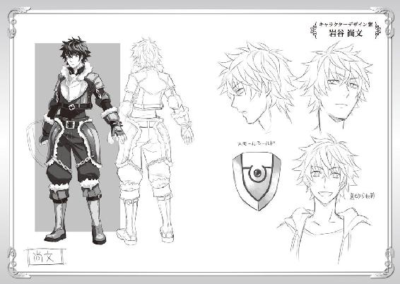
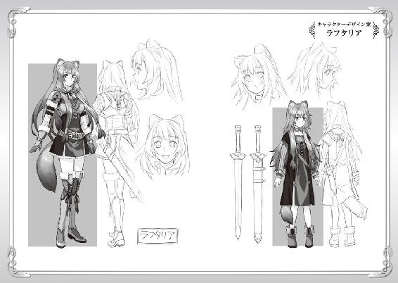
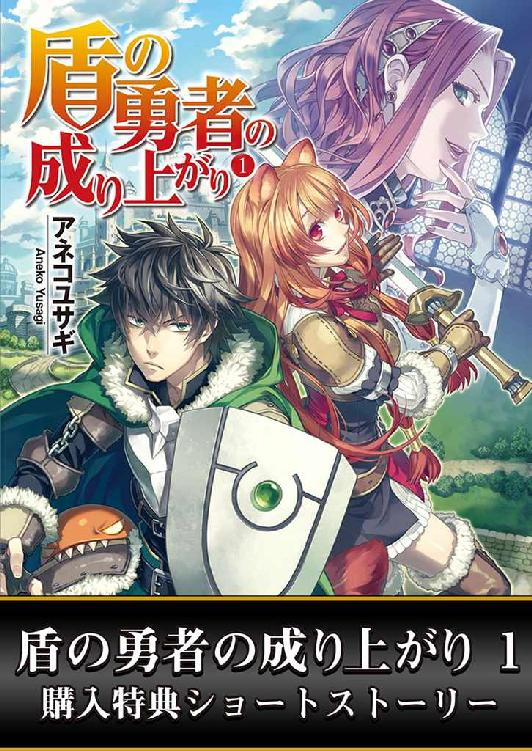
ＭＦブックス
盾の勇者の成り上がり１
特別書き下ろし
アネコユサギ
書き下ろしＳＳ「七つの旗」
その日は城下町で武器防具を新調しようかと考えている日だった。
ま、後数日はリユート村に滞在する予定ではある。
俺は村に来た行商に薬を売って、部屋にちょうど帰ってきた。
ラフタリアが色々な手荷物を整理している。
前に買ったボール、ラフタリアが最初に着用していた服を綺麗に畳んで荷物袋に収めているようだ。
その中に汚れたお子様ランチの旗がある。
ラフタリアはまだ俺が部屋の扉を開けた事に気付いていないみたいだ。
気が付かないラフタリアは汚れた旗を、ゴミとして捨てるどころか大切そうに手に持って。
「えへへ」
と、なんか楽しそうに声を出している。
そうか......ラフタリアはお子様ランチの旗がそんなに好きなのか。
なら戦力となるラフタリアにはやる気を出して貰わねばならない。
でないと波を上手く乗り越えられるかわからんからな。
「あ、ナオフミ様」
俺が帰ってきた事に気付いたラフタリアは旗を荷物袋に閉しまって平静を装う。
「今帰った」
「どうでした？」
「売上は上々だな」
いつものように会話をしていると、俺はとあるアイデアを閃いた。
これさえあればラフタリアも喜んで食事を楽しみ、戦ってくれるだろう。
リユート村から少し離れた山道で遭遇した魔物を倒し、飯時となったので魔物を捌いて肉を焼く事にした。
今日は豪快に鉄串を刺して串焼きだ。
「大分焼けてきましたね」
「そうだな」
俺は美味いかどうか、味覚が無いからよくわからないけれど、見た目と匂いでなんとなく判断する。
薬草の中にある香草っぽいもので肉の下ごしらえをしているから、スパイシーな良い匂いが辺りに漂ってきた。
さて、そろそろだろう。
俺は焼き上がった鉄串を持ち、荷物袋から、昨晩作った自作の旗を串焼きの肉に刺した。
「え!?」
「ほら、ラフタリア。お前の分だ」
俺の世界の国旗だ。
覚えている国旗は複数あるから種類は増やせるだろう。
「あの......なんですかこれ？」
「何って旗だが？」
まあ、確かに旗を付けられたらおかしいとは思うかもしれない。
だけどラフタリアはどうやら旗が好きなようだから与える。
ん？
更に名案が閃いたぞ。
「俺自作の旗では不満か。ではこの旗を七つ集めたら城下町のあの店で旗の付いたランチを注文してやろう」
「いえ、不満では無いですけど......」
「なら存分に食うと良い」
「はい......」
やはり俺の自作じゃ不満か。
とはいいつつ、旗を取ったラフタリアは機嫌良く串焼きを頬張り始める。
そして旗を空に掲げてとてもうれしそうだった。
うん。やはりラフタリアは旗が好きなんだな。
「さて、腹ごなしも済んだし、そろそろＬｖ上げを再開するか」
「はい！」
と、その日の夕方まで俺たちは近隣の魔物を狩り、同時に薬草の採取を続けた。
夕方、リユート村に戻った俺たちは少しだけ豪華なランチを注文した。
なんだかんだ言って疲れてきた。味はわからないが良い物を食わないと体が持たないことを俺は知っている。
ラフタリアにも精の付く物を食って貰わないと。筋肉が付かないだろうし。
タダでさえやせ気味なんだ。万年腹ペコのようだし、下手にケチっても良い事は無い。
「お待たせしました」
酒場で出てくるランチをラフタリアは目で追っている。
コトっと俺達の前にランチが置かれ、店員は次の客の応対を始める。
「ではいただきます」
「あ、ちょっと待て」
「なんですか？」
最近はラフタリアもテーブルマナーを覚えてきて上品になってきているような気がする。
手掴みで食べていたのがウソのようだ。
俺は懐から旗を取り出してランチに刺した。
どうせ近々城下町に行くんだ。それまでの間に旗を増やしてやった方が良い。
「えっと......」
楽しそうに食べようとしていたラフタリアの表情が曇る。
「どうした？」
ああ、衛生観念的にイヤという奴か？ ワガママな奴だな。
そして夜食の時間。最近はあまり空腹で目覚める事は無かったけれど、調合中にラフタリアは目を覚ました。
「なんだ？ 腹が減ったのか？」
「ああ......はい」
昼間に焼いておいた串焼きを取り出して旗を刺そうとした所でラフタリアは俺の手を握る。
「なんだ？」
「あの......もう結構です」
「どうしたんだ？ 旗が好きなのかと思ったのだが」
「好きか嫌いかと言われれば好きですけど、こうボンボン渡されても......」
ああ、なるほどね。
時々貰えるから嬉しい物であって、毎度貰えるとありがたみも薄れるという訳か。
俺もうっかりしていた。本人にしか分からない希少価値という奴だ。
「それはすまなかった」
「はい」
ならば、希少価値さえ見いだせれば嬉しいという事だ。
どうする？ 奴隷の精神状態のケアくらいしておかないと戦いに支障を来すぞ。
なるほど。旗は好きだが、食べ物についている旗が好きなわけではないのか。
「ではこれから、ラフタリアが十分、役に立ったと思ったら旗を進呈しよう」
「は？」
「金の変わりだ。旗が七つ集まったら、一日休みをやる。存分に遊んで来い」
「そういう意味で断った訳じゃないです」
むう......ラフタリアも頑固だな。
「じゃあどうすればいいんだ？」
「ナオフミ様。私はその......別に旗が好きだという意味で大切にしている訳じゃないのですよ」
「そうなのか？」
「なんと言いますか......その......ですね」
あれはお子様ランチ。子供であるラフタリアはきっと両親と一緒に同じように外食で食べさせてもらえていたのかもしれない。
だから過去を振り返って、思い出の旗と比べているのか。
「皆まで言うな、わかった。親との思い出なんだな？」
「えっと」
ラフタリアは目を泳がせてから、諦めたかのように頷く。
「はい。そういう事にしておいてください。似たようなものですから」
違うのか？ どうも気難しい奴だな。
ああ、そう言えば、頭に旗を付けた古いアニメキャラが居たな。
俺は旗を改造して頭に付けられるよう細工し、ラフタリアの頭に乗せることにした。
「後は語尾にダジョーって付けると良い」
「あの......何の冗談ですか？」
「旗好きなキャラクター......物語の登場人物の真似だ」
「怒りますよ？ ダジョー......ですか？」
......ふむ、冷静に考えたら俺もやりすぎだと思う。正直くどいな。しかも古い。
「本当に悪かった」
「はい」
「じゃあ旗は処分だな」
「いえ......今回までで良いですから下さい」
「む、わかった」
ラフタリアは俺から旗を受け取るとそのまま荷物袋に仕舞う。
「この旗は色々な種類があるようですが、何処の旗なのですか？」
「俺の世界の国旗だ」
「いっぱいありますね」
「色々な国があるからなぁ......」
「ナオフミ様の世界って、どんな所なんですか？」
ラフタリアに尋ねられて、俺は元の世界に戻る夢を描く。
ああ......懐かしい。
つまらない日常だと思っていたあの日々がこんなにも恋しいとは思わなかった。
「そうだな......まず魔物とかはいないな。Ｌｖとかの概念も無い」
「そうなのですか!?」
「あと亜人はいない。奴隷制度はあったけど、今じゃ廃れている――」
と、俺は深夜、ラフタリアに故郷である日本の話を聞かせる。
「そのような世界があるのですか」
「ああ、俺の世界はそんな世界だ」
「一度でいいから行ってみたいです。そんな平和で、平凡な世界を」
「ラフタリアは住み辛いと思うぞ」
見世物にされてしまうだろう。安易に哀れな未来が想像できる。
「それでも......私は行ってみたいと思います」
「じゃあもしも行けたら、俺の世界のお子様ランチを奢ってやるよ」
「約束ですよ？」
「ああ」
叶うかどうかわからない約束を、俺はラフタリアとしたのだった。
著者プロフィール
アネコユサギ
Aneko Yuzagi
神奈川県出身。ゲームと読書好きが高じて、小説を書き始める。
『盾の勇者の成り上がり』を執筆し、ネット上に作品を公開。
作品発表後、連日欠かすことなく更新することで病み付きとなる読者が続出し話題となる。２０１３年８月「ＭＦブックス」から商業デビュー。
「どん底からどこまでも出世して行きます」と語る。
盾の勇者の成り上がり１
著者名......アネコユサギ
イラスト...弥南せいら
発行者......三坂泰二
発行所......株式会社メディアファクトリー
http://www.mediafactory.co.jp/
２０１３年８月31日 電子書籍版 ver.1.0.1
無断で複製・複写・放送・データ配信などをすることは、かたくお断りいたします。
©2013 Aneko Yusagi
本書は投稿小説サイト「小説家になろう」（http://syosetu.com/）に発表されたものを加筆の上書籍化したものです。